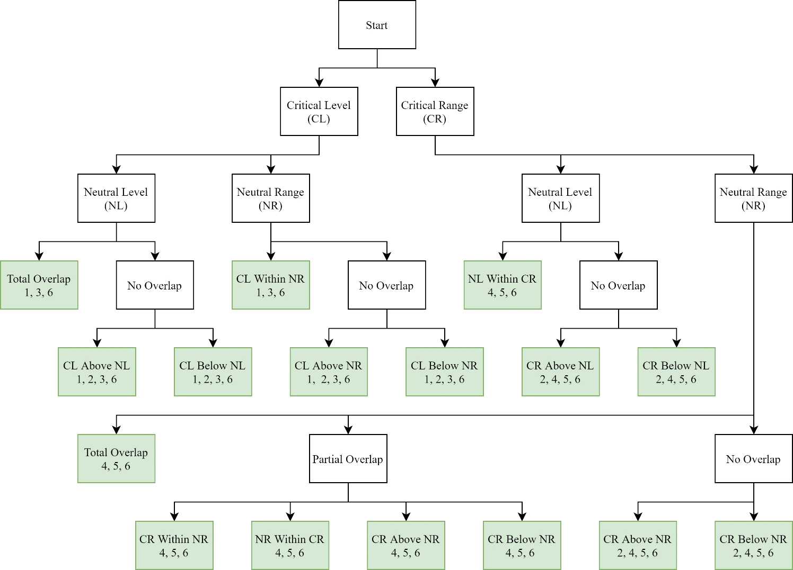
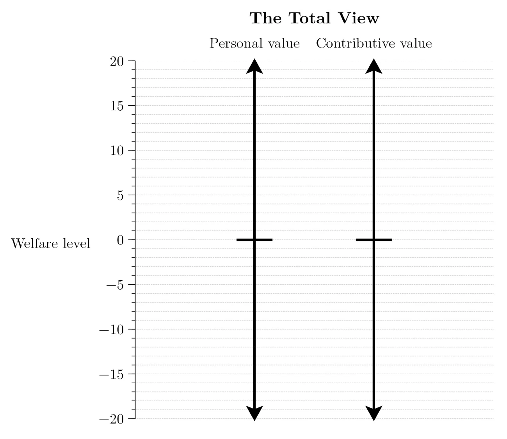
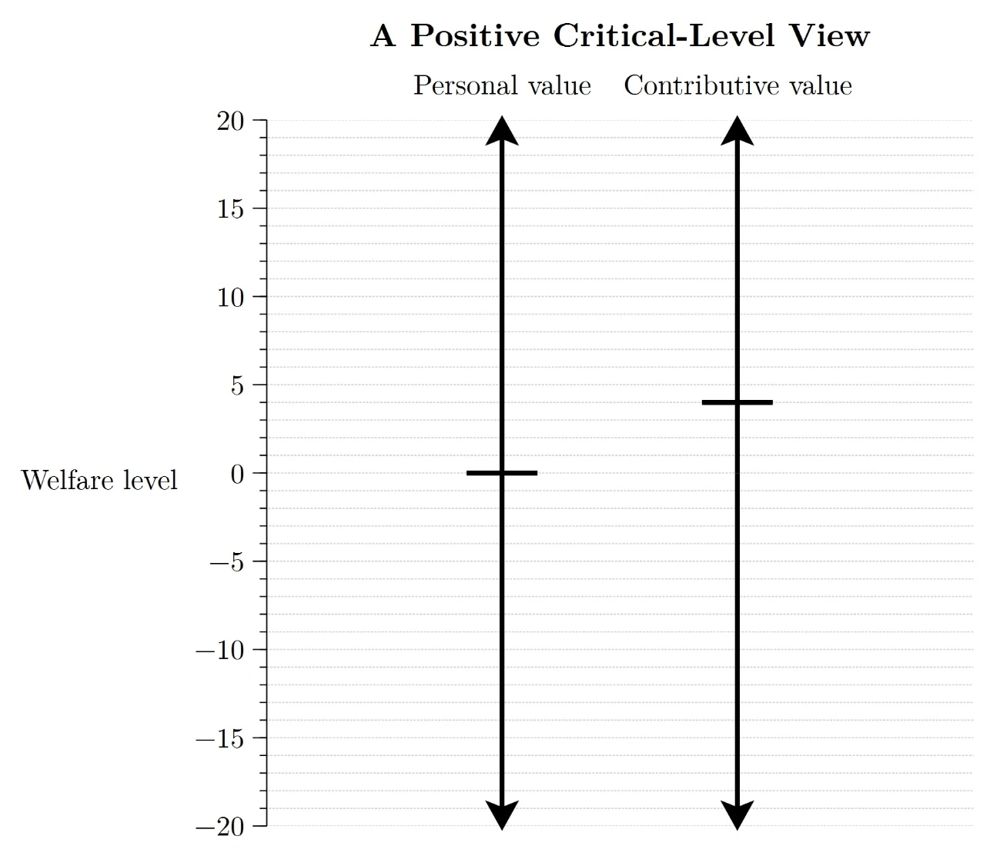
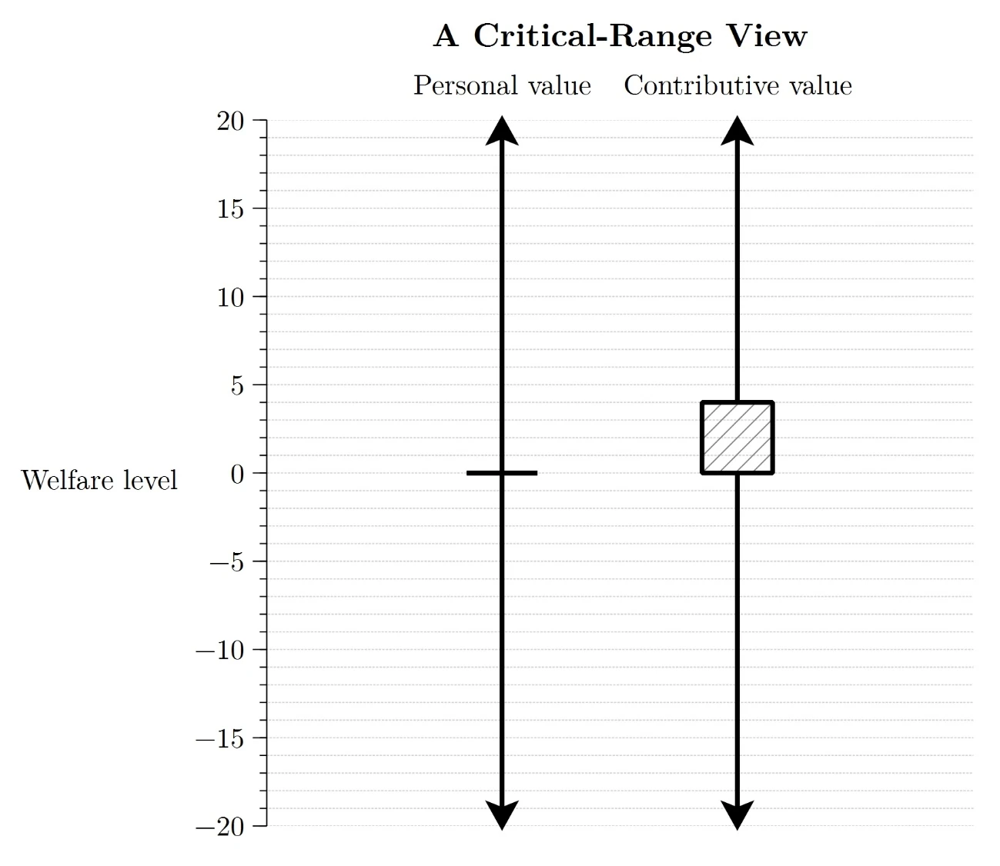
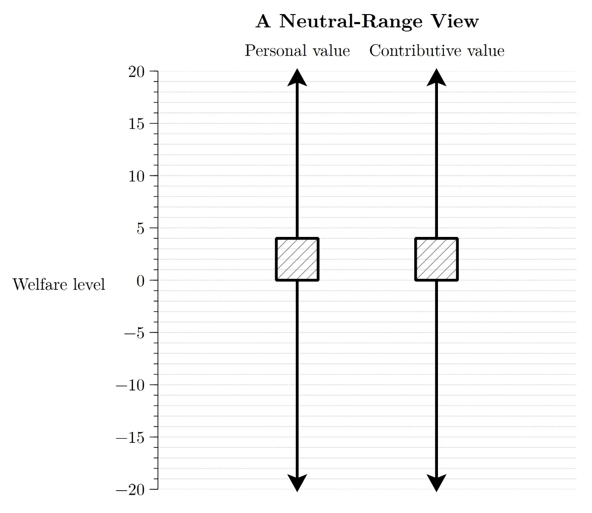
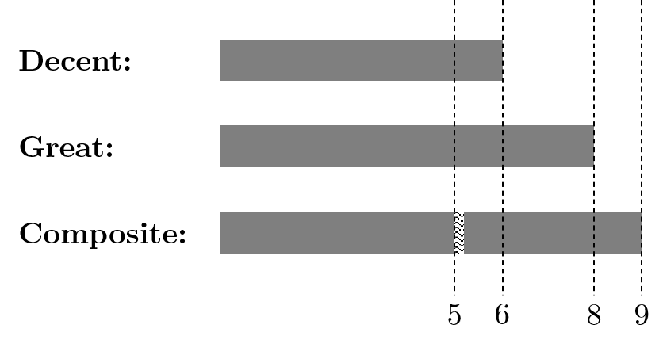

Papers in Population Ethics
Abstract
This thesis consists of a series of papers in population ethics: a subfield of normative ethics concerned with the distinctive issues that arise in cases where our actions can affect the identities or number of people of who ever exist. Each paper can be read independently of the others. In Chapter 1, I present a dilemma for Archimedean views in population axiology: roughly, those views on which adding enough good lives to a population can make that population better than any other. In Chapter 2, I extend Gustaf Arrhenius’s famous impossibility theorems in population axiology into the domain of choices under risk. My risky impossibility theorems dispense with the assumption that welfare levels are finitely fine-grained, and so tell against lexical views in population axiology. In Chapter 3, I present objections to critical-level and critical-range views in population axiology. I then sketch out what I call the ‘Imprecise Exchange Rates View’ and argue that it is an attractive alternative. In Chapter 4, I address critical-level and critical-range views again. This time, I note that they are vulnerable to objections from biographical identity: identity between lives. I suggest that these objections give us reason to reject critical-level and critical-range views and embrace the Total View. In Chapter 5, I argue that objections of the same form – objections from personal identity – tell against person-affecting views in population ethics. In Chapter 6, I draw out some counterintuitive implications of two recent complaints-based theories of the procreation asymmetry.
1. Introduction
Some populations are better than others. For example, a population in which every person lives a wonderful life is better than a population in which those same people live awful lives. And this betterness relation holds (at least sometimes) between populations that differ in size. A population in which every person lives a wonderful life is better than a slightly bigger population in which every person lives an awful life.
These cases are clear-cut, but others are less certain. Is a population in which one million people live a wonderful life better than a population in which one billion people live a good life? Is a population in which two million people live wonderful lives and one million people live awful lives better than a population in which no one lives at all? It would be useful to have a population axiology — an ‘at least as good as’ relation over populations — to adjudicate in cases like these.
Unfortunately, a satisfactory population axiology has proved difficult to find. Many otherwise plausible theories imply what Derek Parfit called the Repugnant Conclusion: each population of wonderful lives is worse than some much larger population of lives barely worth living (1984: 388). And many of the remaining theories imply its negative analogue: each population of awful lives is better than some much larger population of lives barely worth not living.
The source of the trouble might seem to be Archimedeanism about Populations. The positive half of this claim is, roughly, that if adding a life to a population makes that population better, adding enough such lives can make that population better than any other. The negative half is, again roughly, that if adding a life to a population makes that population worse, adding enough such lives can make that population worse than any other. The lesson of the Repugnant Conclusion and its negative analogue seems to be that this kind of outweighing does not always occur. Although each additional life barely worth living might make a population better, no number of lives barely worth living is better than a large number of wonderful lives. And although each additional life barely worth not living might make a population worse, no number of lives barely worth not living is worse than a large number of awful lives.
So, many have claimed, we should be non-Archimedean about
populations (Parfit 1986; 2016; Griffin 1988: 340, fn.27;
Lemos 1993; Rachels 2004; Temkin 2012; Chang 2016; Nebel
2021). Non-Archimedeans claim that some good lives are
weakly noninferior to other good lives: there is
some good life
However, previous iterations of non-Archimedean views
have failed to gain much support, due in large part to their
violation of either Transitivity or
Separability over Lives: they imply either that
some population
Unfortunately, there’s a catch. As we will see, these
lexical views, in conjunction with an assumption about the
size of the differences between possible lives, imply that
some good life is strongly noninferior to a life
only slightly worse: there is some good life
We might judge that accepting the Repugnant Conclusion is
preferable to each horn of this lexical dilemma,
and so embrace an Archimedean view. However, in this chapter
I show that Archimedean views face an analogous dilemma.
This dilemma arises because Archimedean views also endorse a
kind of strong noninferiority: they claim that any number of
good lives is not worse than any number of bad lives. This
claim, in conjunction with the same assumption about the
size of the differences between possible lives, implies that
some good life is strongly noninferior to a life only
slightly worse: there is some good life
The conclusion is that the lexical dilemma gives us little reason to prefer an Archimedean view. Even if we give up on lexicality, problems of the same kind remain.
2. The Framework
In this section, I offer definitions and assumptions
intended to be uncontroversial in the dispute between
Archimedeans and lexicalists. Foundational to this chapter
is the notion of a life. These lives are individuated,
first, by the person whose life it is and, second, by the
welfare of that person. Welfare is a measure of how good a
person’s life is for them. I assume that the ‘has at least
as high welfare as’ relation applied to the set of possible
lives is reflexive and transitive. Life
Note, however, that the ‘has at least as high welfare as’
relation need not be complete over the set of possible
lives. There may be lives
Lives are either personally good, bad, strictly neutral,
or weakly neutral. Which category a life falls in depends on
how it compares to some standard. Life
A population is a set of
lives.In this paper, I restrict my attention to finite populations. For
discussion of infinite populations, see Bostrom (2011).
A population axiology is an ‘at least as good as’ relation
on the set of all possible populations. Population
The ‘at least as good as’ relation is reflexive over the
set of possible populations, but it need not be complete.
Populations
I assume welfarist anonymity: if two
populations feature the same number of lives at each welfare
level, then they are equally good. This assumption allows us
to represent each population with a distribution — a finite,
unordered list of welfare levels, allowing repetitions — so
that one population is at least as good as another iff its
distribution is at least as good. I denote these
distributions with uppercase letters in double-struck square
brackets:
This notation is useful in clarifying the notion of a
life’s contributive value relative to a population.
Life
I assume Separability over Lives.Blackorby, Bossert, and Donaldson (2005: 132) call this assumption ‘existence independence.’ Roughly, this is the claim that the existence and welfare of unaffected people cannot make a difference to how populations compare. More precisely:
Separability over Lives
For all populations
, , and , is at least as good as iff is at least as good as .
This assumption is contested by some (Carlson 1998: 290–91) and denied by egalitarian, variable value, and average views. But it is prima facie plausible and there are strong arguments in its favour (Blackorby, Bossert, and Donaldson 2005: 133; Thomas 2022a). In any case, Separability is agreed upon by many Archimedeans and all lexicalists. Many lexicalists take the satisfaction of Separability to be a major advantage of their view over previous non-Archimedean views (Parfit 2016: 112; Nebel 2021: 16).
Separability entails that each life has the same
contributive value relative to all populations. If life
Finally, I assume that the ‘at least as good as’ relation over populations is transitive:
Transitivity
For all populations
, , and , if is at least as good as and is at least as good as , then is at least as good as .
Although some non-Archimedeans avoid the Repugnant Conclusion by denying Transitivity (Rachels 2004; Temkin 2012), this move strikes most as unduly drastic. In any case, Transitivity is common ground in the debate between Archimedeans and lexicalists.
This chapter centres around four relations between lives: superiority, inferiority, nonsuperiority, and noninferiority. Each relation has strong and weak versions. The differences are subtle and the names are unwieldy but, unfortunately, the difficulty is unavoidable. The best course of action is to lay them all out here, for initial acquaintance and later reference.
First, strong and weak superiority:
Strong Superiority
Life
is strongly superior to life iff any number of lives at is better than any number of lives at . Weak Superiority
Life
is weakly superior to life iff some number of lives at is better than any number of lives at .
Strong and weak noninferiority are the same, except with ‘not worse’ in place of ‘better’:
Strong Noninferiority
Life
is strongly noninferior to life iff any number of lives at is not worse than any number of lives at . Weak Noninferiority
Life
is weakly noninferior to life iff some number of lives at is not worse than any number of lives at .
Noninferiority, as distinct from superiority, is
important if the ‘at least as good as’ relation on the set
of populations is incomplete. Life
Strong and weak inferiority are the negative variants of strong and weak superiority:
Strong Inferiority
Life
is strongly inferior to life iff any number of lives at is worse than any number of lives at . Weak Inferiority
Life
is weakly inferior to life iff some number of lives at is worse than any number of lives at .
Strong and weak nonsuperiority are the same, except with ‘not better’ in place of ‘worse’:
Strong Nonsuperiority
Life
is strongly nonsuperior to life iff any number of lives at is not better than any number of lives at . Weak Nonsuperiority
Life
is weakly nonsuperior to life iff some number of lives at is not better than any number of lives at .
If the ‘at least as good as’ relation on the set of
populations is incomplete, life
3. The Lexical Dilemma
With all that in mind, we can formulate the Repugnant Conclusion as follows:
The Repugnant Conclusion
Each population consisting only of wonderful lives is worse than some much larger population consisting only of lives barely worth living. (Parfit 1984: 388)
This conclusion strikes many as obviously false. But we cannot avoid it if we accept the following two claims:
The Equivalence of Personal and Contributive Value
A life is personally good (bad/strictly neutral/weakly neutral) iff it is contributively good (bad/strictly neutral/weakly neutral). (Rabinowicz 2009: 391; Gustafsson 2020: 87)
Archimedeanism about Populations
For any population
and any contributively good life , there is some number such that lives at is better than .Strictly, this is the positive half of Archimedeanism about Populations. The negative half is as follows: for any population and any contributively bad life , there is some number such that lives at is worse than .
The Equivalence of Personal and Contributive Value implies that lives barely worth living are contributively good.Advocates of critical-level and critical-range views deny this claim. Critical-level views raise the level of contributive strict neutrality above the level of personal strict neutrality, so that some personally good lives are contributively bad (Blackorby, Bossert, and Donaldson 2005; Bossert 2022). That means that these views avoid the Repugnant Conclusion at the expense of implying the Sadistic Conclusion: each population of awful lives is better than some much larger population of personally good lives. Critical-range views, meanwhile, claim that a range of welfare levels are contributively weakly neutral (Blackorby, Bossert, and Donaldson 1996; Broome 2004; Qizilbash 2007; Rabinowicz 2009). Lives barely worth living fall within this range, so adding them makes a population neither better nor worse. That allows these views to avoid both the Repugnant and the Sadistic Conclusions. As we will see, however, these views imply the second horn of the Archimedean dilemma: radical and symmetric incommensurability. For more discussion of critical-level and critical-range views, see Gustafsson (2020), Rabinowicz (2020), and Chapter 3 of this thesis. Archimedeanism about Populations then implies that enough lives barely worth living can be better than any population of wonderful lives. Non-Archimedeans choose to deny this latter claim (Parfit 1986; 2016; Griffin 1988: 340, fn.27; Lemos 1993; Rachels 2004; Temkin 2012; Chang 2016; Nebel 2021). They claim that some contributively good lives are weakly noninferior to other contributively good lives:Indeed, most non-Archimedeans make the stronger claim that some good lives are weakly superior to other good lives. See footnote 9.
Weak Noninferiority Across Good Lives
There is some contributively good life
, some contributively good life , and some number such that lives at is not worse than any number of lives at .
This move allows non-Archimedeans to avoid the Repugnant Conclusion without giving up the Equivalence of Personal and Contributive Value. They simply claim that wonderful lives are weakly noninferior to lives barely worth living.
However, some non-Archimedean views violate Transitivity (Rachels 2004; Temkin 2012). Other non-Archimedean views violate Separability (Hurka 1983; Ng 1989). Lexical views incur neither of these costs. By representing welfare levels with vectors, rather than scalars, they can avoid the Repugnant Conclusion while preserving Transitivity and Separability (Kitcher 2000; Thomas 2018; Nebel 2021; Carlson 2022).
Here’s one example of a lexical view. Welfare levels are
given by vectors with two dimensions, each dimension
representable by an integer without upper or lower bound.
The first dimension quantifies the higher goods in
that life: perhaps things like autonomy and meaning. The
second dimension quantifies the lower goods:
perhaps things like sensual pleasure. These vectors are
ordered lexically, so that
Kitcher (2000), Thomas (2018), Nebel (2021), and Carlson
(2022) offer lexical views along these lines. As they note,
these views can be tweaked and generalised in various ways.
Lives could be represented by vectors with any number of
elements, each element could be represented by any subset of
the real numbers, and the ordering could employ thresholds
of various kinds. Employing thresholds in the ordering
allows lexical views to account for incommensurability
between populations and lives. Suppose, for example, that
population
It’s easy to see that these lexical views satisfy
Transitivity. They also satisfy Separability, because the
value of a population is the sum of the values of its lives.
And they avoid the Repugnant Conclusion if we specify that
wonderful lives feature some positive quantity of higher
goods and lives barely worth living do not. That’s because,
in our initial example of a lexical view, lives with welfare
Unfortunately, there’s a catch. The weak noninferiority of wonderful lives over lives barely worth living, in conjunction with two assumptions, implies that weak noninferiority holds between lives that differ only slightly in non-evaluative respects. The first assumption is Transitivity, and the second we can call Small Steps:
Small Steps
For any two welfare levels, there exists a finite sequence of slight non-evaluative differences between lives at those levels.This assumption is an amended version of Arrhenius’s (2016: 171) Finite Fine-Grainedness and Thomas’s (2018: 815) Small Steps. Their versions refer to slight welfare differences rather than slight non-evaluative differences. As I note below, Arrhenius’s and Thomas’s versions are easier for the lexicalist to deny.
What I mean by a ‘slight non-evaluative difference’ can be made clear enough using examples. Suppose that two lives are identical but for the fact that one of them features one additional second spent in pain. Then the non-evaluative difference between these lives is slight. The same goes for lives identical but for an extra second spent believing some false proposition, or appreciating beautiful music, or conversing with a loved one. Understood in this way, Small Steps seems difficult to deny. By making enough slight non-evaluative changes, we can make lives arbitrarily good or bad.For readability, I drop the ‘non-evaluative’ in what follows. Unless otherwise specified, ‘slight differences’ and ‘slight changes’ refer to non-evaluative differences and changes.
To see how the weak noninferiority of wonderful lives
over lives barely worth living plus Transitivity and Small
Steps implies that weak noninferiority holds between lives
that differ only slightly, consider a wonderful life
Accepting Separability commits the lexicalist to an even
stronger conclusion. Given Transitivity and Separability,
weak noninferiority collapses into strong
noninferiority. The lexical view then implies Strong
Noninferiority Across Slight Differences: any
number of lives at
Here’s how. Suppose, for contradiction, that
Nevertheless, lexical views remain popular. Two
responses, not mutually exclusive, are common. The first is
to reject an assumption left implicit in my discussion thus
far. I write that
We can flesh out this response as follows. Recall that, on the lexicalist’s representation of welfare levels, wonderful lives feature some positive quantity of higher goods and lives barely worth living do not. That implies that, in any sequence uniting wonderful lives and lives barely worth living, there will be a point at which the quantity of higher goods falls to 0. This fall might correspond to the point at which lives cease to be meaningful or autonomous (Nebel 2021, 11), or the point at which lives no longer instantiate a certain combination of global properties: for example, ‘satisfying personal relations, some understanding of what makes life worth while, appreciation of great beauty, the chance to accomplish something with one’s life.’ (Griffin 1988: 86; see also Carlson 2022: 21).To anticipate a little, lexicalists can claim that it is indeterminate whether a life instantiates such properties, and hence indeterminate whether some life is strongly superior or noninferior to another (Thomas 2018: 828–29; Nebel 2021: 27–30). As we will see, this indeterminacy must be radical in order to block the Repugnant Conclusion. Lexicalists can then claim that any life featuring no higher goods is significantly worse than any life featuring some higher goods, so that strong noninferiority across such lives is of little concern.
The second response is to claim that Strong Noninferiority Across Slight Differences is benign. If we find it troubling, that is only because we assume Trichotomous Completeness:
Trichotomous Completeness
For all populations
and , either is better than , is better than , or and are equally good.
If we assume Trichotomous Completeness, then Strong
Noninferiority Across Slight Differences is tantamount to
Strong Superiority Across Slight Differences: any
number of lives at
This strategy seems to offer an attractively conservative
way of avoiding the Repugnant Conclusion. It preserves both
Separability and Transitivity, and it softens the blow of
Strong Noninferiority Across Slight Differences by denying a
principle which seems implausible anyway: Trichotomous
Completeness. A more general version of this principle —
quantifying over all value-bearers, rather than just
populations — is impugned by existing Small Improvement
Arguments (De Sousa 1974; Chang 2002), and a structurally
identical argument tells against the restricted principle.
Suppose, for example, that population
However, trouble remains. Suppose that we grant the
lexicalist’s claims about higher goods: in any sequence
uniting wonderful lives and lives barely worth living, there
will be a point at which the quantity of higher goods falls
to 0, and any lives occurring after this point are
significantly worse than those that come before. We
might complain that this move merely masks — and does not
solve — the difficulty presented by the
Things get worse if we focus on bad lives. The Repugnant Conclusion has a negative analogue:
The Negative Repugnant Conclusion
Each population consisting only of awful lives is better than some much larger population consisting only of lives barely worth not living.
And if we uphold the Equivalence of Personal and Contributive Value, this conclusion can be avoided only by claiming Weak Nonsuperiority Across Bad Lives:
Weak Nonsuperiority Across Bad Lives
There is some contributively bad life
, some contributively bad life , and some number such that lives at is not better than any number of lives at .
But as shown above, this claim — in conjunction with Transitivity and Separability — implies Strong Nonsuperiority Across Bad Lives:
Strong Nonsuperiority Across Bad Lives
There is some contributively bad life
and some contributively bad life such that any number of lives at is not better than any number of lives .
And the truth of Small Steps implies Strong
Nonsuperiority Across Slight Differences. Suppose
What’s more, Handfield and Rabinowicz (2018) prove that
the combination of weak noninferiority and the denial of
Trichotomous Completeness — along with Transitivity and a
weakening of Separability (see 2018: 2385) — has another
undesirable implication: to avoid the Repugnant Conclusion,
the incommensurability at work has to be radical.
Here’s what that means. Suppose population
Besides seeming implausible, such radical departures from
Trichotomous Completeness lack a key feature shared by other
examples of incommensurability in the literature: in those
examples, if a change in some good-making feature can take
an option
I can now summarise the lexical dilemma. If lexicalists
uphold Trichotomous Completeness, they are committed to
Strong Superiority Across Slight Differences: any number of
good lives at
4. The Archimedean Dilemma
We might regard the lexical dilemma as strong reason to
embrace an Archimedean view. However, this would be a
mistake. As we will see, Archimedean views are subject to an
analogous dilemma: either a single contributively good life
To see how the Archimedean dilemma arises, consider the following two claims:
Contributively Good Life
There is some life
and some population such that is better than . Contributively Bad Life
There is some life
and some population such that is worse than .
Together with Transitivity and Separability, these two
claims imply that contributively good lives are strongly
noninferior to contributively bad
lives.I once again drop the ‘contributively’ in what follows; ‘good,’
‘better,’ etc., stand for ‘contributively good,’ ‘contributively
better,’ etc., unless otherwise stated.
Here’s how. Let ‘
Adding Small Steps then yields Strong Noninferiority
Across Slight Differences. To see how, consider a sequence
beginning with a good life
Now for the first horn of the Archimedean dilemma. If
Archimedeans accept Trichotomous Completeness, then Strong
Noninferiority Across Slight Differences is tantamount to
Strong Superiority Across Slight Differences: any
number of lives at
Archimedeans might claim that this implication is of
little concern. After all, strong superiority sets in at the
point where lives stop being good. Lives at
Hence the appeal of denying Trichotomous Completeness.
That move allows Archimedeans to claim that there is no
sharp divide between good and bad lives. Instead, some range
of lives in our
As we will see, however, denying Trichotomous
Completeness leaves the Archimedean vulnerable to the second
horn of their dilemma. To see how, note first that departing
from Trichotomous Completeness renders the Archimedean
subject to the same objection that Handfield and Rabinowicz
(2018) level against the lexicalist: the departure in
question has to be radical. Here’s a reminder of
what that means. Suppose population
Of course, the Archimedean might respond that the
objection misses its mark in this case. The objection is
effective against the lexicalist because lives at
To see how, recall that for any weakly neutral life
We need not assume that adding a weakly neutral life always results in incommensurability that is insensitive to slight changes. The proof can make do with a substantially weaker assumption, which we can call Insensitivity:
Insensitivity
There exists some sequence of slight differences — running from a good life
to a bad life and containing some weakly neutral life — such that for any life in the sequence and any populations and , there exists some number such that, if is incommensurable with , then and are incommensurable with .
This assortment of quantifiers is difficult to parse, so
here’s a rough explanation. We start with two
incommensurable populations, represented by the
distributions
Now let
Consider a population of
We can do the same when we raise a second life up from
The same is true when we make the lives at
Letting
I can now summarise the Archimedean dilemma. If Archimedeans uphold Trichotomous Completeness, they are committed to Strong Superiority Across Slight Differences. Many slight changes to lives are of little consequence, but one slight change flips the lives from good to either strictly neutral or bad, and any number of the former lives is better than any number of the latter. This implication is liable to seem especially implausible if both lives are long and turbulent, and the slight change consists in a single extra second of pain. If, on the other hand, Archimedeans depart from Trichotomous Completeness, then that departure must be both radical and symmetric. They are committed to the claim that, no matter how good and numerous the lives in Heaven and no matter how bad and numerous the lives in Hell, there is some number of weakly neutral lives that is both not worse than Heaven and not better than Hell.
That brings us to the conclusion of this chapter: the
lexical dilemma gives us little reason to prefer an
Archimedean view. For recall how the lexical dilemma is
derived. We begin with the non-Archimedean claim that some
good lives are weakly noninferior to others: there is some
good life
The Archimedean dilemma is derived in parallel fashion.
We begin with the Archimedean claim that some lives are
strongly noninferior to others: there is some life
The upshot is that the lexical dilemma gives us little reason to embrace an Archimedean view. Even if we give up on lexicality, problems of the same kind remain.I thank Teruji Thomas and two anonymous reviewers for Economics and Philosophy for helpful comments and discussion. This chapter has been published as Thornley (2022).
References
Arrhenius, Gustaf. 2000. ‘Future Generations: A Challenge for Moral Theory’. PhD Thesis, Uppsala University.
———. 2011. ‘The Impossibility of a Satisfactory Population Ethics’. In Descriptive and Normative Approaches to Human Behavior, edited by Ehtibar N. Dzhafarov and Lacey Perry, 1–26. Singapore: World Scientific Publishing Company.
———. 2016. ‘Population Ethics and Different-Number-Based Imprecision’. Theoria 82 (2): 166–81.
———. forthcoming. Population Ethics: The Challenge of Future Generations. Oxford: Oxford University Press.
Arrhenius, Gustaf, and Wlodek Rabinowicz. 2005. ‘Millian Superiorities’. Utilitas 17 (2): 127–46.
———. 2015a. ‘The Value of Existence’. In The Oxford Handbook of Value Theory, edited by Iwao Hirose and Jonas Olson, 424–44. New York: Oxford University Press.
———. 2015b. ‘Value Superiority’. In The Oxford Handbook of Value Theory, edited by Iwao Hirose and Jonas Olson, 225–48. New York: Oxford University Press.
Bacon, Andrew. 2018. Vagueness and Thought Oxford, New York: Oxford University Press.
Blackorby, Charles, Walter Bossert, and David Donaldson. 1996. ‘Quasi-Orderings and Population Ethics’. Social Choice and Welfare 13 (2): 129–50.
———. 2005. Population Issues in Social Choice Theory, Welfare Economics, and Ethics Cambridge: Cambridge University Press.
Bossert, Walter. 2022. ‘Anonymous Welfarism, Critical-Level Principles, and the Repugnant and Sadistic Conclusions’. In The Oxford Handbook of Population Ethics, edited by Gustaf Arrhenius, Krister Bykvist, Tim Campbell, and Elizabeth Finneron-Burns. Oxford: Oxford University Press.
Bostrom, Nick. 2011. ‘Infinite Ethics’. Analysis and Metaphysics 10: 9–59.
Broome, John. 2004. Weighing Lives Oxford: Oxford University Press.
Bykvist, Krister. 2007. ‘The Good, the Bad and the Ethically Neutral’. Economics & Philosophy 23 (1): 97–105.
Carlson, Erik. 1998. ‘Mere Addition and Two Trilemmas of Population Ethics’. Economics & Philosophy 14 (2): 283–306.
———. 2022. ‘On Some Impossibility Theorems in Population Ethics’. In The Oxford Handbook of Population Ethics, edited by Gustaf Arrhenius, Krister Bykvist, Tim Campbell, and Elizabeth Finneron-Burns. Oxford: Oxford University Press.
Chang, Ruth. 2002. ‘The Possibility of Parity’. Ethics 112 (4): 659–88.
———. 2005. ‘Parity, Interval Value, and Choice’. Ethics 115 (2): 331–50.
———. 2016. ‘Parity, Imprecise Comparability, and the Repugnant Conclusion’. Theoria 82 (2): 183–215.
De Sousa, Ronald B. 1974. ‘The Good and the True’. Mind 83 (332): 534–51.
Frick, Johann. 2017. ‘On the Survival of Humanity’. Canadian Journal of Philosophy 47 (2–3): 344–67.
Griffin, James. 1988. Well-Being: Its Meaning, Measurement and Moral Importance. Oxford: Oxford University Press.
Gustafsson, Johan E. 2020. ‘Population Axiology and the Possibility of a Fourth Category of Absolute Value’. Economics & Philosophy 36 (1): 81–110.
Handfield, Toby, and Wlodek Rabinowicz. 2018. ‘Incommensurability and Vagueness in Spectrum Arguments: Options for Saving Transitivity of Betterness’. Philosophical Studies 175 (9): 2373–87.
Hurka, Thomas. 1983. ‘Value and Population Size’. Ethics 93 (3): 496–507.
Jensen, Karsten Klint. 2008. ‘Millian Superiorities and the Repugnant Conclusion’. Utilitas 20 (3): 279–300.
———. 2020. ‘Weak Superiority, Imprecise Equality and the Repugnant Conclusion’. Utilitas 32 (3): 294–315.
Kitcher, Philip. 2000. ‘Parfit’s Puzzle’. Noûs 34 (4): 550–77.
Knapp, Christopher. 2007. ‘Trading Quality for Quantity’. Journal of Philosophical Research 32 (1): 211–33.
Knutsson, Simon. 2021. ‘Many-Valued Logic and Sequence Arguments in Value Theory’. Synthese 199 (3): 10793–825.
Lemos, Noah M. 1993. ‘Higher Goods and the Myth of Tithonus’. Journal of Philosophy 90 (9): 482.
Nebel, Jacob M. 2021. ‘Totalism without Repugnance’. In Ethics and Existence: The Legacy of Derek Parfit, edited by Jeff McMahan, Tim Campbell, James Goodrich, and Ketan Ramakrishnan. Oxford: Oxford University Press.
Ng, Yew-Kwang. 1989. ‘What Should We Do about Future Generations? Impossibility of Parfit’s Theory X’. Economics & Philosophy 5: 235–53.
Parfit, Derek. 1984. Reasons and Persons. Oxford: Clarendon Press.
———. 1986. ‘Overpopulation and the Quality of Life’. In Applied Ethics, edited by Peter Singer, 145–64. Oxford: Oxford University Press.
———. 2016. ‘Can We Avoid the Repugnant Conclusion?’ Theoria 82 (2): 110–27.
Qizilbash, Mozaffar. 2005. ‘Transitivity and Vagueness’. Economics & Philosophy 21 (1): 109–31.
———. 2007. ‘The Mere Addition Paradox, Parity and Vagueness’. Philosophy and Phenomenological Research 75 (1): 129–51.
Rabinowicz, Wlodek. 2008. ‘Value Relations’. Theoria 74 (1): 18–49.
———. 2009. ‘Broome and the Intuition of Neutrality’. Philosophical Issues 19 (1): 389–411.
———. 2012. ‘Value Relations Revisited’. Economics & Philosophy 28 (2): 133–64.
———. 2019. ‘Can Parfit’s Appeal to Incommensurabilities Block the Continuum Argument for the Repugnant Conclusion?’ In Studies on Climate Ethics and Future Generations, Vol. 1, edited by Paul Bowman and Katharina Berndt Rasmussen. Working Paper Series. Stockholm: Institute for Futures Studies.
———. 2020. ‘Getting Personal: The Intuition of Neutrality Reinterpreted’. In Studies on Climate Ethics and Future Generations, Vol. 2, edited by Paul Bowman and Katharina Berndt Rasmussen. Working Paper Series. Stockholm: Institute for Futures Studies.
Rachels, Stuart. 2004. ‘Repugnance or Intransitivity: A Repugnant But Forced Choice’. In The Repugnant Conclusion: Essays on Population Ethics, edited by Jesper Ryberg and Torbjörn Tännsjö, 163–86. Dordrecht: Kluwer Academic Publishers.
Raz, Joseph. 1986. ‘Value Incommensurability: Some Preliminaries’. Proceedings of the Aristotelian Society 86: 117–34.
Temkin, Larry S. 2012. Rethinking the Good: Moral Ideals and the Nature of Practical Reasoning. New York: Oxford University Press.
Thomas, Teruji. 2018. ‘Some Possibilities in Population Axiology’. Mind 127 (507): 807–32.
———. 2022a. ‘Separability and Population Ethics’. In The Oxford Handbook of Population Ethics, edited by Gustaf Arrhenius, Krister Bykvist, Tim Campbell, and Elizabeth Finneron-Burns, 271–95. Oxford: Oxford University Press.
———. 2022b. ‘Are Spectrum Arguments Defused by Vagueness?’ Australasian Journal of Philosophy 100 (4): 743–57.
Thornley, Elliott. 2022. ‘A Dilemma for Lexical and Archimedean Views in Population Axiology’. Economics & Philosophy 38 (3): 395–415.
Chapter 2: The Impossibility of a Satisfactory Population Prospect Axiology (Independently of Finite Fine-Grainedness)
Abstract: Arrhenius’s impossibility theorems purport to demonstrate that no population axiology can satisfy each of a small number of intuitively compelling adequacy conditions. However, it has recently been pointed out that each theorem depends on a dubious assumption: Finite Fine-Grainedness. This assumption states that there exists a finite sequence of slight welfare differences between any two welfare levels. Denying Finite Fine-Grainedness makes room for a lexical population axiology which satisfies all of the compelling adequacy conditions in each theorem. Therefore, Arrhenius’s theorems fail to prove that there is no satisfactory population axiology.
In this chapter, I argue that Arrhenius’s theorems can be repurposed. Since all of our population-affecting actions have a non-zero probability of bringing about more than one distinct population, it is population prospect axiologies that are of practical relevance, and amended versions of Arrhenius’s theorems demonstrate that there is no satisfactory population prospect axiology. These impossibility theorems do not depend on Finite Fine-Grainedness, so lexical views do not escape them.
1. Introduction
Some possible populations are better than others. For example, a population in which every person lives a wonderful life is better than a population in which those same people live awful lives. What’s more, this betterness relation holds (at least sometimes) between populations that differ in size. A population in which every person lives a wonderful life is better than a marginally bigger population in which every person lives an awful life.
These cases are clear-cut, but others are less certain. Is a population in which one million people live a wonderful life better than a population in which one billion people live a good life? Is a population in which two million people live wonderful lives and one million people live awful lives better than a population in which no one lives at all? It would be useful to have a population axiology – a betterness ordering over populations – to adjudicate in cases like these.
Unfortunately, formulating a satisfactory population axiology has proved difficult. Indeed, some claim that it is impossible. Several authors offer impossibility theorems purporting to demonstrate that no population axiology can satisfy a small number of adequacy conditions.See, for example, Parfit (1984, chap. 19), Ng (1989), Blackorby and Donaldson (1991), Carlson (1998), Kitcher (2000), and Tännsjö (2002). Arrhenius’s six theorems represent the state-of-the-art.The first four theorems are in Arrhenius (2000). The fifth is in (2003) and the sixth is in (2009; 2011). All six are collated in (forthcoming). They employ logically weaker and intuitively more compelling adequacy conditions than other theorems extant in the literature, and so have drawn much of the scholarly attention.
However, it has recently been pointed out that each of Arrhenius’s six theorems rests on a dubious assumption (Thomas 2018; Carlson 2022). The assumption, which has been dubbed Finite Fine-Grainedness, states that one can get from a very positive welfare level to a very negative welfare level via a finite number of ‘slight’ decreases in welfare.Thomas (2018) calls the assumption ‘Small Steps.’ The upshot of denying Finite Fine-Grainedness is twofold. First, it makes room for a lexical population axiology in which welfare levels and population-values are represented by vectors. Views of this kind constitute a counterexample to Arrhenius’s First, Fourth, Fifth, and Sixth Impossibility Theorems. Second, it strips certain adequacy conditions of their plausibility. More precisely, it renders doubtful the Inequality Aversion condition employed in Arrhenius’s Second and Third Impossibility Theorems. Therefore, none of Arrhenius’s six theorems proves that there is no satisfactory population axiology. Each theorem depends on Finite Fine-Grainedness for the validity of its proof or the plausibility of its adequacy conditions.
Nevertheless, Arrhenius’s theorems remain important. In this chapter, I demonstrate that they can be turned into theorems stating the impossibility of a satisfactory population prospect axiology: a satisfactory betterness ordering over alternatives that have some probability of bringing about one or more distinct populations. Since all of our population-affecting actions have a non-zero probability of bringing about more than one distinct population, it is population prospect axiologies that are of practical relevance, and these amended theorems state that no such axiology can satisfy each of a small number of compelling adequacy conditions. The key difference is that these theorems employ risky versions of Arrhenius’s original conditions. The original conditions mandate, roughly, that a drop in welfare for one person can be compensated by a large enough increase in welfare elsewhere. The risky versions mandate, again roughly, that a slightly increased risk of a drop in welfare for one person can be compensated by a large enough increase in welfare elsewhere. These risky adequacy conditions are compelling even if Finite Fine-Grainedness is false, so lexical views do not escape these amended theorems.
I begin in Section 2 by outlining the framework of this chapter more precisely. Then in Section 3 I formulate the adequacy conditions for Arrhenius’s favoured Sixth Impossibility Theorem. I give some prima facie reasons to doubt Finite Fine-Grainedness in Section 4, after which I sketch out a simple lexical view and explain how it escapes the Sixth Theorem. Then in Section 5 I present a risky version of the theorem that does not depend on the truth of Finite Fine-Grainedness. I prove that Arrhenius’s other impossibility theorems can be patched up with a similar manoeuvre in the Appendix.
2. The Framework
In this chapter, I use definitions and structural assumptions broadly in line with those of Arrhenius (2011; forthcoming). Two exceptions are worth noting. First, I borrow notation from Thomas’s manuscripthttp://users.ox.ac.uk/~mert2060/webfiles/Reconstructing-Arrhenius-for-web.pdf to simplify the presentation of the adequacy conditions and proofs. Second, I drop the assumption of Finite Fine-Grainedness in Section 5 and substitute new assumptions about the ordering of population prospects.
Arrhenius’s impossibility theorems make extensive use of
the notion of welfare: a measure of how good a
person’s life is for them. Lives are individuated by the
person whose life it is and the kind of life it is, and it
is assumed that the ‘has at least as high welfare as’
relation applied to the set of possible lives is reflexive
and transitive, but not necessarily complete. Life
A life is neutral iff it is equally good for the person living it as some standard. This standard is defined differently by different authors. Arrhenius (2011, 5) defines it as a neutral welfare component: a component that makes a person’s life neither better nor worse. Others define it as nonexistence (Arrhenius and Rabinowicz 2015) or a life constantly at a neutral level of temporal welfare (Broome 2004, 68; Bykvist 2007, 101). My discussion is compatible with all such definitions. A life is at a positive welfare level iff it is better than the standard, and at a negative welfare level iff it is worse than the standard.
Arrhenius assumes Finite Fine-Grainedness:
Finite Fine-Grainedness
There exists a finite sequence of slight welfare differences between any two welfare levels. (Arrhenius 2016, 171; forthcoming)
We can leave ‘slight’ to be understood intuitively for
now. Suppose, for example, that
Arrhenius uses Finite Fine-Grainedness to ensure the
existence of a finite, linearly ordered set of welfare
levels,
The set ranges from a very negative welfare level, through a barely negative welfare level and three barely positive welfare levels, each higher than the last, up to three very positive welfare levels, each higher than the last.
The difference between adjacent welfare levels is slight.
We can represent the welfare levels in
(1)
Here
A population is a set of lives in a possible world. A
population axiology is an ‘at least as good as’ relation on
the set of all possible populations: reflexive and
transitive, but not necessarily complete. Population
Two features of Arrhenius’s adequacy conditions are worth
noting. The first is that they quantify over
In what follows, I use
3. Arrhenius’s Sixth Impossibility Theorem
Arrhenius’s Sixth Impossibility Theorem employs the following five adequacy conditions:
Egalitarian Dominance: If population
is a perfectly equal population of the same size as population , and every person in has higher welfare than every person in , then is better than . Egalitarian Dominance (exact formulation): For any
, any , and any population of size with all lives at welfare levels below ,
(2) General Non-Extreme Priority: For any welfare level
, there exists a number of lives such that, for any population , a population consisting of , very positive welfare lives, and one life at welfare level is at least as good as a population consisting of , barely positive welfare lives, and one life at a welfare level slightly above . General Non-Extreme Priority (exact formulation): For any
, there exists such that, for any with , , and any population ,
(3) Non-Elitism: For any welfare levels
, , and , slightly higher than and higher than , and for any one-life population at welfare level , there is a population at welfare level , and a population of the same size as such that, for any population consisting of lives with welfare ranging from to , is at least as good as . Non-Elitism (exact formulation): For any
with , there exists such that, for any population with welfare levels ranging from to ,
(4) Weak Non-Sadism: There is a negative welfare level and a number of lives at this level such that the addition of any number of lives with positive welfare is at least as good as the addition of the lives with negative welfare.
Weak Non-Sadism (exact formulation): There exists
with and such that, for any welfare level with , any , and any population ,
(5) Weak Quality Addition: There is a number of very negative welfare lives such that, for any population
, there is a number of very positive welfare lives such that the addition of the very positive welfare lives to is at least as good as the addition of the very negative welfare lives plus any number of barely positive welfare lives to . Weak Quality Addition (exact formulation): There exists
with and such that, for any population , there exists with , , and , such that for any ,
Arrhenius’s Sixth Impossibility Theorem states that these five adequacy conditions are incompatible:
Arrhenius’s Sixth Impossibility Theorem
There is no population axiology which satisfies Egalitarian Dominance, General Non-Extreme Priority, Non-Elitism, Weak Non-Sadism, and Weak Quality Addition. (Arrhenius 2011, 9; forthcoming)
However, the theorem is only true given Finite Fine-Grainedness. I prove that this is so in the next section, by presenting Lexical Totalism as a counterexample to the theorem. But the rough idea is as follows. Arrhenius assumes that, while single applications of Non-Elitism and General Non-Extreme Priority reduce a person’s welfare only slightly, repeated applications of these conditions can reduce a very positive welfare level to a very negative welfare level. As we will see, this assumption is exactly what Lexical Totalism denies.
4. Lexical Totalism
Recall Finite Fine-Grainedness:
Finite Fine-Grainedness
There exists a finite sequence of slight welfare differences between any two welfare levels. (Arrhenius 2016, 171; forthcoming)
Although this assumption might seem compelling, there are prima facie reasons to doubt it. Consider the following case from Roger Crisp:
Haydn and the Oyster
You are a soul in heaven waiting to be allocated a life on Earth. It is late Friday afternoon, and you watch anxiously as the supply of available lives dwindles. When your turn comes, the angel in charge offers you a choice between two lives, that of the composer Joseph Haydn and that of an oyster. Besides composing some wonderful music and influencing the evolution of the symphony, Haydn will meet with success and honour in his own lifetime, be cheerful and popular, travel, and gain much enjoyment from field sports. The oyster’s life is far less exciting. Though this is rather a sophisticated oyster, its life will consist only of mild sensual pleasure, rather like that experienced by humans when floating very drunk in a warm bath. When you request the life of Haydn, the angel sighs, ‘I’ll never get rid of this oyster life. It’s been hanging around for ages. Look, I’ll offer you a special deal. Haydn will die at the age of seventy‐seven. But I’ll make the oyster life as long as you like.’ (Crisp 1997, 24; 2006, 112; see also McTaggart 1927, 452–53)
Suppose that, as the oyster, you would never get bored of your mild sensual pleasure. Many of us share the following two intuitions about this case:
Increasing the length of the oyster life by one day increases its welfare level by some slight but constant amount.
An oyster life of any length is at a lower welfare level than the life of Haydn.
This combination of intuitions casts doubt on Finite Fine-Grainedness, for although each added day of oyster life yields a constant increase in welfare level, no number of additional days can make the oyster life at least as good as the life of Haydn.The truth of these intuitions would not themselves contradict Finite Fine-Grainedness, because it could be that some other way of slightly increasing the oyster’s welfare could eventually render the oyster life at least as good as Haydn’s. However, as Carlson (2022) points out, their truth would contradict Finite Fine-Grainedness if we also assume that a difference in welfare levels is slight only if it is not infinitely greater than some other difference in welfare levels. What’s more, we might think that the only improvements that could bring the oyster life up to Haydn’s welfare level do not come in slight increments. Suppose, for example, that the oyster life could be at least as good as Haydn’s only if we endowed the oyster with autonomy, or made it capable of love, or gave its life meaning. Suppose further that no lives differing in their quantities of autonomy, love, or meaning differ only slightly in welfare. In that case, Finite Fine-Grainedness would be false.
We might try to account for these intuitions by claiming that the life of Haydn is of infinite value relative to the oyster life. But there are good reasons to avoid this move. One is that, if the value of Haydn’s life is infinite, then the expected value of any prospect with a non-zero probability of resulting in Haydn’s life is also infinite. A prospect that results in Haydn’s life for certain has the same infinite expected value as a prospect that results in Haydn’s life with probability one-in-a-hundred and an oyster life otherwise.
A better way of accounting for these intuitions is to
represent welfare levels with a vector. For example, we can
have the welfare level of a life
We can follow Carlson (2022) in filling out the view as follows:
A welfare level
is positive iff
, or and , negative iff
, or and , neutral iff
and , very positive iff
, for a particular positive integer , barely positive only if
and , barely negative only if
and , and very negative iff
, for a particular negative integer . A welfare level
is merely slightly higher than a welfare level only if and , .
On this view, Finite Fine-Grainedness is false. A welfare difference is slight only if it involves no change in the quantity of higher goods, so no number of slight welfare differences can bridge the gap between welfare levels that differ in their quantity of higher goods.
We can order populations in the same way that we order
lives. Let the value of a population
As Thomas (2018) and Carlson (2022) note, Lexical
Totalism is a counterexample to Arrhenius’s Sixth
Impossibility Theorem. It satisfies all five adequacy
conditions. It satisfies Egalitarian Dominance because every
person in
Lexical Totalism also satisfies General Non-Extreme
Priority. Let
Non-Elitism completes the set. Again, let
Therefore, Arrhenius’s Sixth Impossibility Theorem is escapable. Population axiologies that deny Finite Fine-Grainedness can satisfy all of its adequacy conditions. What’s more, these axiologies have other advantages besides. Lexical Totalism coheres nicely with our intuitions in cases like Haydn and the Oyster, its lexical ordering of lives admits of a natural extension to populations and prospects, and all the while it remains faithful to the appealing idea that a population is at least as good as another iff it contains at least as much welfare.
Lexical Totalism also satisfies all the adequacy conditions in Arrhenius’s First, Fourth, and Fifth Impossibility Theorems.As Carlson (2022) proves. The Second and Third Impossibility Theorems are a different matter. They feature the following adequacy condition:
Inequality Aversion: For any welfare levels
, , and , higher than , and higher than , and for any population with welfare , there is a larger population with welfare , such that a perfectly equal population of the same size as and with welfare , is at least as good as .
Lexical Totalism violates this condition when, for
example,
In fact, Arrhenius acknowledges that Inequality Aversion is not particularly compelling considered alone (forthcoming, 147). But he defends it by deriving it from the more compelling Non-Elitism condition (forthcoming, 150f.). His derivation, however, depends on Finite Fine-Grainedness (forthcoming, 323–26). If we deny Finite Fine-Grainedness, no such thing follows. Therefore, advocates of Lexical Totalism can claim that their view satisfies all of the compelling adequacy conditions in each of Arrhenius’s six impossibility theorems.
Kitcher (2000), Thomas (2018), Nebel (2021), and Carlson
(2022) offer lexical views along these lines. As they note,
these views can be tweaked and generalised in various ways.
Welfare levels could be represented by vectors with any
number of elements, each element could be represented by any
subset of the real numbers, and the ordering could employ
thresholds of various kinds to account for
incommensurability. Suppose, for example, that population
All such views, however, must deny Finite Fine-Grainedness to avoid Arrhenius’s Sixth Impossibility Theorem, and we might complain that this denial is not well-motivated.Another objection is that lexical views imply the Lexical Dilemma. See Chapter 1 of this thesis for this objection and a response. One line of argument in favour of Finite Fine-Grainedness is as follows. Every plausible candidate for being a higher good (e.g. autonomy, love, meaning) comes in fine-grained quantities, and if two lives are identical but for a slight difference in their quantity of some higher good, they differ only slightly in welfare. These two premises imply Finite Fine-Grainedness.
This argument has some force, but it is hardly irresistible. Deniers of Finite Fine-Grainedness point out that the nature of welfare remains an open question (Thomas 2018, 829–30; Nebel 2021, 10, 36; Carlson 2022). We simply do not know what makes a life good, and so we do not know that higher goods are fine-grained. What’s more, they can draw on a whole array of axiological phenomena to flesh out the case for doubt. Mill’s distinction between higher and lower pleasures is one starting point. He claims that some pairs of pleasures are such that ‘those who are competently acquainted with both’ place one ‘so far above the other that they… would not resign it for any quantity of the other pleasure.’ (Mill 1861, chap. 2, para. 5). And there is no smooth sequence between these higher and lower pleasures because they depend on different faculties. Higher pleasures depend on our ‘intellect,’ ‘imagination,’ and ‘moral sentiments,’ while lower pleasures require only ‘mere sensation.’ (Mill 1861, chap. 2, para. 4). From this foundation, it is just a short step to the claim that a life featuring higher pleasures differs markedly in welfare from any life lacking them.
Another argument comes from Nebel. He suggests that even if autonomy and meaning are fine-grained, the primary determinant of welfare might be the binary instantiation of these goods (Nebel 2021, 11–12). Perhaps no life that is meaningful simpliciter is merely slightly better than a life that is meaningless simpliciter. Granted, ‘meaningful’ is almost certainly a vague term, but that is no reason to reject the view. Many compelling moral principles contain vague terms. One example is the claim that it is wrong to experiment on a subject that has not given their informed consent. And vagueness plays a key role in many population axiologies too. Broome (2004, 180–82), for example, claims that it can be vague whether a life is better lived than not lived.
Meanwhile, Griffin (1988, 86) and Carlson (2022) suggest that higher goods might be a composite of other goods, none of which is in itself higher. A life might have to instantiate autonomy, love, knowledge, virtue, and meaning to some degree in order to reach a very positive welfare level, and any life instantiating just four of these five goods might be at a welfare level markedly lower. The presence of all five might be a kind of Moorean ‘organic unity’ in which the whole is more than the sum of its parts (Moore 1903, 78–80).
These accounts are incomplete, but plausible enough in their outlines. Therefore, we cannot conclude that a population axiology is unsatisfactory simply because it violates Finite Fine-Grainedness, and any argument to this effect must reckon with a whole array of axiological phenomena. Determining whether a satisfactory population axiology is possible thus seems to require resolving some tricky questions about the nature of welfare.
I claim, however, that no such axiological enquiries are necessary. What matters for all practical purposes is the possibility of a satisfactory population prospect axiology, and the impossibility of such an axiology can be proved without employing Finite Fine-Grainedness. The key insight is that expected welfare levels are finitely fine-grained, even if welfare levels are not.
5. The Risky Sixth Impossibility Theorem
My risky versions of Arrhenius’s impossibility theorems employ the notion of a population prospect which I define, somewhat clunkily, as an alternative with some non-zero probability of bringing about one or more distinct populations. These population prospects can be divided into the trivial and the non-trivial. Trivial population prospects are those alternatives that bring about some population with probability 1. Non-trivial population prospects are those alternatives that bring about two or more distinct populations with probabilities strictly between 0 and 1.These definitions are in line with those given by Arrhenius and Stefánsson (2020) in their manuscript on population ethics under risk. Arrhenius and Stefánsson also offer impossibility theorems in population prospect axiology. However, their theorems employ different axioms to the theorems below. Their axioms do not so obviously dispense with the need to assume Finite Fine-Grainedness.As Arrhenius and Stefánsson note, the literature in population ethics has thus far mostly disregarded questions of risk. For exceptions, see Blackorby, Bossert, and Donaldson (2005), Roberts (2007), Asheim and Zuber (2016), Thomas (2016), Nebel (2017; 2019; 2021), Budolfson and Spears (2018), and Spears and Budolfson (2019).
We might denote non-trivial population prospects with
Given my definitions, Arrhenius’s original theorems can be understood as stating that there is no satisfactory betterness ordering over trivial population prospects. I go beyond these theorems in assuming that the ‘at least as good as’ relation applies to non-trivial population prospects as well as trivial ones. More precisely, I assume that the ‘at least as good as’ relation is reflexive over the set of population prospects and that it holds, at least sometimes, when one or both of its relata are non-trivial population prospects. This assumption seems difficult to deny. Suppose that a first alternative brings about a population of one million people living wonderful lives with probability 0.5 and a population of one million people living almost-wonderful lives otherwise, and that a second alternative brings about a population of one million people living awful lives with probability 1. It seems obvious that the first alternative is better than the second.In this example, the first alternative stochastically dominates the second. But there are other compelling examples of betterness over prospects that do not have this feature. Suppose, for example, that a first alternative brings about a population of one million people living wonderful lives with probability 1, and a second alternative brings about a population of one million people living ever-so-slightly-better-than-wonderful lives with probability 0.00001 and a population of one million people living awful lives otherwise. The first alternative seems better than the second.
What’s more, denying that any non-trivial population prospect is better than any other would strip one’s chosen population axiology of all practical relevance, since all of our population-affecting actions have some non-zero probability of bringing about more than one distinct population. Suppose, for example, that a government minister is considering a policy that would reduce the cost of childcare. Whether she implements the policy or not, there is no single population that will come about with probability 1, so all of her alternatives are non-trivial population prospects. If no such prospects are better than any others, then population axiology cannot inform her decision. The same goes for more personal decisions. My having a child has a non-zero probability of resulting in more than one distinct population, because it is uncertain how many children my child will have. And the effects of refraining are not certain either. There is always a chance that it will spur a government minister to implement a policy reducing the cost of childcare.
I also assume that the ‘at least as good as’ relation is transitive over the set of population prospects. Some authors deny the transitivity assumption in Arrhenius’s original impossibility theorems (Rachels 2004; Temkin 2012), and one might be tempted to do the same here. However, this move strikes most as a drastic step. At worst, it is denying a logical truth (Broome 2004, chap. 4). At best, it requires a radical upheaval of axiology and practical rationality.
Recall that Arrhenius uses Finite Fine-Grainedness to
ensure the existence of a finite, linearly ordered set of
welfare levels,
The set ranges from a very negative welfare level, through a barely negative welfare level and three barely positive welfare levels, each higher than the last, up to three very positive welfare levels, each higher than the last.
The difference between adjacent welfare levels is slight.
If Finite Fine-Grainedness is false in the way that
Lexical Totalists suggest, there is no such set. But there
will still be finite, linearly ordered sets of welfare
levels with just the first property. We can pick out one
such set in which many of the differences between adjacent
welfare levels are slight, and those differences that are
not slight are not egregiously big either. Call this set
(6)
Again,
Two features that my adequacy conditions share with
Arrhenius’s are worth reiterating. First, my adequacy
conditions quantify over
Now recall the General Non-Extreme Priority and
Non-Elitism conditions employed in Arrhenius’s Sixth
Impossibility Theorem. Applied to
General Non-Extreme Priority over
* (exact formulation): For any , there exists such that, for any with , , and any population ,
Non-Elitism over
* (exact formulation): For any with , there exists such that, for any population with welfare levels ranging from to ,
However, both of these conditions are open to doubt.
Consider first General Non-Extreme Priority. Suppose that
the difference between welfare levels
We might doubt Non-Elitism for a similar reason. Suppose
this time that the difference between welfare levels
However, I claim that the following risky versions of
General Non-Extreme Priority and Non-Elitism are compelling,
even quantified over
Risky General Non-Extreme Priority (exact formulation): For any
, there exists and of the form with such that, for any with , any with , , and any population ,
Risky Non-Elitism (exact formulation): For any
with , there exists and of the form with such that, for any with and any population consisting of lives with welfare ranging from to ,
This assortment of quantifiers and variables is somewhat
difficult to parse, but the rough idea is as follows.
Arrhenius’s original conditions mandate that some fixed drop
in welfare for one person can always be compensated by a
rise in welfare for some number of other people. The risky
versions mandate only that some fixed increase in the
risk of some drop in welfare for one person can always
be compensated by a rise in welfare for some number of other
people. The size of this fixed increase in risk could be
very small. The only restriction is that multiplying it by
some natural number gives an answer of 1. And that makes
these risky conditions compelling even in cases where the
original conditions are not. Consider again the case that
casts doubt on General Non-Extreme Priority:
The same goes for Risky Non-Elitism. It is compelling
even in cases where the original Non-Elitism condition is
not. Again, let
These risky conditions, in conjunction with the
transitivity of the ‘at least as good as’ relation over
population prospects, imply that the original conditions are
true over the welfare levels in
Fix any
as in General Non-Extreme Priority. From Risky General Non-Extreme Priority, we obtain corresponding , , and . Let . Consider the following population with any and as in General Non-Extreme Priority:
Since
, the above can be expressed as follows, with all
Applying Risky General Non-Extreme Priority yields the following, with any
as in General Non-Extreme Priority:
Applying it again yields:
Applying it
more times yields:
Since
, the above simplifies to:
Since
, the above simplifies to:
And by the transitivity of the ‘at least as good as’ relation, we can conclude:
Which is General Non-Extreme Priority, as desired.
Second, Non-Elitism:
Fix any
, as in Non-Elitism. From Risky Non-Elitism, we obtain corresponding , , and . Let . Consider the following population with any as in Non-Elitism:
Since
, the above can be expressed as follows, with all
Applying Risky Non-Elitism yields:
Applying it again yields:
Applying it
more times yields:
Since
, the above simplifies to:
Since
, the above simplifies to:
And by the transitivity of the ‘at least as good as’ relation, we can conclude:
Which is Non-Elitism, as desired.
The impossibility theorem can then be proved using
Arrhenius’s original conditions understood as adequacy
conditions on population prospects and quantified over
The Risky Sixth Impossibility Theorem
There is no population prospect axiology which satisfies Egalitarian Dominance, Risky General Non-Extreme Priority, Risky Non-Elitism, Weak Non-Sadism, and Weak Quality Addition.
Each of these adequacy conditions is compelling even if Finite Fine-Grainedness is false, so lexical views do not escape this impossibility theorem. They must violate Risky General Non-Extreme Priority or Risky Non-Elitism, or else take the drastic step of claiming that the ‘at least as good as’ relation is intransitive over population prospects. Therefore, the Risky Sixth Impossibility Theorem demonstrates that there is no satisfactory population prospect axiology.I thank Teruji Thomas, William MacAskill, Andreas Mogensen, and an anonymous reviewer for Philosophical Studies for helpful comments and discussion. This chapter has been published as Thornley (2021).
A. Appendix
In this section, I prove that Arrhenius’s other impossibility theorems can be patched up with a similar manoeuvre. Each can be turned into a theorem stating that no population prospect axiology satisfies a small number of adequacy conditions, independently of Finite Fine-Grainedness.
A.1. The Risky First Impossibility Theorem
Arrhenius’s First Impossibility Theorem states that the following adequacy conditions are incompatible:
Egalitarian Dominance (exact formulation): For any
, any , and any population of size with all lives at welfare levels below ,
(27) Quantity (exact formulation): For any
, , and , there exists such that,
(28) Quality (exact formulation): There exists
such that, for any ,
(29)
Quantity is not particularly compelling applied to
Risky Quantity (exact formulation): For any
with and , there exists and of the form with such that, for any with and ,
It states, roughly, that a fixed increase in the risk of
a drop in welfare for the best-off in a population (from one
positive welfare level to another) can always be compensated
by the addition of some number of lives at the lower
positive welfare level. Risky Quantity plus transitivity
implies that Quantity is true over
Fix any
and as in Quantity. From Risky Quantity, we obtain corresponding and . We will apply Risky Quantity times, with different values of . Consider first . From Risky Quantity, we obtain . Then inductively set and obtain . Finally, set . Consider the following population:
Applying Risky Quantity yields:
Applying it again yields:
Applying it
more times yields:
Since
and , the above simplifies to:
(35) And by the transitivity of the ‘at least as good as’ relation, we can conclude:
(36) Which is Quantity, as desired.
The theorem can then be proved using Arrhenius’s original
conditions understood as adequacy conditions on population
prospects and quantified over
The Risky First Impossibility Theorem
There is no population prospect axiology which satisfies Egalitarian Dominance, Risky Quantity, and Quality.
A.2. The Risky Second Impossibility Theorem
Arrhenius’s Second Impossibility Theorem states that the following adequacy conditions are incompatible:
Egalitarian Dominance (exact formulation): For any
, any , and any population of size with all lives at welfare levels below ,
(37) Dominance Addition (exact formulation): For any
and of the same size with all welfare levels in higher than all welfare levels in , any with , and any ,
(38) Inequality Aversion (exact formulation): For any
with , and any , there exists such that,
(39) Quality (exact formulation): There exists
such that, for any ,
(40)
Inequality Aversion is not particularly compelling
applied to
Fix any
, , , as in Inequality Aversion. From Non-Elitism, we obtain corresponding : the number of lives we must raise from to to compensate one life falling from to . Let and , so that gives the number of lives we must raise from to to compensate lives falling from to . From Non-Elitism, we also obtain : the number of lives we must raise from to to compensate one life falling from to , and so on. Let and , and so on, so that for all up to :
(41)
(42) Consider the following population with
:
(43) Since
, the above can be expressed as:
(44) Applying Non-Elitism
times yields:
(45) Applying it
times yields:
(46) Applying it a further
times yields:
(47) Since
, this simplifies to:
(48) And by the transitivity of the ‘at least as good as’ relation, we can conclude:
(49) Which is Inequality Aversion, as desired.
The theorem can then be proved using Arrhenius’s original
conditions understood as adequacy conditions on population
prospects and quantified over
The Risky Second Impossibility Theorem
There is no population prospect axiology which satisfies Egalitarian Dominance, Dominance Addition, Risky Non-Elitism, and Quality.
A.3. The Risky Third Impossibility Theorem
Arrhenius’s Third Impossibility Theorem states that the following adequacy conditions are incompatible:
Egalitarian Dominance (exact formulation): For any
, any , and any population of size with all lives at welfare levels below ,
(50) Inequality Aversion (exact formulation): For any
with , and any , there exists such that,
(51) Non-Sadism (exact formulation): For any
with , any , and any population ,
(52) Non-Extreme Priority (exact formulation): There exists
such that, for any population ,
(53) Quality Addition (exact formulation): For any population
, there exists such that, for any ,
(54)
We might doubt that Inequality Aversion and Non-Extreme
Priority are true over
Risky Non-Extreme Priority (exact formulation): There exists
, and of the form with such that, for any with and any population ,
These versions of General Non-Extreme Priority and Risky
General Non-Extreme Priority differ only insofar as they
replace welfare levels
The Risky Third Impossibility Theorem
There is no population prospect axiology which satisfies Egalitarian Dominance, Risky Non-Elitism, Non-Sadism, Risky Non-Extreme Priority, and Quality Addition.
A.4. The Risky Fourth Impossibility Theorem
Arrhenius’s Fourth Impossibility Theorem states that the following adequacy conditions are incompatible:
Egalitarian Dominance (exact formulation): For any
, any , and any population of size with all lives at welfare levels below ,
(56) General Non-Extreme Priority (exact formulation): For any
, there exists such that, for any with , , and any population ,
(57) Non-Elitism (exact formulation): For any
with , there exists such that, for any population with welfare levels ranging from to ,
(58) Weak Non-Sadism (exact formulation): There exists
with and such that, for any welfare level with , any , and any population ,
(59) Quality Addition (exact formulation): For any population
, there exists such that, for any ,
(60)
As we saw above, General Non-Extreme Priority and
Non-Elitism follow from their risky versions. The theorem
can then be proved using Arrhenius’s original conditions
understood as adequacy conditions on population prospects
and quantified over
The Risky Fourth Impossibility Theorem
There is no population prospect axiology which satisfies Egalitarian Dominance, Risky General Non-Extreme Priority, Risky Non-Elitism, Weak Non-Sadism, and Quality Addition.
A.5. The Risky Fifth Impossibility Theorem
Arrhenius’s Fifth Impossibility Theorem states that the following adequacy conditions are incompatible:
Egalitarian Dominance (exact formulation): For any
, any , and any population of size with all lives at welfare levels below ,
(61) Dominance Addition (exact formulation): For any
and of the same size with all welfare levels in higher than all welfare levels in , any with , and any ,
(62) General Non-Elitism (exact formulation): For any
with , there exists such that, for any population ,
(63) General Non-Extreme Priority (exact formulation): For any
, there exists such that, for any with , , and any population ,
(64) Weak Quality (exact formulation): There exists
with , , and such that, for any with and any ,
(65)
As we saw above, General Non-Extreme Priority follows from its risky version. The same is true of General Non-Elitism. It follows from Risky General Non-Elitism:
Risky General Non-Elitism (exact formulation): For any
with , there exists and of the form with such that, for any with and any population ,
These generalised versions of Non-Elitism and Risky
Non-Elitism differ only insofar as they relax the
restriction on the welfare levels contained in
The Risky Fifth Impossibility Theorem
There is no population prospect axiology which satisfies Egalitarian Dominance, Dominance Addition, Risky General Non-Elitism, Risky General Non-Extreme Priority, and Weak Quality.
7. References
Arrhenius, Gustaf. 2000. ‘Future Generations: A Challenge for Moral Theory’. PhD Thesis, Uppsala University.
———. 2003. ‘The Very Repugnant Conclusion’. In Logic, Law, Morality: Thirteen Essays in Practical Philosophy in Honour of Lennart Åqvist, edited by Krister Segerberg and Ryszard Sliwinski, 29–44. Uppsala: Uppsala Philosophical Studies.
———. 2009. ‘One More Axiological Impossibility Theorem’. In Logic, Ethics and All That Jazz. Essays in Honour of Jordan Howard Sobel, edited by Lars-Göran Johansson, Jan Österberg, and Ryszard Sliwinski, 23–37. Uppsala: Uppsala Philosophical Studies.
———. 2011. ‘The Impossibility of a Satisfactory Population Ethics’. In Descriptive and Normative Approaches to Human Behavior, edited by Ehtibar N. Dzhafarov and Lacey Perry, 1–26. Singapore: World Scientific Publishing Company.
———. 2016. ‘Population Ethics and Different-Number-Based Imprecision’. Theoria 82 (2): 166–81.
———. forthcoming. Population Ethics: The Challenge of Future Generations. Oxford: Oxford University Press.
Arrhenius, Gustaf, and Wlodek Rabinowicz. 2015. ‘The Value of Existence’. In The Oxford Handbook of Value Theory, edited by Iwao Hirose and Jonas Olson, 424–44. Oxford Handbooks in Philosophy. New York: Oxford University Press.
Arrhenius, Gustaf, and H. Orri Stefánsson. 2020. ‘Population Ethics Under Risk’. https://philpapers.org/archive/ARRPEU.pdf.
Asheim, Geir B., and Stéphane Zuber. 2016. ‘Evaluating Intergenerational Risks’. Journal of Mathematical Economics 65: 104–17.
Blackorby, Charles, Walter Bossert, and David Donaldson. 2005. Population Issues in Social Choice Theory, Welfare Economics, and Ethics. Cambridge: Cambridge University Press.
Blackorby, Charles, and David Donaldson. 1991. ‘Normative Population Theory: A Comment’. Social Choice and Welfare 8 (3): 261–67.
Broome, John. 2004. Weighing Lives. Oxford: Oxford University Press.
Budolfson, Mark, and Dean Spears. 2018. ‘Why the Repugnant Conclusion Is Inescapable’. https://scholar.princeton.edu/sites/default/files/cfi/files/budolfson_spears_2018_repugnant_cfi.pdf.
Bykvist, Krister. 2007. ‘The Good, the Bad and the Ethically Neutral’. Economics & Philosophy 23 (1): 97–105.
Carlson, Erik. 1998. ‘Mere Addition and Two Trilemmas of Population Ethics’. Economics & Philosophy 14 (2): 283–306.
———. 2022. ‘On Some Impossibility Theorems in Population Ethics’. In The Oxford Handbook of Population Ethics, edited by Gustaf Arrhenius, Krister Bykvist, Tim Campbell, and Elizabeth Finneron-Burns. Oxford: Oxford University Press.
Chang, Ruth. 2016. ‘Parity, Imprecise Comparability, and the Repugnant Conclusion’. Theoria 82 (2): 183–215.
Crisp, Roger. 1997. Mill on Utilitarianism. London: Routledge.
———. 2006. Reasons and the Good. Oxford: Oxford University Press.
Griffin, James. 1988. Well-Being: Its Meaning, Measurement and Moral Importance. Oxford: Oxford University Press.
Handfield, Toby, and Wlodek Rabinowicz. 2018. ‘Incommensurability and Vagueness in Spectrum Arguments: Options for Saving Transitivity of Betterness’. Philosophical Studies 175 (9): 2373–87.
Kitcher, Philip. 2000. ‘Parfit’s Puzzle’. Noûs 34 (4): 550–577.
McTaggart, John M.E. 1927. The Nature of Existence Volume II. Cambridge: Cambridge University Press.
Mill, J. S. 1861. Utilitarianism. Edited by Roger Crisp. Oxford Philosophical Texts. Oxford: Oxford University Press. 1998.
Moore, G.E. 1903. Principia Ethica. Edited by Thomas Baldwin. Revised Edition. Cambridge: Cambridge University Press. 1993.
Nebel, Jacob M. 2017. ‘Priority, Not Equality, for Possible People’. Ethics 127 (4): 896–911.
———. 2019. ‘An Intrapersonal Addition Paradox’. Ethics 129 (2): 309–43.
———. 2021. ‘Totalism without Repugnance’. In Ethics and Existence: The Legacy of Derek Parfit, edited by Jeff McMahan, Tim Campbell, James Goodrich, and Ketan Ramakrishnan. Oxford: Oxford University Press.
Ng, Yew-Kwang. 1989. ‘What Should We Do About Future Generations?’ Economics & Philosophy 5 (2): 235–53.
Parfit, Derek. 1984. Reasons and Persons. Oxford: Clarendon Press.
Rachels, Stuart. 2004. ‘Repugnance or Intransitivity: A Repugnant But Forced Choice’. In The Repugnant Conclusion: Essays on Population Ethics, edited by Jesper Ryberg and Torbjörn Tännsjö. Dordrecht: Kluwer Academic Publishers.
Roberts, Melinda A. 2007. ‘The Non-Identity Fallacy: Harm, Probability and Another Look at Parfit’s Depletion Example’. Utilitas 19 (3): 267–311.
Spears, Dean, and Mark Budolfson. 2019. ‘Why Variable-Population Social Orderings Cannot Escape the Repugnant Conclusion: Proofs and Implications’. http://ftp.iza.org/dp12668.pdf.
Tännsjö, Torbjörn. 2002. ‘Why We Ought to Accept the Repugnant Conclusion’. Utilitas 14 (3): 339.
Temkin, Larry S. 2012. Rethinking the Good: Moral Ideals and the Nature of Practical Reasoning. New York: Oxford University Press.
Thomas, Teruji. 2016. ‘Topics in Population Ethics’. DPhil Thesis: University of Oxford.
———. 2018. ‘Some Possibilities in Population Axiology’. Mind 127 (507): 807–32.
Thornley, Elliott. 2021. ‘The Impossibility of a Satisfactory Population Prospect Axiology (Independently of Finite Fine-Grainedness)’. Philosophical Studies 178: 3671–95.
Chapter 3: Critical Levels, Critical Ranges, and Imprecise Exchange Rates in Population Axiology
Abstract: According to critical-level views in population axiology, an extra life improves a population if and only if that life’s welfare level exceeds some fixed ‘critical level.’ An extra life at the critical level leaves the new population equally good as the original. According to critical-range views, an extra life improves a population if and only if that life’s welfare level exceeds some fixed ‘critical range.’ An extra life within the critical range leaves the new population incommensurable with the original.
In this chapter, I sharpen some old objections to these views and offer some new ones. Critical-level views cannot avoid certain repugnant and sadistic conclusions. Critical-range views imply that lives featuring no good or bad components whatsoever can nevertheless swallow up and neutralize goodness and badness. Both classes of view imply discontinuities in implausible places. I then offer a view that retains much of the appeal of critical-level and critical-range views while avoiding the above pitfalls. On the Imprecise Exchange Rates View, various exchange rates—between pairs of goods, between pairs of bads, and between goods and bads—are imprecise. This imprecision is the source of incommensurability between lives and between populations.
B. Introduction
How do we determine whether one population is at least as
good as another? Here is one easy answer. We use a number to
represent each person’s welfare—how good their life is for
them—with the size of the number proportional to how good
their life is. Positive numbers represent good lives,
negative numbers represent bad lives, and zero represents
lives that are neither good nor bad. We then sum these
numbers to get the value of each population. A population
The Total View implies that we can improve populations by adding lives that are barely worth living, and some find this implication distasteful. We can avoid this implication by first subtracting some positive constant from the number representing a person’s welfare and then summing the results. Call these population axiologies positive critical-level views.
The Total View and positive critical-level views cannot
account for two intuitions that many people find appealing.
The first is that there is a range of welfare
levels such that adding lives at these levels makes a
population neither better nor worse. The second is that
populations of different sizes may be
incommensurable, so that neither population is
better than the other and yet nor are they equally good. In
that case, we might prefer to subtract a range of constants
from the number representing a person’s welfare and then
calculate the value of a population relative to each
constant within the range. We can then claim that
The Total View, positive critical-level views, and critical-range views fall within the more general class of critical-set views. I offer a characterization and taxonomy of these views below, along with six objections that tell against various views in this taxonomy. Some views imply repugnant or sadistic conclusions. Other views make neutrality implausibly greedy. Each view implies at least one implausible discontinuity, and no view can account for the incommensurability between lives and between same-size populations without extra theoretical resources.
I then offer a view that retains much of the appeal of critical-set views while avoiding many of the aforementioned pitfalls. The Imprecise Exchange Rates View has its start in the observation that there are often no precise truths about whether it is worth undergoing some bad for the sake of some good. It makes sense of this observation by claiming that various exchange rates between goods and bads are imprecise. This imprecision renders certain combinations of goods and bads incommensurable with other combinations. The view thus provides a natural explanation of incommensurability between lives and between same-size populations, avoids all forms of sadism along with the most concerning instances of repugnance and greediness, and has many other advantages besides.
I characterize and taxonomize critical-set views in section 1 and object to them in section 2. I introduce the Imprecise Exchange Rates View in section 3, canvas its advantages in section 4, and address some objections in section 5. I sum up in section 6.
C. Critical-Set Views
Foundational to critical-set views is the notion of a life. I follow Broome (2004, 94–95) in loosely defining a life as ‘how things are for a person,’ where this phrase is understood to include all those things that can affect that person’s welfare, how well-off the person is. This definition jars somewhat with our ordinary understanding of a life. Depending on our theory of welfare, it might count events occurring after a person’s death as part of their life. But for our purposes, this terminological strangeness is of little consequence. The definition also allows that more than one person can live the same life. This possibility simplifies the ensuing discussion.
Advocates of critical-set views assume that welfare is both measurable on an interval scale and interpersonally level-comparable. Measurability on an interval scale allows us to talk meaningfully about ratios of differences in welfare, so that claims like the following are meaningful: ‘The difference in welfare between the life Ada would have as an artist and the life Ada would have as a baker is twice the size of the difference in welfare between the life Ada would have as a baker and the life Ada would have as a consultant.’ Interpersonal level-comparability allows us to compare the welfare of different people, so that claims like the following are meaningful: ‘The life Ada would have as an artist contains more welfare than the life Bob would have as a baker.’ This claim is equivalent to the claim that ‘The life Ada would have as an artist is personally better than the life Bob would have as a baker.’ In other words, ‘The life Ada would have as an artist is better for her than the life Bob would have as a baker is for him.’ I mostly use the terminology of personal betterness below.
Advocates of critical-set views claim that each life’s
welfare can be represented by a real-valued function
Critical-set views typically go on to sort lives into absolute categories. Which category a life falls in depends on how it compares to some standard: a life is personally good iff it is better than the standard, personally bad iff it is worse than the standard, and personally neutral iff it is neither better nor worse than the standard. The category of personally neutral lives can be refined further. Following Rabinowicz, I will say that a life is personally strictly neutral iff it is equally good as the standard and personally weakly neutral iff it is incommensurable with the standard (Rabinowicz 2020, 80–81).Gustafsson (2020) calls these lives ‘neutral’ and ‘undistinguished’ respectively. The standard in question is defined differently by different authors. Some define it as nonexistence (Arrhenius and Rabinowicz 2015a). Others define it as a life constantly at a neutral level of temporal welfare (Broome 2004, 68; Bykvist 2007, 101). Still others define it as a life without any good or bad components—features of a life that are good or bad for the person living it (Arrhenius 2000b, 26). With one caveat, critical-set views are compatible with each definition.The caveat is that neutral-range views—explained below—cannot be paired with the latter two definitions. Neutral-range views claim that all lives are personally commensurable with each other and that some lives are personally incommensurable with the standard. That means that the standard cannot be a life.
So much for comparing lives. Comparing populations — sets
of lives — requires more machinery. Critical-set views start
by designating some (gapless) set of welfare levels to be
the critical set. Each welfare level within this
critical set is called a critical level. These
critical levels play a key role in determining a life’s
contributive value, which we can understand as the
contribution that a life makes to the value of a population.
On critical-set views, the contributive value
(67)
The value of a population
(68)
And a population
Here is an example to illustrate. Suppose that we have
two populations,
The characterization prior to this example constitutes the common core of critical-set views. The following four choice points divide the class. First, a critical-set view’s critical set can comprise either a single critical level or multiple critical levels, forming a critical range. The former are critical-level views and the latter are critical-range views. On critical-level views, lives at the critical level are contributively strictly neutral, by which I mean that adding these lives to a population leaves the new population equally good as the original. On critical-range views, lives within the critical range are contributively weakly neutral, by which I mean that adding these lives to a population renders the new population incommensurable with the original. On all critical-set views, adding lives at welfare levels above the critical set makes a population better and adding lives at welfare levels below the critical set makes a population worse. I will call such lives contributively good and contributively bad respectively.
The second choice point concerns the personally neutral set. This too can comprise either a single personally neutral level or a personally neutral range. Neutral-level views claim that lives at the personally neutral level are personally strictly neutral, so that they are personally equally good as the standard. Neutral-range views claim that lives within the personally neutral range are personally weakly neutral, so that they are personally incommensurable with the standard. From now on, I drop the ‘personally’ from expressions like ‘personally neutral set’. ‘Neutral set’ refers to the set of welfare levels such that lives at those levels are personally neutral. ‘Critical set’ refers to the set of welfare levels such that lives at those levels are contributively neutral.
The third choice point is one on which I have already taken a stand. Critical-range and neutral-range views can interpret their critical and neutral ranges as ranges of incommensurability, parity, indeterminacy, some other value relation, or any combination of the aforementioned phenomena.For incommensurability, see Blackorby, Bossert, and Donaldson (1996). For parity, see Qizilbash (2007; 2018) and Rabinowicz (2009). For indeterminacy, see Broome (2004). I adopt the language of incommensurability in this chapter, but my discussion can be translated into other terms without significant change to its import.
The fourth choice point concerns the relative positions of the critical and neutral sets. The options available at this stage depend on the directions taken at the first and second choice points, so I outline them in figure 1. The numbers at each terminus indicate which of the objections listed below apply to that view.

Many of the views in this taxonomy have never been advocated in print, but I lay them all out here for the sake of completeness. Four views that have been defended in print are the Total View, a positive critical-level view, a critical-range view, and a neutral-range view. I diagram them below. Horizontal lines denote that lives at the corresponding welfare level are personally/contributively strictly neutral. Boxes denote that lives at the corresponding welfare levels are personally/contributively weakly neutral. Lives at welfare levels above (below) the horizontal line or shaded box are personally/contributively good (bad). The numbers are purely illustrative.
First, the Total View (fig. 2), which is defended by Hudson (1987), Tännsjö (2002), and Huemer (2008), among others. There is a single coinciding neutral level and critical level, so that a life is personally good (bad/strictly neutral) iff it is contributively good (bad/strictly neutral). Any two populations are commensurable.

Second, a positive critical-level view (fig. 3), defended by Blackorby, Bossert, and Donaldson (2005) and Bossert (2022). There is a single critical level above a single neutral level, so a life can be personally good without being contributively good. Any two populations are commensurable.

Third, a critical-range view. A view of this kind is defended by Broome (2004), who interprets the critical range as a range of indeterminacy, along with Qizilbash (2007; 2018) and Rabinowicz (2009), who each interpret the critical range as a range of parity. There is a single neutral level but a critical range, so any overlap between the neutral and critical sets can be partial at most. In figure 4, I present a version of the view in which the neutral level coincides with the lowest welfare level in the critical range. On critical-range views, some pairs of populations are incommensurable.

Finally, a neutral-range view (fig. 5). Rabinowicz (2020) discusses a view of this kind in more recent work, and Gustafsson (2020) defends a view of this form in which there is a neutral and critical range for temporal welfare levels as well as lifetime welfare levels. On neutral-range views, there is a neutral range and critical range that totally overlap, so a life is personally good (bad/weakly neutral) iff it is contributively good (bad/weakly neutral). Some pairs of populations are incommensurable.

D. Objections to Critical-Set Views
Many varieties of critical-set view are subject to the same objections. Each view must reckon with at least three of the following six.
D.1. Maximal Repugnance
Any critical-set view on which lives barely worth living are contributively good will imply the:
Repugnant Conclusion: Each population of wonderful lives is worse than some population of lives barely worth living. (see Parfit 1984, 388)
And any critical-set view on which lives barely worth not living are contributively bad will imply the:
Mirrored Repugnant Conclusion: Each population of awful lives is better than some population of lives barely worth not living. (see Gustafsson 2020, 85)Carlson (1998, 297) calls this claim the ‘Reverse Repugnant Conclusion’. Broome (2004, 213) calls it the ‘Negative Repugnant Conclusion’.
Both of these consequences arise because, on critical-set views, a population of enough contributively good (bad) lives can be better (worse) than any other population.
However, as Rabinowicz (2009, 406; 2020, 79) notes, the repugnance of these conclusions is attenuated if lives at a wide range of welfare levels are personally neutral. In that case, lives barely worth living are much better than lives barely worth not living. What makes the Repugnant Conclusion and its mirror troubling is the presumed similarity of lives barely worth living and lives barely worth not living. With that in mind, I define Maximal Repugnance as follows:
Maximal Repugnance: There is a life
and a life that is identical but for one fewer gumdrop’s worth of pleasure and one more hangnail’s worth of pain such that (1) each population of wonderful lives is worse than some population of lives and (2) each population of awful lives is better than some population of lives.
Note that I drop the specification that
Given that one fewer gumdrop’s worth of pleasure and one extra hangnail’s worth of pain can push a life’s welfare level from above the critical level to below it, all critical-level views imply Maximal Repugnance.
D.2. Sadism
Any view on which there is no overlap between the critical set and the neutral set implies some sadistic conclusion. If the critical set is above the neutral set and there is some welfare level between the two, the view implies the original:
Sadistic Conclusion: Each population of awful lives is better than some population of personally good lives. (see Arrhenius 2000a, 256)
That is because lives at a welfare level above the neutral set and below the critical set are personally good but contributively bad. And on critical-set views, adding enough contributively bad lives to a population can make that population worse than any other.
If the critical set is below the neutral set and there is some welfare level between them, the view implies the:
Mirrored Sadistic Conclusion: Each population of wonderful lives is worse than some population of personally bad lives. (see Gustafsson 2020, 85)
That is because lives at a welfare level below the neutral set and above the critical set are personally bad but contributively good. And on critical-set views, adding enough contributively good lives to a population can make that population better than any other.
We could endorse a critical-set view on which there is no overlap between the neutral set and the critical set and yet no welfare level between the two sets.That is possible if welfare levels are not dense (by which I mean, there is some pair of distinct welfare levels with no welfare level between them) or if the neutral set and critical set are such that exactly one of them is open at the end where they meet (for example, if the neutral set is [0, 1) and the critical set is [1, 2]). These kinds of views imply only weaker forms of sadism. If the critical set is above the neutral set, the view implies a:
Weaker Sadistic Conclusion: Each population of awful lives is better than some population of personally neutral lives.
If the critical set is below the neutral set, the view implies a:
Weaker Mirrored Sadistic Conclusion: Each population of wonderful lives is worse than some population of personally neutral lives.
These conclusions are more plausible than the pair above, but that is faint praise. In fact, comparison with the previous subsection will show that they could equally be called Stronger Mirrored and Stronger Repugnant Conclusions, respectively.I use the words ‘weaker’ and ‘stronger’ rather than ‘weak’ and ‘strong’ to distinguish these conclusions from the Weak Sadistic Conclusion and Strong Repugnant Conclusion that appear in Gustafsson (2020, 86) and Meacham (2012, 270) respectively.
All views with no overlap between the critical set and the neutral set imply some form of sadism.
D.3. Strong Superiority across Slight Differences
Consider a sequence of lives beginning with a
contributively good life
On critical-level views, each life is either
contributively good, contributively strictly neutral, or
contributively bad. That means that, in our sequence, there
is some contributively good life
We might claim that this implication is of little
concern:
D.4. Strong Noninferiority across Slight Differences
This instance of SSASD might spur us to adopt a
critical-range view. On critical-range views, lives at a
range of welfare levels are contributively weakly neutral.
If this range is wide enough, our
Suppose that all the welfare levels between 0 and 4
inclusive are critical. And suppose that
More generally, each contributively weakly neutral life
has positive contributive value relative to some critical
level
However, critical-range views still imply Strong
Noninferiority across Slight Differences: for some
Consider a new sequence. Each life in this sequence
features a blank period, free of any good or bad components.
We can imagine it as a minute of dreamless sleep. The first
life in the sequence
Intuitively, the first discontinuity in this sequence
occurs between
But critical-range views must deny at least one of these
claims. Recall that on critical-range views, more than one
welfare level is critical. Therefore, in any sequence with
sufficiently small differences in welfare between adjacent
lives, more than one life is contributively weakly neutral.
We can make the differences in welfare between adjacent
lives in our
Suppose for illustration that when the unit of time is
seconds,
We get a mirror of this implication if we suppose instead
that
Nothing hinges on the particular lives chosen to illustrate this dynamic. Any critical-range view will imply that (1) a population of just a single straightforwardly-better-than-blank life is not worse than any population of straightforwardly-better-than-blank lives identical but for a slightly smaller quantity of good, or (2) a population of just a single straightforwardly-worse-than-blank life is not better than any population of straightforwardly-worse-than-blank lives identical but for a slightly smaller quantity of bad.
D.5. Maximal Greediness
Critical-range views face another difficulty. As Broome
(2004, 169–70, 202–5) points out, they imply that
contributively weakly neutral lives can ‘swallow up’ and
neutralize goodness and badness. Here is an illustration of
what that means. Suppose again that all welfare levels
between 0 and 4 inclusive are critical. And suppose that
population
Note first that the size of population
It gets worse. Consider again our
If the straightforwardly-worse-than-blank life
Shifting the critical range away from blank lives fails
to mitigate the difficulty. If the critical range is above
or below the welfare level of a blank life, then some other
life in our
D.6. No Incommensurability between Lives or between Same-Size Populations
On critical-level views, a population’s value can be
represented by a real number. Since any two real numbers are
commensurable (
However, universal commensurability seems implausible.
Consider the following small improvement argument (De Sousa
1974; Chang 2002). Suppose that
Critical-range views can account for this
incommensurability. They can claim that
This is easiest to see in the single-life case.
Critical-set views assume that a life’s welfare can be
represented by a real number. Since any two real numbers are
commensurable, this assumption implies that any two lives
are commensurable:
Now note critical-set views’ equation for the value of a
population
(69)
Since this equation is a sum of welfare levels minus the critical level, assuming that a life’s welfare can be represented by a real number implies that a population’s value relative to a critical level can be represented by a real number. That in turn implies that the value of any two populations relative to a critical level is commensurable. Formally,
(1) For any populations
and and any critical level , or .
Now let
(70)
This inequality can also be expressed as follows, with
(71)
The terms involving
(72)
Therefore, the inequality is true for all values of
(2) For any same-size populations
and and any critical level , if , then is at least as good as .
Together, (1) and (2) imply:
(3) For any same-size populations
and , is at least as good as or is at least as good as .
In other words, critical-set views imply that any two same-size populations are commensurable.
However, universal commensurability of same-size
populations seems implausible. Consider another small
improvement argument. Suppose that
Partly on the basis of such arguments, advocates of critical-set views have started to incorporate incommensurability and indeterminacy into their theories of personal betterness. Broome (2022), for example, states that some pairs of lives are obviously indeterminately related but offers no explanation for why this is so. Rabinowicz (2020), meanwhile, offers a fitting-attitudes analysis of parity—one species of incommensurability—according to which two lives are on a par iff it is permissible to prefer either life to the other. And Gustafsson (2020) accounts for incommensurability between lives by claiming that there is a neutral range of temporal welfare levels. Adding a moment within this range to a life renders the new life incommensurable with the original.
Gustafsson’s move strikes me as a step in the right direction. However, his view cannot account for the incommensurability between same-length lives for the same reason that critical-range views cannot account for the incommensurability between same-size populations. Gustafsson might claim that any two lives of the same length are commensurable, but this claim seems implausible. The small improvement argument involving drab and turbulent lives remains convincing if we specify that the lives are the same length.
Rabinowicz’s (2020, 81) account is incomplete but, I believe, more promising. He claims that ‘life wellbeing is a many-dimensional concept,’ that ‘specifying its level requires characterizing a life with respect to several relevant dimensions,’ and that ‘different weight assignments’ to these relevant dimensions give rise to incommensurability between lives. This notion of ‘different weight assignments’ forms the core of the Imprecise Exchange Rates View.
E. Imprecise Exchange Rates
Some trade-offs are worth making. For example, going to the dentist to prevent tooth decay is a trade-off worth making. The good of having healthy teeth outweighs the bad of the trip. Other trade-offs are worth not making. Getting up at 4 a.m. and walking to work to save the £2 bus fare is a trade-off worth not making. The bad outweighs the good. Still other trade-offs are neither worth making nor worth not making, and a small improvement fails to break the deadlock. Here is an example.
A parent says to their child, ‘No dessert unless you finish your dinner.’ The child knows exactly what finishing dinner involves. They are all too familiar with the taste of peas and can see one hundred of them left on the plate. They also know what dessert will be like. The jelly is sitting on the counter and promises to taste as good as it always has. In this case, the trade-off may be neither worth making nor worth not making. And a small improvement to the child’s predicament need not resolve the issue. Suppose that the parent takes pity on the child and removes one pea from the plate. That need not ensure that finishing dinner is now a trade-off worth making.
I claim that cases of this kind are evidence that various exchange rates—between pairs of goods, between pairs of bads, and between goods and bads—are imprecise. This imprecision renders certain goods incommensurable with other goods, certain bads incommensurable with other bads, and certain combinations of goods and bads incommensurable with other combinations. In the child’s case, eating both the peas and the jelly is incommensurable with eating neither. This incommensurability between goods, bads, and their combinations is the source of incommensurability between lives. The child’s life in which they eat the peas and jelly is incommensurable with the otherwise identical life in which they eat neither.
That is one motivation for the Imprecise Exchange Rates
(IER) View. Now for the formalization. Recall that
critical-set views begin with an ordering of lives by
welfare. The IER View begins instead with a set of
orderings: one for each dimension of good and bad within a
life. The exact form of the view thus depends on our theory
of welfare. If we accept the simplest hedonist theory, there
are just two orderings: one of happiness and one of
suffering. If we accept an objective list theory, there are
more orderings: perhaps one of love, one of virtue, one of
false belief, etc. Welfare levels are thus given by vectors.
Suppose, for example, that we accept an objective list
theory on which happiness (
(73)
I assume that
Each ratio scale is independent, so we cannot yet compare
values across dimensions. We cannot make claims like ‘In the
life Ada would have as an artist, her happiness outweighs
her suffering.’ Comparisons of this kind are only possible
given a specified proto-exchange-rate
.
On the IER View, only welfare levels relative to a
given
(74)
The value of a population relative to
(75)
We then account for incommensurability by claiming that
there are multiple proto-exchange-rates
In what follows, I mostly discuss a simple hedonist
version of the IER View, in which the welfare level of a
life
F. Advantages of the Imprecise Exchange Rates View
The IER View has several advantages over critical-set views. Here are four.
F.1. Some Incommensurability between Lives and between Same-Size Populations
The first advantage is that the IER View offers a simple
and plausible account of incommensurability between lives
and between same-size populations. Recall that a life is at
least as good as another iff its welfare level is at least
as great relative to each
Consider an example. Suppose that
The IER View also gives us the right result in small
improvement cases. A slightly improved life
Dominance over Dimensions: For any lives
and and any set of proto-exchange-rates , if for each good dimension , features at least as much as , and for each bad dimension , features at most as much as , is at least as good as . If, in addition, features more than for some or less than for some , is better than .Here is a sketch of the proof. Life is at least as good as life relative to any iff for any and . Rearranging this equation gives . If dominates , then and , so each term on the left-hand side of the inequality in the previous sentence is nonnegative. Therefore, the weak inequality holds. If, in addition, features more happiness or less suffering than , then at least one term on the left-hand side of the inequality is positive, so the strict inequality holds. This proof can be extended to any number of dimensions of good and bad.
Another implication is related. Let us say that two
proto-exchange-rates differ in optimism iff they
differ in the total weight granted to all dimensions of good
taken
together.Here is an example. Return briefly to our objective list theory on
which happiness, love, suffering, and false belief are the dimensions of
good and bad, and consider the following three proto-exchange-rates:
The above three points are true of populations as well as
lives. If
F.2. No Sadism
Recall that critical-set views positing no overlap between the critical set and the neutral set imply some sadistic conclusion: either each population of awful lives is better than some population of lives that are not personally bad, or each population of wonderful lives is worse than some population of lives that are not personally good.
The IER View can avoid this drawback. More precisely, the IER View avoids sadism if we make the plausible claim that blank lives are personally strictly neutral. This claim implies that only blank lives are personally strictly neutral since, as we saw in the last subsection, no lives differing in their quantities of good or bad can be equally good. The extension of personal strict neutrality then matches the extension of contributive strict neutrality since, on the IER View, only blank lives are contributively strictly neutral. Adding any other kind of life changes the quantity of good or bad in the population, and no populations differing in their quantities of good or bad can be equally good.
This coincidence of personal and contributive strict
neutrality suffices to establish that each category of
personal value coincides with the corresponding category of
contributive value. That is because the IER View then
determines each life’s personal and contributive category in
the same way: its value is compared to the value of a blank
life relative to each proto-exchange-rate in
With the coincidence of each personal and contributive
category of value on the IER View established, I often drop
the words ‘personal’ and ‘contributive’ in what follows. In
figure 6, I graph these coincident categories for lives at
different welfare levels on the IER View with

F.3. Less Concerning Superiority and Noninferiority
As we saw above, critical-level views imply a concerning
instance of Strong Superiority across Slight
Differences (SSASD) in our
The IER View avoids both of these problems. Consider
first SSASD. Suppose, for illustration, that an extra
hangnail adds 0.02 to a life’s quantity of suffering.
Suppose also that some turbulent life
We get the same result with lives at many other welfare
levels. In fact, the IER View avoids SSASD in all but a
small minority of cases. To see those cases in which SSASD
is implied, let

A life
I write ‘almost’ because an added hangnail can trigger
strong noninferiority, even in turbulent lives.
Consider again the case in which
More generally, an extra hangnail will trigger strong
noninferiority whenever at least one of the lives being
compared is weakly neutral. In that case, the extra hangnail
will push the life’s value from positive to negative
relative to some
This too is a welcome result. Suppose we must choose between two populations. Each population consists of lives at only one welfare level; one population’s lives are better than the other’s; and at least one population consists of lives that are neither good nor bad. Then it is not worse to choose the population consisting of the better lives, regardless of the populations’ respective sizes.
And importantly, the IER View does not imply strong
noninferiority across straightforwardly-better-than-blank
lives or strong nonsuperiority across
straightforwardly-worse-than-blank lives, as critical-range
views do. To see why, consider a life
F.4. Less Concerning Greediness
Recall that critical-range views imply Maximal Greediness: for any population of awful lives and any population of wonderful lives, (1) there is some population of straightforwardly-better-than-blank lives such that the population of awful lives is not worse than the population of wonderful lives plus the straightforwardly-better-than-blank lives, or (2) there is some population of straightforwardly-worse-than-blank lives such that the population of wonderful lives is not better than the population of awful lives plus the straightforwardly-worse-than-blank lives. This disjunction follows from critical-range views’ claim that lives at more than one welfare level are contributively weakly neutral and their assumption that any two lives are commensurable. Together, these imply that some straightforwardly-better-than-blank life or some straightforwardly-worse-than-blank life is contributively weakly neutral. And on critical-range views, adding enough contributively weakly neutral lives to a population can make that population incommensurable with any other.
The IER View agrees that lives at more than one welfare
level are contributively weakly neutral. On the IER View
with
Straightforwardly-better-than-blank lives, meanwhile—with
welfare level
On the IER View, only lives featuring some positive quantity of good can neutralize badness, and only lives featuring some positive quantity of bad can neutralize goodness. This is as it should be.
G. Objections to the Imprecise Exchange Rates View
The above four points constitute the main advantages of the IER View. Below are two objections.
G.1. Some Incommensurability between Good Lives and Weakly Neutral Lives
On the IER View, some good lives are incommensurable with
some weakly neutral lives. Take a life
Although this consequence might seem odd, we ought to accept it. The reasons are twofold. First, the implication is not unique to the IER View. It is an inevitable consequence of admitting the possibility of lives both weakly neutral and close-to-strictly neutral, as Gustafsson (2020, 96) and Rabinowicz (2020, 86) note. To see why, recall that strictly neutral lives are equally good as the standard and that weakly neutral lives are incommensurable with the standard. These definitions imply that strictly neutral lives are incommensurable with weakly neutral lives. As Raz (1986, 326) notes, a small improvement or detriment to either of two incommensurable objects typically does not remove their incommensurability. Such small tweaks can make a difference only when one of the two objects is almost better than the other. Therefore, if a strictly neutral life is neither almost better nor almost worse than some weakly neutral life, then some good life (slightly better than the strictly neutral life) and some bad life (slightly worse than the strictly neutral life) will also be incommensurable with the weakly neutral life.
Second, incommensurability between some good lives and
some weakly neutral lives follows from three claims that we
should be reluctant to deny. The first is that a life
featuring a positive quantity of good and no bad whatsoever
(like a life at welfare level
G.2. Some Instances of Maximal Repugnance
On the IER View, life
However, I claim that ruling out the IER View on this
basis is premature. Note first that implying this instance
of Maximal Repugnance seems preferable to the alternative,
which is to claim that lives with welfare level
Note also that the IER View implies Maximal Repugnance
only when lives
My final point is related. It is common in population
axiology to think of lives barely worth living as drab.
Parfit (1986, 148) asked us to imagine lives in which the
only pleasures are ‘muzak and potatoes.’ But a Muzak and
potatoes life can have a welfare level of
H. Conclusion
The variety of possible critical-set views is dizzying, but each variety has serious drawbacks. On critical-level views, two extra hangnails can mark the difference between a good life and a bad life, even when the lives in question are long and turbulent. That means that a population of just a single life without the hangnails is better than any population of lives with them. It also means that each population of wonderful lives is worse than some population of lives without the hangnails, while each population of awful lives is better than some population of lives with them. On critical-range views, meanwhile, each population of wonderful lives and each population of awful lives is such that adding enough lives featuring only good and neutral components to the former makes it no better than the latter, or adding enough lives featuring only bad and neutral components to the latter makes it no worse than the former. What is more, some discontinuity in contributive value must occur in a counterintuitive place, so that a population of just a single life featuring only dreamless sleep and some duration of happiness is not worse than any population of lives identical but for a slightly shorter duration of happiness, or a population of just a single life featuring only dreamless sleep and some duration of suffering is not better than any population of lives identical but for a slightly shorter duration of suffering. Some varieties of critical-set view are sadistic, and no variety can account for the incommensurability between lives and between same-size populations without extra theoretical resources.
The IER View comes equipped with the required theoretical resources. It diagnoses as the source of incommensurability the fact that some trade-offs are neither worth making nor worth not making and a small improvement fails to break the deadlock. The resulting incommensurability between lives allows us to claim both that blank lives are strictly neutral and that a wide range of turbulent lives are weakly neutral, so that the IER View captures the advantages of both critical-level and critical-range views and charts the narrow course between Maximal Greediness and the most concerning instances of Maximal Repugnance. Making the size of the contributively neutral range depend on a life’s quantity of goods and bads has another nice consequence: it gives gumdrops and hangnails their proper axiological due. When a life is nearly blank, one fewer gumdrop and one extra hangnail can take it from good to bad. When a life is turbulent, gumdrops and hangnails pale almost into axiological insignificance. And because the IER View determines a life’s categories of personal and contributive value in the same way, it escapes all forms of sadism.
In sum, the IER View is a worthy successor to critical-set views. It retains much of their appeal, while avoiding many of their pitfalls.I thank Hilary Greaves, Teruji Thomas, Tomi Francis, Kacper Kowalczyk, Alice van’t Hoff, Todd Karhu, Nikhil Venkatesh, Jessica Fischer, Aidan Penn, Michal Masny, Farbod Akhlaghi, and two anonymous reviewers for the Journal of Ethics and Social Philosophy for helpful comments and discussion. This chapter has been published as Thornley (2022).
8. References
Arrhenius, Gustaf. 2000a. ‘An Impossibility Theorem for Welfarist Axiologies’. Economics & Philosophy 16 (2): 247–66.
———. 2000b. ‘Future Generations: A Challenge for Moral Theory’. PhD Thesis, Uppsala University.
Arrhenius, Gustaf, and Wlodek Rabinowicz. 2015a. ‘The Value of Existence’. In The Oxford Handbook of Value Theory, edited by Iwao Hirose and Jonas Olson, 424–44. New York: Oxford University Press.
———. 2015b. ‘Value Superiority’. In The Oxford Handbook of Value Theory, edited by Iwao Hirose and Jonas Olson, 225–48. New York: Oxford University Press.
Blackorby, Charles, Walter Bossert, and David Donaldson. 1996. ‘Quasi-Orderings and Population Ethics’. Social Choice and Welfare 13 (2): 129–50. https://doi.org/10.1007/BF00183348.
———. 2005. Population Issues in Social Choice Theory, Welfare Economics, and Ethics. Cambridge: Cambridge University Press.
Bossert, Walter. 2022. ‘Anonymous Welfarism, Critical-Level Principles, and the Repugnant and Sadistic Conclusions’. In The Oxford Handbook of Population Ethics, edited by Gustaf Arrhenius, Krister Bykvist, Tim Campbell, and Elizabeth Finneron-Burns. Oxford: Oxford University Press.
Broome, John. 2004. Weighing Lives. Oxford: Oxford University Press.
———. 2022. ‘Loosening the Betterness Ordering of Lives: A Response to Rabinowicz’. In The Oxford Handbook of Population Ethics, edited by Gustaf Arrhenius, Krister Bykvist, Tim Campbell, and Elizabeth Finneron-Burns. Oxford: Oxford University Press. http://users.ox.ac.uk/~sfop0060/pdf/Loosening%20the%20betterness%20ordering%20of%20lives.pdf.
Bykvist, Krister. 2007. ‘The Good, the Bad and the Ethically Neutral’. Economics & Philosophy 23 (1): 97–105.
Carlson, Erik. 1998. ‘Mere Addition and Two Trilemmas of Population Ethics’. Economics & Philosophy 14 (2): 283–306.
Chang, Ruth. 2002. ‘The Possibility of Parity’. Ethics 112 (4): 659–88.
De Sousa, Ronald B. 1974. ‘The Good and the True’. Mind 83 (332): 534–51.
Frick, Johann. 2017. ‘On the Survival of Humanity’. Canadian Journal of Philosophy 47 (2–3): 344–67.
Gustafsson, Johan E. 2020. ‘Population Axiology and the Possibility of a Fourth Category of Absolute Value’. Economics & Philosophy 36 (1): 81–110.
Hudson, James L. 1987. ‘The Diminishing Marginal Value of Happy People’. Philosophical Studies 51 (1): 123–37.
Huemer, Michael. 2008. ‘In Defence of Repugnance’. Mind 117 (468): 899–933.
Meacham, Christopher J. G. 2012. ‘Person-Affecting Views and Saturating Counterpart Relations’. Philosophical Studies 158 (2): 257–87.
Nebel, Jacob M. 2021. ‘Totalism without Repugnance’. In Ethics and Existence: The Legacy of Derek Parfit, edited by Jeff McMahan, Tim Campbell, James Goodrich, and Ketan Ramakrishnan. Oxford: Oxford University Press. https://philpapers.org/archive/NEBTWR.pdf.
Parfit, Derek. 1984. Reasons and Persons. Oxford: Clarendon Press.
———. 1986. ‘Overpopulation and the Quality of Life’. In Applied Ethics, edited by Peter Singer, 145–64. Oxford: Oxford University Press.
Qizilbash, Mozaffar. 2007. ‘The Mere Addition Paradox, Parity and Vagueness’. Philosophy and Phenomenological Research 75 (1): 129–51.
———. 2018. ‘On Parity and the Intuition of Neutrality’. Economics & Philosophy 34 (1): 87–108.
Rabinowicz, Wlodek. 2009. ‘Broome and the Intuition of Neutrality’. Philosophical Issues 19 (1): 389–411.
———. 2020. ‘Getting Personal: The Intuition of Neutrality Reinterpreted’. In Studies on Climate Ethics and Future Generations, Vol. 2, edited by Paul Bowman and Katharina Berndt Rasmussen. Working Paper Series. Stockholm: Institute for Futures Studies. https://www.iffs.se/en/publications/working-papers/studies-on-climate-ethics-and-future-generations-vol-2/.
Raz, Joseph. 1986. The Morality of Freedom. Oxford: Oxford University Press.
Tännsjö, Torbjörn. 2002. ‘Why We Ought to Accept the Repugnant Conclusion’. Utilitas 14 (3): 339–59.
Thornley, Elliott. 2022. ‘Critical Levels, Critical Ranges, and Imprecise Exchange Rates in Population Axiology’. Journal of Ethics and Social Philosophy 22 (3): 382–414.
Chapter 4: Critical-Set Views, Biographical Identity, and the Long Term
Abstract: Critical-set views avoid the Repugnant Conclusion by subtracting some constant from the welfare score of each life in a population. These views are thus sensitive to facts about biographical identity: identity between lives. In this chapter, I argue that questions of biographical identity give us reason to reject critical-set views and embrace the total view. I end with a practical implication. If we shift our credences towards the total view, we should also shift our efforts towards ensuring that humanity survives for the long term.
I. Introduction
Although Tutankhamun has been dead for over three millennia, we have some ideas about his life. He was slight-of-build and may have walked with a cane, the unfortunate result of a curved spine. He came to the Egyptian throne at the age of nine and died about a decade later. Once thought to have been murdered, scholars now believe that his death was accidental. It was perhaps the consequence of a chariot crash (Booth 2007).
Suppose that someday we come to know much more about the life of King Tut. Suppose that Mina — some future scientist — has access to Tut’s DNA, along with information about his memories, desires, and other psychological features. And suppose that Mina creates a duplicate of Tut — Tut* — to these specifications. As this duplicate hobbles around the lab, Mina might wonder: has Tut’s life resumed? Or has a new life begun?
Some will find this question interesting. Others will not, thinking it instead empty or merely verbal. But even these others may find their interest roused by a question of a more practical flavour. Rewind, and suppose that Mina has two options. She can create Tut* who (she knows for sure) will live a good life, or she can create Bukayo — an entirely new person — who will live a slightly better life. Whoever she creates, other people will be unaffected. Which outcome is better?
On one view in population axiology (and granting an assumption I discuss below), the answer is simple. The total view implies that it is better to create Bukayo, because that will result in greater total welfare. On critical-set views, the answer is not so simple. Their verdicts depend on whether Tut’s life will resume. If Tut’s life will not resume, then it is better to create Bukayo. If Tut’s life will resume, then it is better to create Tut* (on critical-level views) or else the two outcomes are incommensurable (on critical-range views).If you think that the question ‘Will Tut’s life resume?’ is empty — that the answer cannot be discovered but at most stipulated — then I can save you some time. Read the following argument, and then skip straight to Section 6:On critical-set views, the value-relation between the two outcomes depends on whether Tut’s life will resume.‘Will Tut’s life resume?’ is an empty question.Value-relations between outcomes cannot depend on the answer to an empty question.(C) Therefore, critical-set views are false.I have some sympathy for this argument, but my case against critical-set views does not rely on it. From now on, I assume that questions of identity between lives are substantive.
In this chapter, I argue that these questions of identity between lives — questions of biographical identity — spell trouble for critical-set views. I end with a practical implication for those aiming to promote the impartial good. If we shift our credences towards the total view, we should also shift our efforts towards reducing the risk of premature human extinction.In Chapter 5 of this thesis, I argue that questions of personal identity pose similar problems for person-affecting views. Those arguments have a similar practical upshot.
J. Framework
Let a life-episode be an episode of a life: a stretch of a person’s life without any gaps. Your third birthday (for example) is a life-episode, as is your twentieth year, as is the next second, as is your life in its entirety. Let biographical identity be a binary relation that obtains between two life-episodes iff they are episodes of the same life.
A life-episode’s welfare is how good that
life-episode is for the person living it. I assume that a
life-episode’s welfare can be represented by a real-valued
function
A population is a set of lives. On the total
view, we sum the welfare scores of the lives in a population
to get the value of that population. A population
Here is an example to illustrate the difference between
the total view, critical-level views, and critical-range
views. Suppose that we can bring about either population
(76)
(77)
On the total view, the value of
That is all the set-up required for this chapter. Onto the objections.
K. The Drop
Suppose that there exists a machine called the
LifeTransformer. Stored on this machine is a
digital file, containing all the information needed to
create an entirely new person: Leah. At setting
Now consider the following three outcomes:
Decent: Emile does not enter the LifeTransformer. He lives a life with a welfare score of
. Great: Emile does not enter the LifeTransformer. He lives a life with a welfare score of
. Composite: Emile lives a life-episode with a welfare score of
. He then enters the LifeTransformer at some setting. Emile* then lives a life-episode with a welfare score of .
Here is a diagram to illustrate:

Suppose — for now — that individual welfare is
additively separable over life-episodes: that is to
say, for all life-episodes
Is Composite better than Great?
Is Composite better than Decent?
On the total view, the answers are simple. Composite is
better than Great and better than Decent. That is because
(ignoring all unaffected lives), the value of Decent is
Consider first our critical-level view, with a critical
level of 4. If Emile and Emile* live the same life, the
value of Decent is
If Emile and Emile* live different lives, however, the
value of Decent is
Clearly, when Emile enters the LifeTransformer at setting
We get a similar drop on critical-range views. Recall
that on our example critical-range view we calculate the
value of each population on a range of critical levels
running from
If Emile and Emile* live different lives, however, the
values of Decent, Great, and Composite on a critical level
of
If biographical identity is all-or-nothing, our
critical-range view implies that there is some setting
I assumed above that individual welfare is additively
separable over life-episodes. That assumption allowed me to
infer that, since Emile and Emile*’s welfare scores are
Suppose first that Emile’s and Emile*’s welfare score
when they live the same life is greater than
So, suppose instead that Emile’s and Emile*’s welfare
score when they live the same life is less than
More generally, to avoid all discontinuities in
LifeTransformer cases on our critical-level view, the
longevity penalty (as I will call it) must always
equal
Critical-range views, meanwhile, cannot avoid all
discontinuities by denying additive separability. Even if
Emile and Emile*’s combined welfare score is exactly equal
to 5, there will still be a discontinuity. It will just be
in the opposite direction: a jump rather than a drop. On a
critical level of
A more promising way to soften these discontinuities is
to move the critical level towards 0 in the case of
critical-level views, and to move one or both of the
endpoints of the critical range towards
A more radical way for advocates of critical-set views to
avoid discontinuities is to deny another assumption that I
made above. Besides assuming that individual welfare is
additively separable over life-episodes, I also assumed that
biographical identity is all-or-nothing: that there is some
setting
This discount-by-degrees — as I will call it — could be justified by claiming that biographical identity is sometimes indeterminate and that this indeterminacy admits of degrees.Lewis (1976) makes these claims about personal identity. A discount-by-degrees could also be justified by claiming that the size of the discount constant depends not on biographical identity but on some relation more commonly thought to come in degrees, such as psychological or physical connectedness.Parfit (1984, 313) makes this claim of prudential decisions: the degree to which we can rationally discount future welfare depends on psychological connectedness. Whichever way the move is justified, however, critical-set views will face an objection from Egyptology.
L. Egyptology
The total view and critical-set views satisfy
Separability over Lives: whether an outcome
It is commonly thought that critical-set views — being separable over lives — do not require research in Egyptology.See, for example, Wilkinson (2022, 467). But that is not true. At least, it is not true so long as critical-set views are paired with what I call a non-fire account of biographical identity. I explain the distinction between fire and non-fire accounts below. For now, it suffices to say that, on non-fire accounts, life-episodes need not be spatiotemporally continuous to be part of the same life. Critical-set views paired with non-fire accounts require Egyptology whether they feature an all-or-nothing discount constant or a discount-by-degrees.
To see how, recall the case of Mina and Tutankhamun.
Assume for now that individual welfare is additively
separable over life-episodes, and suppose for concreteness
that Tut’s ancient Egyptian life-episode has a welfare score
of 10, Tut*’s life-episode would have a welfare score of 9,
and Bukayo’s life-episode would have a welfare score of 10.
On our critical-level view, creating Tut* is better than
creating Bukayo iff the discount
As above, I have thus far assumed that individual welfare
is additively separable over life-episodes. But, again as
above, denying additive separability is an unappealing
escape-route. We can avoid the need for Egyptology on
critical-level views only if the longevity penalty is
Critical-range views, meanwhile, cannot avoid Egyptology by denying additive separability. If a longevity penalty cancels out the effect of a discount from some level in the critical range, it will fail to cancel out a discount from some other level. Thus, the value of Mina’s creating Tut* on at least one level in the critical range — and hence whether it is better to create Tut* than some other life — will depend on how closely Tut* resembles Tut.
Rather than avoid Egyptology, advocates of critical-set views might instead accept it. They might agree that the value-relations pertinent to Mina’s choice depend on the extent to which Tut* resembles Tut. If Tut* bears little resemblance to Tut, creating Tut* is more like creating a new life and Tut*’s welfare should be heavily discounted. If Tut* bears a strong resemblance to Tut, then creating Tut* is more like bringing Tut back from the dead and Tut*’s welfare should be discounted little if at all. Bringing people back from the dead is better than creating new lives.
Even with this rationale, however, the need for Egyptology still seems like a blow. It seems implausible to claim that which of Mina’s available outcomes is best could depend on — say — whether an ancient Egyptian Pharaoh liked the taste of honey. More implausible still is the following implication: which outcome is best could depend on the resemblance between Tut and Tut* even if Tut’s life was (and Tut*’s life would be) not particularly rich or varied: even if, for example, Tut’s life was (and Tut*’s life would be) no more than an unbroken period of mild and uniform pleasure.This proviso rules out cases in which Tut* would complete some project of Tut’s or satisfy some of Tut’s desires: cases in which it might seem more plausible that the value of the available outcomes depends on the resemblance between Tut and Tut*. What is more, I expect these implications to seem especially worrying to advocates of critical-set views. After all, one of the major attractions of these views was that they seemed to avoid the need for Egyptology (Wilkinson 2022, 467).
What seems to me a better response is to pair critical-set views with a fire account of biographical identity. On fire accounts, lives are like fires.Analogies along these lines are old. See Seneca (2004, Letter LIV, 104-5): Wouldn't you say that anyone who took the view that a lamp was worse off when it was put out than it was before it was lit was an utter idiot? We, too, are lit and put out. We suffer somewhat in the intervening period, but at either end of it there is deep tranquillity. See also the Aggi-Vacchagotta Sutta (Majjhima Nikāya 72), in which the Buddha compares asking where an enlightened person goes after death to asking where a fire goes after it is blown out. Their identity requires both spatial and temporal continuity. Putting out a fire and then lighting another in the same place does not bring back the same fire, no matter how close the resemblance. The gap in temporal continuity means that the old fire is gone forever. Similarly for spatial continuity. A fire lit in a different place at the same instant some fire is put out is not the same fire, no matter how similar they are in other respects. On fire accounts, lives are the same. To die for an instant is to die forever.
For an example of a fire account, consider a version of McMahan’s Embodied Mind account of personal identity (2002, chap. 1.5), amended so that it refers to lives rather than persons. On this account, biographical identity consists in the continued existence and functioning of enough of the same brain to support the capacity for consciousness.
Advocates of critical-set views can use fire accounts to
address my Drop and Egyptology objections. They can
avoid the drop by claiming that the discount
applied to Emile*’s welfare score increases in small
increments as we ramp up the settings on the
LifeTransformer, or else they can justify the drop
by appealing to their criterion of biographical identity. If
they adopt an Embodied Mind account, for example, they can
claim that the drop should come as no surprise: despite the
small physical and psychological differences between Emile*
at
However, trouble remains. Advocates of critical-set views may be surprised to find themselves driven towards such a narrow class of views about biographical identity. They may also be reluctant to accept some of fire accounts’ implications. Consider, for example, Parfit’s Teletransporter (1984, 199), which vaporises your brain and body and then creates a perfect replica out of new matter. Since the Teletransporter does not preserve spatiotemporal continuity between you and your replica, fire accounts imply that your life ends when you enter. And a variation on Parfit’s Teletransporter throws up some unsavoury ethical implications. First imagine a long, wonderful life. Then suppose that some event like this life occurs, except that the brain and body at its centre are momentarily and frequently blinked out of and then back into existence. Call this event a wonderful-but-blinking life-series. Since fire accounts imply that each blink causes the end of one life and the beginning of another, critical-set views paired with a fire account imply that the welfare scores of each of these short lives is discounted. If the blinks occur frequently enough, the value of each wonderful-but-blinking life-series on a positive critical level will be arbitrarily low. That means that critical-level views paired with a fire account imply the Blinking Sadistic Conclusion:
For any population of awful lives, there is some population of wonderful-but-blinking life-series such that the blinking population is worse than the awful population.
Critical-range views, meanwhile, imply the Weak Blinking Sadistic Conclusion:
For any population of awful lives, there is some population of wonderful-but-blinking life-series such that the blinking population is not better than the awful population.For the original Sadistic Conclusion, see Arrhenius (2000, 256). For the Weak Sadistic Conclusion, see Gustafsson (2020, 86).
Both conclusions seem tough to accept, since the blinking population is exactly like a population of wonderful lives except for the blinks.
Advocates of critical-set views might react by holding on to fire accounts and accepting a Blinking Sadistic Conclusion, or else by rejecting fire accounts and accepting the need for Egyptology. Neither option strikes me as appealing, and both options lead to trouble in cases of fission.
M. Fission
Suppose that Asiya’s brain is divided in two, and each half is implanted into an exact replica of her body. Each of the resulting people — call them Lefty and Righty — share all of Asiya’s psychological features. Both Lefty and Righty are also phenomenally, physically, and functionally continuous with pre-fission Asiya. That is to say, Asiya’s stream of (and capacity for) consciousness divides and flows uninterrupted into the streams of (and capacities for) consciousness of Lefty and Righty.This is a cosmetic variation on Parfit’s My Division (1984, 254–55).
In this case, which — if any — of Lefty’s and Righty’s welfare scores is discounted? Here are six possible answers.
Both Lefty’s and Righty’s welfare scores are discounted.
Lefty’s welfare score is discounted.
Righty’s welfare score is discounted.
One of Lefty’s and Righty’s welfare scores is discounted, but it is indeterminate which.
Each of Lefty’s and Righty’s welfare scores is ‘half-discounted’.
Neither Lefty’s nor Righty’s welfare scores is discounted.
I believe that only (6) is viable. Each of (1)-(5) implies some especially implausible Sadistic Conclusion. To see how, suppose that Asiya splits into Lefty and Righty. Each of Lefty and Righty then live a life-episode with a welfare score of 1, before themselves splitting in two. Each of their descendants also lives a life-episode with a welfare score of 1 before splitting in two, and so on. Call this a good-but-splitting life-tree. On answers (1)-(5) and a critical level of 4, each split reduces the population’s value: each of the two splittees lives a life-episode with a welfare score of 1, but the welfare discount is at least 4.On (1), each of Lefty’s and Righty’s welfare scores is discounted by 4, for a total discount of 8. On (2), (3), and (4), one of Lefty’s and Righty’s welfare scores is discounted by 4, for a total discount of 4. On (5), each of Lefty’s and Righty’s welfare scores is discounted by 2, for a total discount of 4. That means that our critical-level view paired with (1)-(5) implies the Splitting Sadistic Conclusion:
For any population of awful lives, there is a population of good-but-splitting life-trees that is worse.
Our critical-range view paired with (1)-(5), meanwhile, implies the Weak Splitting Sadistic Conclusion:
For any population of awful lives, there is a population of good-but-splitting life-trees that is not better.
These Splitting Sadistic Conclusions are more troubling than the originals, since each splittee can be psychologically, phenomenally, physically, and functionally continuous with all of their ancestors and descendants. Their lives need not be lives of ‘muzak and potatoes’ either (Parfit 1986, 148). In fact, each splittee’s life-episode can be almost exactly like an episode within a long, wonderful life. The only difference is that this life frequently branches, with each descendant also living a life-episode almost exactly like an episode within a long, wonderful life.
Thus, I take it that advocates of critical-set views will opt for (6): when Asiya splits, neither Lefty’s nor Righty’s welfare score is discounted. That answer allows critical-set views to avoid both forms of Splitting Sadistic Conclusion. The catch is that (6) exposes critical-set views to analogues of all of the problems that afflict the total view, in addition to the classic problems for critical-set views like the original Sadistic and Weak Sadistic Conclusions.For other objections to critical-set views, see Chapter 3 of this thesis.
Consider first the Repugnant Conclusion (Parfit 1984, 388):
For any population of wonderful lives, there is a population of lives barely worth living that is better.
The total view implies the Repugnant Conclusion, while our example critical-set views do not. However, critical-set views paired with (6) do imply the Splitting Repugnant Conclusion:
For any population of wonderful lives, there is a population of life-branches barely worth living that is better.
By ‘life-branch’ I mean the kind of life-episode lived by
Lefty and Righty: life-episodes that begin post-fission. To
see how critical-set views plus (6) imply the Splitting
Repugnant Conclusion, consider a finite but arbitrarily
large population of wonderful lives. Call this population
More generally, wherever creating new lives presents a problem for the total view, creating new life-branches presents an analogous problem for critical-set views paired with (6). Consider an example. Given a plausible principle about the link between value and reasons, the total view implies that we have reason to create lives barely worth living. Then given a plausible principle about the link between reasons and obligations (and in the absence of any countervailing considerations), the total view implies that we are obliged to create lives barely worth living. That might seem implausible. However, critical-set views paired with (6) have a similarly implausible implication. Given plausible principles about the links between value, reasons, and obligations, critical-set views imply that we are obliged to create life-branches barely worth living.
The upshot is that fission presents a real challenge to critical-set views. If advocates claim that some discount constant applies in fission cases, critical-set views imply some Splitting Sadistic Conclusion. If, on the other hand, advocates claim that no discount constant applies in fission cases, critical-set views face analogues of all of the problems that blight the total view, in addition to the classic problems faced by critical-set views alone.
Thus, I claim, considerations of biographical identity give us reason to reject critical-set views in favour of the total view. Once we begin asking questions about identity between lives, critical-set views run into all kinds of difficulties. Paired with some claims about biographical identity, they entail implausible discontinuities in the value of populations. Paired with other claims, they require research in Egyptology to determine which outcome available to us is best. And no matter what our views about biographical identity, they have troubling consequences in fission cases.
N. Practical Implications
Suppose, then, that we shift some portion of our credence from critical-set views to the total view. This move has practical implications for those of us aiming to promote the impartial good.
To see how, consider an example. You have £
Donate to the Nuclear Threat Initiative, and thereby reduce the risk of human extinction this century from
Donate to Emergent Ventures, and thereby increase expected average future welfare scores conditional on survival from
On the total view, the expected value of donating to the
Nuclear Threat Initiative is
On our critical-level view, meanwhile, the expected value
of donating to the Nuclear Threat Initiative is
In this case, then, shifting some portion of our credence from critical-set views to the total view enhances the appeal of donating to the Nuclear Threat Initiative. More generally, placing more stock in the total view increases the relative importance of ensuring humanity’s long-term survival and decreases the relative importance of improving humanity’s prospects conditional on survival.
This effect seems to persist on a Maximise Expected Choiceworthiness (MEC) approach to moral uncertainty (MacAskill, Bykvist, and Ord 2020). According to MEC, in cases of moral uncertainty we are required to maximise expected choiceworthiness, where the expected choiceworthiness of an option is defined as the credence-weighted average of its choiceworthiness on each of the first-order moral theories in which we have credence.At least, this is what we are required to do when all of the theories in which we have credence assign cardinal and intertheoretically-unit-comparable choiceworthiness scores. More complex proposals have been offered for cases where this condition is not met (MacAskill 2016; Tarsney 2019; 2021; MacAskill, Bykvist, and Ord 2020).
Greaves and Ord (2017) prove that — granted certain assumptionsThe assumptions are as follows: (1) our credence is invested only in complete, acyclic axiologies that assign cardinal choiceworthiness scores; (2) our credence is invested only in axiologies that satisfy a condition of axiological invariance, so that the value of each population does not depend on which population is actual; and (3) the choiceworthiness scores assigned by each of the theories in which we have credence are intertheoretically-unit-comparable (and if a theory’s choiceworthiness scores are normalised in some way, the normalisation does not depend on the base population size).As Greaves and Ord (2017, 141) note, these assumptions are non-trivial restrictions to their analysis. Nevertheless, it seems reasonable to expect that relaxing these assumptions will not alter their headline result. Although the broader analysis will be complex, the basic rationale is simple: on the total view and critical-level views, non-present, non-necessary, and non-actual people matter, and the extent to which they matter increases linearly with their number. — MEC has an interesting implication in cases like the above, where you can affect the expected number of lives that are ever lived. The implication is as follows: if the populations under consideration are sufficiently large in expectation, our effective axiology – our ranking of populations under moral uncertainty — matches the axiology of a critical-level view, with a critical level that is the credence-weighted average of the various critical levels in which we have credence.
Greaves and Ord then argue that — granted further assumptionsThe further assumptions are as follows: (1) our credence is invested only in the total view, critical-level views, and presentist and necessitarian person-affecting views; (2) the intertheoretic-unit-comparisons between these theories are such that they agree on the value of changes to the welfare scores of already existing people; and (3) our credence in the disjunction of the total view and critical-level views is not exceedingly small. As before, these are non-trivial restrictions to Greaves’ and Ord’s analysis. As before, it seems reasonable to expect that relaxing these assumptions will not alter their headline result. — the future population is large enough in expectation to render their result practically significant (2017, 156–59). MEC implies that we residents of the twenty-first century are required to act in accordance with a critical-level view in certain realistic cases, even if our credence in the total view and critical-level views is low. These cases include a case like the above, in which we can reduce the risk of premature human extinction, along with a case in which we can incur some cost in the near future to increase the chance that humanity settles the stars in the far future.
If my arguments from biographical identity are
convincing, their effect will be to lower the critical level
of our effective axiology. That is because the total view is
equivalent to a critical-level view with a critical level of
O. Conclusion
Critical-set views avoid the Repugnant Conclusion by subtracting some constant from the welfare score of each life in a population. These views are thus sensitive to facts about biographical identity, and this sensitivity raises a whole host of problems. If the application of the discount constant is all-or-nothing, critical-set views lead to implausible discontinuities in the value of populations. Severing one synapse and erasing one faint memory can make a population significantly worse. If biographical identity does not require spatiotemporal continuity, then critical-set views require us to become Egyptologists to determine which of some set of outcomes is best. And if biographical identity does require spatiotemporal continuity, then critical-set views imply some Blinking Sadistic Conclusion. We can add some Splitting Sadistic Conclusion to the list of charges if the welfare scores of splittees are discounted. And if the welfare scores of splittees are not discounted, critical-set views imply the Splitting Repugnant Conclusion instead, along with analogues of all the other problems faced by the total view.
So, I argue, we should reject critical-set views in favour of the total view. This move has practical implications for those of us aiming to promote the impartial good. It decreases the relative importance of improving humanity’s future conditional on survival, and increases the relative importance of ensuring that humanity has a future.
8. References
Arrhenius, Gustaf. 2000. ‘An Impossibility Theorem for Welfarist Axiologies’. Economics & Philosophy 16 (2): 247–66.
Blackorby, Charles, Walter Bossert, and David Donaldson. 2005. Population Issues in Social Choice Theory, Welfare Economics, and Ethics. Cambridge: Cambridge University Press.
Booth, Charlotte. 2007. The Boy Behind the Mask: Meeting the Real Tutankhamun. Oxford: Oneworld.
Bossert, Walter. 2022. ‘Anonymous Welfarism, Critical-Level Principles, and the Repugnant and Sadistic Conclusions’. In The Oxford Handbook of Population Ethics, edited by Gustaf Arrhenius, Krister Bykvist, Tim Campbell, and Elizabeth Finneron-Burns. Oxford: Oxford University Press.
Bostrom, Nick. 2013. ‘Existential Risk Prevention as Global Priority’. Global Policy 4 (1): 15–31.
Broome, John. 2004. Weighing Lives. Oxford: Oxford University Press.
Buchak, Lara. 2013. Risk and Rationality. Oxford: Oxford University Press.
Buddha, Gautama. n.d. ‘Aggi-Vacchagotta Sutta’. In Majjhima Nikāya, 72. https://www.dhammatalks.org/suttas/MN/MN72.html.
Dainton, Barry F. 1992. ‘Time and Division’. Ratio 5 (2): 102–28.
Dorsey, Dale. 2015. ‘The Significance of a Life’s Shape’. Ethics 125 (2): 303–30.
Gustafsson, Johan E. 2020. ‘Population Axiology and the Possibility of a Fourth Category of Absolute Value’. Economics & Philosophy 36 (1): 81–110.
Hudson, James L. 1987. ‘The Diminishing Marginal Value of Happy People’. Philosophical Studies 51 (1): 123–37.
Huemer, Michael. 2008. ‘In Defence of Repugnance’. Mind 117 (468): 899–933.
Lewis, David. 1976. ‘Survival and Identity’. In The Identities of Persons, edited by Amelie Oksenberg Rorty, 17–40. University of California Press.
McMahan, Jefferson. 1981. ‘Problems of Population Theory’. Edited by R. I. Sikora and Brian Barry. Ethics 92 (1): 96–127.
———. 2002. The Ethics of Killing: Problems at the Margins of Life. New York: Oxford University Press.
Parfit, Derek. 1984. Reasons and Persons. Oxford: Clarendon Press.
———. 1986. ‘Overpopulation and the Quality of Life’. In Applied Ethics, edited by Peter Singer, 145–64. Oxford: Oxford University Press.
Pummer, Theron. 2021. ‘Sorites on What Matters’. In Ethics and Existence: The Legacy of Derek Parfit, edited by Jeff McMahan, Tim Campbell, James Goodrich, and Ketan Ramakrishnan, 498–523. Oxford: Oxford University Press.
Qizilbash, Mozaffar. 2007. ‘The Mere Addition Paradox, Parity and Vagueness’. Philosophy and Phenomenological Research 75 (1): 129–51.
———. 2018. ‘On Parity and the Intuition of Neutrality’. Economics & Philosophy 34 (1): 87–108.
Rabinowicz, Wlodek. 2009. ‘Broome and the Intuition of Neutrality’. Philosophical Issues 19 (1): 389–411.
———. 2022. ‘Getting Personal: The Intuition of Neutrality Reinterpreted’. In The Oxford Handbook of Population Ethics, edited by Gustaf Arrhenius, Krister Bykvist, Tim Campbell, and Elizabeth Finneron-Burns. Oxford: Oxford University Press. https://www.iffs.se/en/publications/working-papers/studies-on-climate-ethics-and-future-generations-vol-2/.
Seneca, Lucius Annaeus. 2004. Letters from a Stoic. Translated by Robin Campbell. London: Penguin Books.
Tännsjö, Torbjörn. 2002. ‘Why We Ought to Accept the Repugnant Conclusion’. Utilitas 14 (3): 339–59.
Tarsney, Christian J., and Teruji Thomas. 2020. ‘Non-Additive Axiologies in Large Worlds’. https://globalprioritiesinstitute.org/christian-tarsney-and-teruji-thomas-non-additive-axiologies-in-large-worlds/.
Thomas, Teruji. 2022. ‘Separability and Population Ethics’. In The Oxford Handbook of Population Ethics, edited by Gustaf Arrhenius, Krister Bykvist, Tim Campbell, and Elizabeth Finneron-Burns, 271–95. Oxford: Oxford University Press.
Wilkinson, Hayden. 2022. ‘In Defence of Fanaticism’. Ethics 132 (2): 445–77.
Chapter 5: Person-Affecting Views, Personal Identity, and the Long Term
Abstract: On person-affecting views in population ethics, the moral import of a person’s welfare depends on that person’s temporal or modal status (in particular, on whether that person presently exists, actually exists, or will exist regardless of one’s decision). These views typically imply that — all else equal — we’re never required to create extra people, or to act in ways that increase the probability of extra people coming into existence.
In this chapter, I use two of Parfit’s puzzles about personal identity to draw out some implausible consequences of person-affecting views. In cases like Combined Spectrum, such views imply that tiny differences in the physical and psychological connections between persons can engender enormous differences in our moral obligations. And cases like My Division give rise to a dilemma for person-affecting views: either they forfeit their seeming-advantages and face analogues of all of the problems faced by impersonal views like total utilitarianism, or else they turn out to be not so person-affecting after all.
P. Introduction
Suppose that you find yourself with a choice. You can either:
(a) Donate $4500 to the Against Malaria Foundation (AMF).
Or:
(b) Donate $4500 to the Nuclear Threat Initiative (NTI).
You’re confident that donating to AMF would save a child
from dying of malaria. You’re also reasonably sure that this
child would go on to live an additional 70 years of good
life. On the other hand, you estimate that donating to NTI
would increase the probability that humanity survives the
coming century by about one-in-ten-quadrillion (
Here’s a quick argument for NTI. By donating to AMF, you’d cause about 70 additional years of good life to be lived, in expectation. By donating to NTI, you’d cause about 700 additional years of good life to be lived, in expectation. It’s better to add 700 years of good life than it is to add 70 years of good life. Therefore, you should send your money to NTI.
There are many ways to resist this quick argument.Perhaps justice demands that you donate to AMF. Perhaps the child who would benefit from your AMF donation has a right to your help. Perhaps you have agent-relative reasons to favour the child, since they live at the same time as you (see Setiya 2014; Mogensen 2019b for related arguments). Perhaps donating to AMF would cause more years of good life to be lived in expectation, once we consider long-term effects. Perhaps you’re permitted to be risk-averse with respect to the good you do (though see Greaves, MacAskill, and Mogensen, n.d.). Perhaps donating to NTI would be objectionably reckless (or fanatical), since you think it overwhelmingly likely that your donation will make no difference to whether humanity survives or goes extinct (Monton 2019; though see Beckstead and Thomas 2021; Wilkinson 2022). Perhaps you can discount the benefits of donating to NTI, simply because they’d occur further in the future (though see Greaves 2017a). Perhaps you’re so clueless about your donations’ indirect effects that you’re permitted to assign imprecise probabilities to various outcomes, and perhaps these imprecise probabilities in combination with the right decision-rule imply that donating to AMF is permissible (see Greaves 2016; Mogensen 2021 for related arguments). Perhaps the ex ante benefits you bestow on possible people by donating to NTI are so trivial in comparison to the benefits stemming from your AMF donation that you’re never required to donate to NTI, no matter how many people would benefit (Scanlon 1998, 235; Voorhoeve 2014; Cowie and Lawler, n.d.; though see Frick 2015, sec. 8; Mogensen 2019a, 11; Greaves and MacAskill 2021, 28). Perhaps — contra my description — the extra lives that might result from your NTI donation are not good: lives featuring no harms are merely neutral, and lives featuring any harm whatsoever are bad (Fehige 1998; Benatar 2006). Perhaps populations featuring different (numbers of) people are always incommensurable, so that donating to NTI is guaranteed to have an outcome no better than the outcome of donating to AMF (Heyd 1988; Bader 2022). Perhaps your estimate of the NTI donation’s expected value requires a further Bayesian adjustment (Karnofsky 2011). Perhaps donating to AMF is made permissible by the fact that the evidence backing your estimate of the NTI donation’s expected value is comparatively weak. Perhaps the most natural way is to claim that the years of good life that might result from your NTI donation just don’t matter in the same way as the years of good life that would result from your AMF donation. By donating to AMF, you gift 70 more years to a person who actually exists, who will exist regardless of your decision, and who exists right now. The same can’t be said of your donation to NTI. The vast majority of those additional years would accrue far in the future: to people who do not and need never exist.
This is a person-affecting response to the quick argument. On person-affecting views in population ethics, the moral import of a person’s welfare depends on that person’s temporal or modal status. These views typically imply that — all else equal — we’re never required to create extra people, or to act in ways that increase the probability of extra people coming into existence.
Person-affecting views have appealing foundations. They often have their start in two claims that many find intuitive: (1) the Person-Affecting Restriction: an outcome can’t be better than another unless it’s better for someone, and (2) Existence Anticomparativism: existing can’t be better for a person than not existing. Person-affecting views also have many attractive upshots. One is that they tend to satisfy Narveson’s Dictum: ‘We are in favor of making people happy, but neutral about making happy people’ (Narveson 1973, 80). Another is their implication that donating to AMF is at least permissible in my scenario above. I survey other advantages below.
Nevertheless, I argue that we should reject person-affecting views. Arguments against these views have been given before, but none apply to all extant theories (Beckstead 2013, chap. 4; Ross 2015; Greaves 2017b; Thomas 2019; Horton 2021; Arrhenius forthcoming, chap. 10). Many of these arguments also rely on cases with three-or-more options (see, for example, Ross 2015; Thomas 2019; Horton 2021; Podgorski 2021). These cases can be difficult to evaluate, and often give rise to conflicting intuitions (Thomas 2019, 23).Compare, for example, Meacham (2012, sec. 7) and Greaves (2017b, sec. 5.3-4) on choice-set dependence. In contrast, my arguments tell against all extant person-affecting views and they rely only on intuitions about two-option cases.
My arguments begin with the observation that a person’s temporal or modal status can depend on facts about personal identity: whether a person presently, actually, or necessarily exists in some scenario (or whether they’re harmed by some action) can depend on whether they’re identical to some person existing at other times or in other possible worlds. I then use two of Parfit’s puzzles about personal identity to draw out some implausible consequences of person-affecting views. In cases like Combined Spectrum (Parfit 1984, 236–37), such views imply that tiny differences in the physical and psychological connections between persons can engender enormous differences in our moral obligations. And cases like My Division (Parfit 1984, 254–55) give rise to a dilemma for person-affecting views: either they forfeit their seeming-advantages and face analogues of all of the problems faced by impersonal views like total utilitarianism, or else they turn out to be not so person-affecting after all.In Chapter 4 of this thesis, I argue that these cases present similar problems for critical-level and critical-range views. In that chapter’s introduction, I give a brief argument against such views, intended to save the time of readers of a certain metaphysical bent. Here’s the analogous argument against person-affecting views:On person-affecting views, our moral obligations can depend on our answers to questions of personal identity.Questions of personal identity are empty: their answers can’t be discovered but at most stipulated.Our moral obligations can’t depend on an answer to an empty question.Therefore, person-affecting views are false.I have some sympathy for this argument, but my case against person-affecting views doesn’t depend on it. From now on, I assume that questions of personal identity are substantive.
Q. Person-Affecting Views
On person-affecting views, the moral import of a person’s welfare depends on that person’s temporal or modal status.There are a couple of complexities to note here. First, Bader’s (2022) same-number utilitarianism does not discriminate on temporal or modal grounds, but counts as person-affecting on another natural definition of the term: the view implies that it’s never better to create extra people, all else equal. On this view, populations of the same size are ordered by sum-totals of welfare, while populations of different sizes are incomparable. Given the premise that choosing a population is permissible iff it is not worse than some other available population, my arguments below apply to Bader’s view.Second, some define ‘person-affecting views’ as all and only those views that satisfy the Person-Affecting Restriction. That would make total utilitarianism (explained below) paired with the negation of Existence Anticomparativism a person-affecting view. It would also imply that wide views (explained below) paired with Existence Anticomparativism are not person-affecting. Since my arguments tell against wide views but not total utilitarianism, I use the definition of ‘person-affecting views’ to which this footnote is appended. Such views typically designate some people as extra, and then claim that the welfare of these extra people doesn’t matter in the same way as the welfare of non-extra people. On presentism, it’s future people that are extra. On actualism, it’s non-actual people: those who don’t and won’t exist in the actual world. On necessitarianism, it’s non-necessary people: those whose existence depends on our choice. On comparativism, it’s people who exist in just one of two compared outcomes.As stated, comparativism applies only in two-option cases. The view is usually supplemented with a rule that determines what we’re permitted to do in cases with three-or-more options (Ross 2015, sec. 5; Thomas 2019, sec. 4).
Harm-minimisation views (HMVs) are a slightly
different matter. As the name indicates, they ask us to
minimise harm, understood as the amount by which a
person’s welfare falls short of what it could have been.
What makes these views paradigmatically person-affecting is
their claim that a person can’t be harmed in an outcome in
which they don’t
exist.Or, on Roberts’ (2011b, 356) view: any harms to a person are morally
insignificant in outcomes in which they don’t exist.
HMVs don’t categorise people as extra and non-extra
simpliciter, but we can understand them to
designate people as extra in an outcome
Each of the above five classes of person-affecting view is broad. As stated, they leave many issues unsettled. One issue is how to treat the welfare of extra people living bad lives. On symmetric views, the welfare of extra people doesn’t matter at all, whether their lives are good or bad. Many find symmetric views implausible, due in part to cases like the following. Suppose that Nikita imposes some small cost on non-extra people to prevent the creation of a huge number of extra people living awful lives. If extra people’s welfare doesn’t matter at all (and there are no relevant non-welfarist considerations in play), Nikita’s act is wrong. But her act seems right.This case is a generalisation of Hare’s (2007, 499) ‘Childless George’ case. That intuition might lead us to prefer an asymmetric view, on which the welfare of extra people living bad lives matters in the same way as the welfare of non-extra people, while the welfare of extra people living good lives does not.
Here’s a second dimension along which person-affecting views can vary. They can be soft, hard, or very hard, depending on the way in which they take extra good lives to matter.Here and below, I use ‘extra good lives’ as shorthand for ‘the welfare of extra people living good lives.’ The same goes for my use of ‘extra bad lives.’ The ‘soft’ and ‘hard’ labels come from Thomas (2019, 14). To see the difference, consider the following populations:
Soft, Hard, or Very Hard
| Population A | Population B | Population C | Population D | ||||
|---|---|---|---|---|---|---|---|
| Nicholas | 100 | Nicholas | 100 | Nicholas | 99 | Nicholas | 100 |
| Vivianne | Ω | Vivianne | |||||
| Mana | Ω | Mana | Ω | Mana | Ω | Mana | -1 |
The numbers in this table represent people’s welfare. Positive numbers indicate good lives and negative numbers indicate bad lives. ‘Ω’ indicates that a person doesn’t exist in a population.
Population
As noted above, person-affecting views typically imply
that — all else equal — we’re never required to
create extra good lives. That means that no matter how good
Vivianne’s life is — no matter how large
On very hard views, we’re also never permitted
to create extra good lives if doing so involves any harm to
non-extra people or the creation of extra bad lives. That
means that, no matter how good Vivianne’s life is, we’re
never permitted to choose
Hard views also forbid creating extra good lives if doing
so harms non-extra people, but they permit creating
combinations of extra good and bad lives, so long as the
good lives are good enough. That means that we’re required
to choose
On soft views, by contrast, creating extra good lives can
be permissible both when doing so involves creating extra
bad lives and when doing so harms non-extra people. So long
as Vivianne’s life is good enough, we’re permitted to choose
Here’s a third dimension along which species of actualism, necessitarianism, comparativism, and HMVs can differ.The distinction concerns how a person’s modal status is determined, and so doesn’t apply to presentism. Such views can be narrow or wide.These labels are also borrowed from Thomas (2022, 21). I note, as he does, that they’re a close but imperfect match for traditional terminology. To see the difference, consider the following Non-Identity Case (Parfit 1984, chap. 16):
Non-Identity Case
| Population D | Population E | ||
|---|---|---|---|
| Healthy | 100 | Healthy | Ω |
| Unhealthy | Ω | Unhealthy | 1 |
In this case, narrow views permit us to create either Healthy or Unhealthy. That’s because narrow views are defined as those views that use transworld identity as their counterpart relation for the purposes of determining which persons are extra. Healthy and Unhealthy are not identical, so both count as extra on narrow necessitarianism, comparativism, and HMVs, and Healthy counts as extra if we create Unhealthy (and vice versa) on narrow actualism. Since Healthy and Unhealthy are both extra, we’re granted broad latitude in choosing who to create. Wide views, on the other hand, require us to create Healthy. That’s because wide views are defined as those views that employ counterpart relations that extend transworld identity. These extended counterpart relations first pair people up by identity, and then go on to pair up some non-identical people. The relations offered in the literature are typically saturating — they pair up as many people as possible — and so imply that Healthy and Unhealthy are counterparts (Meacham 2012, 266–67; Thomas 2016, 211; 2019, 30–31). On wide views, therefore, both Healthy and Unhealthy count as non-extra, and their welfare matters accordingly. Plausible views will require that we bestow larger rather than smaller benefits on non-extra people, and so require that we create Healthy.
The above dimensions give some sense of the variety of possible person-affecting views. Even so, many views in the literature don’t slot neatly into the resulting taxonomy. That’s partly because the taxonomy doesn’t map the entirety of logical space and partly because many person-affecting views are sketched out in strokes too broad to determine where they fall along certain axes.These include Kamm’s (2005, 304–5) view, which seems largely presentist, Narveson’s (1973, 65) and Warren’s (1977, 285) views, which seem largely actualist, Heyd’s (1988) view, which seems presentist in some places and necessitarian at others, Heyd’s (1992, 97) view, which seems necessitarian in some places and actualist at others, and Setiya’s (2014) view, which seems actualist in some places and presentist at others, and Bigelow’s and Pargetter’s view (1988), which seems presentist, necessitarian, and actualist at different points. Ross (2015) offers a comparativist view, but suggests that our obligations also depend on non-person-affecting considerations. Thomas (2019) constructs four views — each asymmetric and comparativist — filling a 2×2 grid of soft/hard and narrow/wide. Singer (2011, 88–90) and Bradley (2013) both discuss — but do not endorse — an asymmetric, necessitarian view. Parsons (2002) suggests a symmetric, actualist view that seems more asymmetric in its deontic upshots. Cohen’s (2020) ‘Subjective Actualism’ is an asymmetric, very hard actualist view that’s narrow in canonical non-identity cases but wide in more realistic cases. Spencer’s (2021) ‘Stable Actualism’ is an asymmetric, narrow form of actualism. Hare (2007) offers a wide form of actualism. McDermott (1982) constructs an asymmetric, narrow, very hard HMV. Roberts’ (2011b) ‘Variabilism’ is also an asymmetric, narrow HMV, albeit with the caveat that her view states only which harms are morally significant. It doesn’t state how these harms bear on our moral obligations. Temkin (2012, chap. 12) seems to lean towards a narrow HMV, though like Ross (2015) he suggests that our obligations also depend on non-person-affecting considerations. Meacham’s (2012) ‘Saturating Harm Minimizing View’ is an asymmetric, wide HMV. Mogensen’s (2019a) ‘Non-Requiring View+’ is asymmetric, narrow, and soft, as is Horton’s (2021) ‘Avoid Reasonable Objections’ view. McDermott’s (2019) ‘Objection Minimization’ view is asymmetric, narrow, and very hard. In any case, and as far as I can tell, my arguments below afflict all extant person-affecting views.
R. Advantages of Person-Affecting Views
While person-affecting views vary widely in their details, they’re largely united in their advantages. As noted above, many person-affecting views are founded on two prima facie appealing claims: (1) the Person-Affecting Restriction: an outcome can’t be better than another unless it’s better for someone, and (2) Existence Anticomparativism: existing can’t be better for a person than not existing.I write ‘many’ because not all person-affecting views uphold these claims. Roberts (2011b, 338) denies Existence Anticomparativism, and wide views paired with Existence Anticomparativism are tough to square with the Person-Affecting Restriction: in our Non-Identity Case, creating Healthy is required even though it’s not better for anyone than creating Unhealthy. Theories that violate the Person-Affecting Restriction can seem objectionably impersonal: treating people as mere containers of value (Parfit 1984, 393–94; Holtug 2004, 131–32; Frick 2017, 351; Nebel 2021, 9, 12–13; Bader 2022, 2–4; though see Chappell 2015, sec. 3.1 for a response). Denying Existence Anticomparativism, meanwhile, seems to land us in a metaphysical tangle: if existing is better for a person than not existing, then it seemingly must be that not existing would be worse for that person than existing. But how can anything be better or worse for a person that doesn’t exist?Broome (1999, 168) gives an argument along these lines. Greaves and Cusbert (2022) argue that it fails.Although the Person-Affecting Restriction and Existence Anticomparativism each have their charms, there are some difficulties associated with their conjunction. Together they imply that creating Unhealthy is no worse than creating Healthy in our Non-Identity Case above. Some find that verdict counterintuitive (Parfit 1984, sec. 123). And an analogue of Broome’s argument for Existence Anticomparativism implies that existing cannot be worse for a person than not existing. Coupled with the Person-Affecting Restriction, that claim entails that creating a person with an awful life is no worse than creating no one at all. Many find that implication troubling.
Person-affecting views also have attractive upshots.
Extant views imply something in the vicinity of Narveson’s
Dictum: ‘We are in favor of making people happy, but neutral
about making happy people’ (1973, 80). Many views also imply
what Roberts (2011a, 772) and Chappell (2017, 170) call the
Deeper Intuition: we ought to benefit an existing
person by some amount
Person-affecting views also avoid an especially pernicious version of Parfit’s Repugnant Conclusion (1984, 388), which we can call Repugnant Transition. Suppose that everyone on earth is set to live a wonderful life. Suppose also that we could burden ourselves to such an extent that our lives would only be barely worth living, while also creating many extra lives that are also barely worth living. On total utilitarianism and some other impersonal views, we’re required to do so if the number of extra lives is large enough.Total utilitarianism states that a population’s value is the sum-total of welfare in that population, and that bringing about a population is permissible iff no other available population has greater value. On person-affecting views, we face no such requirement. On soft views, we’re at most permitted to make the transition, while hard and very hard views forbid it.Strong actualism might require the transition if we make the transition. See footnote 124.
A final advantage of person-affecting views is their
implications in more realistic cases. It’s increasingly
recognised that humanity’s future hangs in the balance (Ord
2020; Greaves and MacAskill 2021). Here’s one way it could
play out. Earth supports a population of ten billion people
per century until it becomes uninhabitable: one billion
years from now. Future people do away with the sources of
present-day suffering and cultivate much more of all that
makes life good. As a consequence, Earth plays host to
one-hundred-quadrillion (
There currently exist around eight billion people on
Earth. Suppose for the sake of argument that we’re all on
course to live wonderful lives. Suppose also that we — the
present generation — can shift the probabilities with which
the Good and Short Futures come about. By all worsening our
lives so that they’re just barely worth living, we can
decrease the Short Future’s probability by
S. The PersonTransformer
Despite these advantages, we should reject person-affecting views. They are — as commonly rendered — sensitive to facts about personal identity, and this sensitivity leads to all kinds of problems in cases like Parfit’s Combined Spectrum (1984, 236–37) and My Division (1984, 254–55). These problems undermine much of the motivation for preferring person-affecting views to impersonal views like total utilitarianism. Considering the classic objections to person-affecting views (for which see Beckstead 2013, chap. 4; Ross 2015; Greaves 2017b; Thomas 2019; Horton 2021; Arrhenius forthcoming, chap. 10), we should prefer impersonal views on balance.
Before we unearth the trouble, we need to do a little
more groundwork. Let a life-episode be a period
within a person’s life, and assume that each life-episode’s
welfare can be represented by a real-valued function
Now suppose that there exists a machine called the PersonTransformer. Stored on this machine is a digital file, containing all of the information needed to create an entirely new person: Leah. At setting 0 on the PersonTransformer, nothing happens. Emile walks into the machine and then right back out again, entirely unchanged. At setting 1, a small cluster of cells in Emile’s brain and body are replaced with Leah’s.Or, rather, replaced with a small cluster of cells that would match a small cluster of cells in Leah’s brain, if Leah existed. I leave further qualifications of this kind implicit. As a consequence, the person who walks out — call them Emile* — shares some psychological features with Leah. Perhaps Emile* has a few of Leah’s beliefs and intentions. At higher settings, larger clusters of Emile’s cells are replaced with Leah’s, and Emile* shares more psychological features with Leah. At setting 1000, Emile’s entire brain and body is replaced with Leah’s, and Emile* is exactly like Leah in psychological respects.This case is a cosmetic variation on Parfit’s Combined Spectrum (1984, 236–37).
Now consider the following three options:
Awful: Emile lives a life of welfare
. Wonderful: Emile lives a life of welfare
. Composite: Emile lives a life-episode of welfare
. He then walks into the PersonTransformer at some setting. Emile* then lives a life-episode of welfare .
Suppose that Emile already exists, and that only he,
Emile*, and Leah are affected by our choice. And suppose —
for now — that life-episodes are additively
separable with respect to individual welfare. That is
to say, for all life-episodes
In a choice between Wonderful and Composite, which option(s) are we permitted to choose?
In a choice between Awful and Composite, which options(s) are we permitted to choose?
On total utilitarianism, the answers are simple. We’re
required to choose Composite over Wonderful, and Composite
over Awful. That’s because (ignoring all unaffected persons)
the value of Awful is
If Emile and Emile* are the same person, then
person-affecting views imply that we’re required to choose
Composite over Wonderful, and Composite over
Awful.Here and below, I assume that there are no relevant non-welfarist
considerations in play. Readers worried that choosing Composite would
violate Emile’s autonomy should suppose that Emile freely consents to
entering the PersonTransformer. That’s
because Emile lives a life of welfare
If Emile and Emile* are not the same person, however, then Emile* is extra, on both narrow and wide views. On narrow views, Emile* is extra in virtue of being non-present at the time of our choice, non-necessary, non-actual if we choose Wonderful or Awful, and not harmed if we choose Wonderful over Composite, or Awful over Composite. On wide views, Emile* is extra in virtue of the above plus the fact that transworld identity pairs up Emile-in-Wonderful and Emile-in-Awful with Emile-in-Composite (and all unaffected people in Wonderful and Awful with their identicals in Composite), so that there’s no one left over to be Emile*’s counterpart.
If Emile* is extra, then his life matters accordingly. On hard views, Emile*’s good life can neither outweigh nor compensate for the harm to non-extra Emile, so we’re required to choose Wonderful over Composite, and Awful over Composite. On soft views, Emile*’s good life can at most compensate for the harm to non-extra Emile, so we’re at least permitted to choose Wonderful over Composite, and Awful over Composite.
Clearly, when Emile enters the PersonTransformer at
setting
What’s more, there’s nothing essential about the precise
quality of Wonderful and Awful. Person-affecting views
entail the same discontinuity for arbitrarily
heavenly and hellish lives (so long as there are
life-episodes
I now consider two responses to this problem. The first is denying additive separability. The second is claiming that, on intermediate settings of the PersonTransformer, we should choose as if Emile*’s life matters in a way intermediate between the way in which unambiguously non-extra lives matter and the way in which unambiguously extra lives matter.
S.1. Denying additive separability
I assumed above that life-episodes are additively
separable with respect to individual welfare. That
assumption allowed me to infer that, since Emile and
Emile*’s welfare scores in Composite are
Suppose first that Emile and Emile*’s welfare when they
are the same person is greater than
So, suppose instead that Emile and Emile*’s welfare when
they are the same person is less than
S.2. Emile*’s life matters in an intermediate way
A better way for advocates of person-affecting views to
avoid discontinuities is to deny another assumption that I
made above. Besides assuming that life-episodes are
additively separable with respect to individual welfare, I
also assumed that personal identity is all-or-nothing: that
there’s some setting
This discount-by-degrees — as I’ll call it — allows person-affecting views to avoid any discontinuities. As we ramp up the settings on the PersonTransformer, there’ll come a point at which we’re required to choose Wonderful over Composite and Composite over Awful on hard and very hard views, and a point at which we can permissibly choose Wonderful over Composite and are required to choose Composite over Awful on soft views. This discount-by-degrees could be justified by claiming that personal identity is sometimes partial and admits of degrees. It could also be justified by claiming that personal identity is sometimes indeterminate, that this indeterminacy admits of degrees (Lewis 1976), and that, faced with this kind of indeterminacy, we should choose as if our credence in the claim that personal identity obtains is proportional to that claim’s degree of determinacy (see Williams 2014, 410). A discount-by-degrees could also be justified by claiming that the size of the discount depends not on personal identity but on some relation more commonly thought to come in degrees, such as psychological or physical connectedness.Parfit (1984, 313) makes this claim of prudential decisions: the degree to which we can rationally discount future welfare depends on psychological connectedness. Thomas (2016, chap. IV) considers all three of the above justifications of a discount-by-degrees in our moral decisions.
That said, these moves have their costs. Claiming that personal identity (or its determinacy) comes in degrees means embracing a highly non-standard view of the metaphysics of persons (though admittedly not one without precedent: see Lewis 1976). These views tend to seem most implausible when applied to our own case: many of us find it hard to believe that our own future survival could be partial or indeterminate. Claiming instead that the size of the discount depends on some relation besides personal identity means giving up part of the motivation for person-affecting views: caring non-derivatively about persons. In any case, a discount-by-degrees will not shield person-affecting views from problems with fission.
T. Fission
Suppose that we have the chance to split Anna’s brain in two, and implant each half into an exact replica of her body. Each of the resulting people (call them Lefty and Righty) would share all of Anna’s psychological features. Each of Lefty and Righty would also be phenomenally, physically, and functionally continuous with pre-fission Anna. That is to say, Anna’s stream of (and capacity for) consciousness would divide and flow uninterrupted into the streams of (and capacities for) consciousness of Lefty and Righty.This case is a cosmetic variation on Parfit’s My Division (1984, 254–55).
If we choose No Split, Anna will live a life of welfare 80 and then die. If we choose Split A, Anna will live a life-episode of welfare 70 before the split. Both Lefty and Righty will then live life-branches of welfare 100. By a ‘life-branch,’ I mean a life-episode that begins immediately post-fission and ends with either fission or death.
Fission 1
| No Split | Split A | ||
|---|---|---|---|
| Anna | 80 | Anna | 70 |
| Lefty | Ω | Lefty | 100 |
| Righty | Ω | Righty | 100 |
Suppose that we opt for No Split. In that case, which if any of Lefty and Righty should person-affecting views designate as extra? Here are six possible answers:
(1) Each of Lefty and Righty is extra.
(2) Lefty is extra.
(3) Righty is extra.
(4) Each of Lefty and Righty is ‘half-extra’.
(5) One of Lefty and Righty is extra, but it is indeterminate which.
(6) Neither Lefty nor Righty is extra.
Take (1) first. If each of Lefty and Righty is extra, hard and very hard views imply that we were required to choose No Split, while soft views imply that choosing No Split was at least permitted. The nominal justification is that the only non-extra person — Anna — fares better in No Split. But these verdicts seem implausible, and are in fact hard to square with the Person-Affecting Restriction. That’s because — contrary to the above — Anna seems to fare better in Split A. At least two lines of argument support this claim. The first is that Anna’s relation to Lefty and Righty seems to contain everything that could possibly matter in survival: she’s physically, psychologically, phenomenally, and functionally connected to both. The second is a two-step argument from Parfit (1984, 261–62). Start by imagining an outcome like Split A but with the right half of Anna’s brain destroyed, so that only Lefty exists. That seems better for Anna than No Split, since Lefty’s life-branch is wonderful and Anna is continuous with Lefty in all of the ways that might matter. Then reintroduce Righty, and note that it’s hard to see how this could make Anna worse off. She’s now continuous-in-all-the-ways-that-might-matter with two humans living wonderful life-branches rather than one, and ‘[h]ow could a double success be a failure?’ (Parfit 1984, 256).
No Split isn’t better than Split A for Lefty or Righty: they live wonderful life-branches in Split A and no life at all in No Split. If (as the above arguments suggest) No Split isn’t better for Anna either, then the Person-Affecting Restriction implies that No Split isn’t better overall. Hard and very hard views paired with (1) then seem objectionably impersonal, since they imply that we were required to choose No Split over Split A. And although soft views paired with (1) don’t violate the letter of the Person-Affecting Restriction in this case, they do seem to violate its spirit. The last paragraph’s arguments suggest that Split A is better than No Split for the only non-extra person: Anna. And the extra people in Split A — Lefty and Righty — both live wonderful life-branches. Given these facts, it seems that any person-affecting view worth the name would require you to choose Split A.
Answer (1), then, seems untenable. How about answers (2) and (3)? Perhaps person-affecting views should designate just Lefty as extra or just Righty as extra. But on reflection these answers also seem untenable. The left half of Anna’s brain could be identical to the right half in all relevant respects, and Lefty and Righty could start their life-branches sharing all relevant features. In that case, there’s no good reason to take just Lefty to be extra or just Righty to be extra.
What if we return to a discount-by-degrees, and claim that we should choose as if each of Lefty’s and Righty’s welfare is worth half the equivalent amount of non-extra welfare? That seems like a natural move, and it could be justified by appeal to answer (4): each of Lefty and Righty is ‘half-extra.’ The move could also be justified by appeal to answer (5): one of Lefty and Righty is extra, but it is indeterminate which.Johansson (2010) suggests this view about personal identity in fission cases: one of Lefty and Righty is identical to Anna, but it is indeterminate which. We need then only add a couple more claims: (1) faced with this kind of indeterminacy, we should choose as if there’s a 0.5 probability that it’s Lefty that’s extra and a 0.5 probability that it’s Righty, and (2) we should be risk-neutral with respect to these probabilities.
However, choosing as if Lefty’s and Righty’s welfare is worth half the equivalent in non-extra welfare is also hard to square with the Person-Affecting Restriction. To see why, consider Benign A-Fission:The coming argument draws on Huemer’s (2008, 901–3) Benign Addition Argument, inspired by Parfit’s (1984, chap. 19) original Mere Addition Paradox.
Benign A-Fission
| No Split | Split B | Split C | |||
|---|---|---|---|---|---|
| Anna | 80 | Anna | 10 | Anna | 10 |
| Lefty | Ω | Lefty | 90 | Lefty | 60 |
| Righty | Ω | Righty | 10 | Righty | 60 |
Split B seems better for Anna than No Split, for the reasons given above. In particular, Split B would be better for Anna than No Split if only Lefty existed, and it’s difficult to see how reintroducing Righty could make Anna worse off: pre-fission Anna shouldn’t think that she’d benefit by bribing the surgeon to drop the right half of her brain, thereby ensuring that Righty doesn’t exist (Nozick 1981, 64–65; Campbell, n.d., 9). After all, the relation that matters is plausibly intrinsic (Parfit 1984, 263): whether Lefty’s fate matters to Anna — and the degree to which it does so — depends only on the relations that obtain between them. It doesn’t depend on what happens elsewhere, or on the relations that obtain between either Lefty or Anna and any other person.
Split C, meanwhile, seems better for Anna than Split B. Lefty’s life-branch is a little worse in Split C, but Righty’s life-branch is much better. Split C is more equal, and it has greater total and average welfare. Given the transitivity of ‘better for’, the result is that Split C is better for Anna than No Split.
Suppose that, nevertheless, we choose No Split over Split
C. If we should choose as if each of Lefty’s and Righty’s
welfare is worth half the equivalent in non-extra welfare,
hard and very hard views imply that we were required to make
that choice, while soft views imply that we were at least
permitted to do so. These person-affecting views thus seem
undeserving of the name, since Split C is better for the
only non-extra person and very good for everyone
else.One might think that advocates of multiple occupancy can
avoid this conclusion. On the multiple occupancy interpretation of
fission cases, both splittees exist prior to fission as distinct,
co-located persons (Lewis 1976). One might then suggest that Righty
lives a life of welfare 20 if we choose Split B and lives a life of
welfare 80 if we choose No Split. Since Righty would then be worse off
in Split B than in No Split, a requirement to choose No Split over Split
B would not fall foul of the Person-Affecting Restriction.The first thing to note is that this suggestion departs from the
orthodox multiple occupancy view. On the orthodox view, Righty doesn’t
exist if we choose No Split, and so isn’t worse off if we choose Split
B. One could adopt a revised multiple occupancy view on which each of
Lefty and Righty exist even in No Split, but this view spits out
implausible verdicts in other cases. Suppose for example that in No
Split, Anna’s welfare score is
That leaves only answer (6): person-affecting views
should designate neither Lefty nor Righty as extra. This
answer avoids any impersonal-seeming implications. The catch
is that (6) exposes person-affecting views to analogues of
all of the problems faced by impersonal views like
total utilitarianism. Take Repugnant Transition, for
example. Total utilitarianism requires that we make the
transition, while person-affecting views do
not.Strong actualism is (something of) an exception. See footnote
124. But now consider a minor
variation, which we can call Repugnant Fission.
Suppose that the world contains only people at the start of
their lives. Suppose also that we have two options. We can
leave these people unsplit, in which case their lives will
be wonderful. Alternatively, we can immediately split each
of these people many times, in which case each splittee’s
life-branch would be barely worth living. If each splittee
is non-extra, their welfare counts in the usual non-extra
way. Extant person-affecting views typically aggregate
non-extra welfare by summing: a population
More generally, wherever creating new people
raises a problem for impersonal views, creating new
splittees raises an analogous problem for
person-affecting views coupled with (6): the claim that
splittees are non-extra. For example, while person-affecting
views are largely neutral about making happy people, (6)
implies that they’re in favour of making happy splittees.
All else equal, creating happy splittees is required. These
person-affecting views thus contravene an analogue of
Narveson’s dictum. Person-affecting views paired with (6)
also violate an analogue of Roberts’ and Chappell’s Deeper
Intuition. According to Deeper Intu-Fission, we
ought to benefit an existing person in some fission-free way
by some amount
Answer (6) — the claim that splittees are non-extra —
also means that person-affecting views can require large
sacrifices in the present for the sake of unlikely benefits
in the far future. Consider again the Good Future from
section 3, in which Earth plays host to
Suppose again that we — the present generation — can
shift the probabilities with which these two futures come
about. By all worsening our (by-default wonderful) current
life-branches so that they’re just barely worth living, we
can decrease the chance of the Short Future by
Here’s the current state-of-play. If — as I’ve claimed — Repugnant Fission is about as implausible as Repugnant Transition, violations of Deeper Intu-Fission are about as implausible as violations of the Deeper Intuition, and Fission Sacrifice is about as implausible as Our Sacrifice, then the advantages of a certain family of person-affecting views over expected total utilitarianism have evaporated. This family of person-affecting views consists of those views that embrace (6) — the claim that splittees are non-extra — along with aggregation-by-summing and expected value theory. We have little reason to prefer these person-affecting views to expected total utilitarianism, and we have more-than-little reason for the opposite preference. Besides having to contend with implausible discontinuities in deontic verdicts in PersonTransformer cases, person-affecting views face classic problems that impersonal views do not.For these classic problems, see (Beckstead 2013, chap. 4; Ross 2015; Greaves 2017b; Thomas 2019; Horton 2021; Arrhenius forthcoming, chap. 10).
One might reply that person-affecting views and answer
(6) are blameless in these cases: the real culprit in
Repugnant Fission and the violation of Deeper Intu-Fission
is aggregation-by-summing, and the real culprit(s) in
Fission Sacrifice are aggregation-by-summing, expected value
theory, or both. This thought has some merit: there are
alternative aggregation rules and rules for ranking risky
options that allow person-affecting views paired with (6) to
avoid some of these problems. However, this fact is cold
comfort for advocates of person-affecting views, because
those very same aggregation rules (albeit applied to all
welfare, rather than just non-extra welfare) and rules for
ranking risky options allow impersonal views to avoid those
same problems, along with their non-fission analogues. And
in fact, answer (6) implies a more general conclusion: no
matter what aggregation rule
One might then claim that the fission analogues are more
plausible than the originals. One might defend this claim by
pointing out that Fission Sacrifice isn’t really a
sacrifice, at least not in any moral sense. That’s because
we — the present generation — are
connected-in-all-the-ways-that-might-matter to these
far-future splittees. Their existence would be good for
us, and to such an extent that we’re each better off in
expectation choosing fission sacrifice over
business-as-usual. One might say something similar about
Repugnant Fission: splitting is better for each person
in the original population. Although each of the
resulting life-branches is barely worth living, each of the
original people is
connected-in-all-the-ways-that-might-matter to many such
life-branches. That makes splitting better for them overall.
One might also claim that violating Deeper Intu-Fission
isn’t so bad, because creating a new splittee with welfare
With regards to the relative plausibility of Fission Sacrifice and Our Sacrifice, I’ve run out of arguments. I can only report my own view, which is that the appeal to betterness for us doesn’t make much difference. The lion’s share of implausibility — in both cases — comes from the enormous upfront cost and the tiny probability of any payoff. Faced with this pricy long-shot bet, I get little solace from the thought that it will be I — rather than someone else — who might get to enjoy wonderful life-branches far into the future.
What about the relative plausibility of Deeper
Intu-Fission and the Deeper Intuition? Here I have an
argument. Although it’s true that creating a new splittee
with welfare
Finally, consider the relative plausibility of Repugnant Fission and Repugnant Transition. Here too I have an argument. Although splitting is better for each person in the original population, we need also consider the interests of each splittee. And doing so illuminates a sense in which Repugnant Fission is less plausible than Repugnant Transition. As noted above, many of the people living mediocre lives in Repugnant Transition are plucked from the ether. They’re not connected-in-any-way-that-might-matter to any person who would have existed if we made the other choice. But all of the splittees living mediocre life-branches in Repugnant Fission are connected-in-all-the-ways-that-might-matter to a person who would have lived a wonderful life if we made the other choice.
The upshot, I claim, is that the implications of person-affecting views paired with (6), aggregation-by-summing, and expected value theory remain counterintuitive, and roughly as counterintuitive as the corresponding implications of expected total utilitarianism. It’s counterintuitive to suppose that a population of people living wonderful lives is worse than a large population of humans on life-branches barely worth living, even if those humans are the product of fission. It’s counterintuitive to suppose that we must sacrifice all that’s good in this century for the sake of a long-shot bet on far-future welfare, even in a world where we reproduce like amoebae. And it’s counterintuitive to suppose that we should create new humans rather than help those suffering today, even (and perhaps especially) if these new humans are split off from those already existing. If all that’s the case, then it can’t be the impersonal aspect of expected total utilitarianism that’s cause for concern. The trouble — if there is any — must have its roots elsewhere: in expected total utilitarianism’s demandingness, its indifference to injustice, its happy substitution of quality for quantity, its taste for speculative gambles, or its inhuman patience. And any person-affecting view worth the name — paired with expected total utilitarianism’s rules for aggregation and ranking risky options — also has these features. The upshot is that we have little reason to prefer these person-affecting views to expected total utilitarianism.
What’s more, as distasteful as the above features may seem, we know that there are costs to denying aggregation-by-summing and expected value theory.I’ve been emphasising the problems for expected total utilitarianism, but various impossibility theorems prove that every aggregation rule (Parfit 1984, chap. 19; Carlson 1998; Arrhenius 2011) and rule for ranking risky options (Beckstead and Thomas 2021) has at least one implausible-seeming implication. Person-affecting views paired with answer (6) are liable to bear these costs, just as impersonal views are. Therefore, whatever rules we settle on for aggregating welfare and ranking risky options, we have little reason to pair these rules with a person-affecting view rather than an impersonal view. If the former view is truly person-affecting, it will face fission analogues of all of the problems that afflict the impersonal view, in addition to the classic problems that afflict person-affecting views alone.
U. Conclusion
On first glance, person-affecting views seem to have many advantages over impersonal views like expected total utilitarianism. They offer the most natural justification for donating to the Against Malaria Foundation rather than the Nuclear Threat Initiative. They by-and-large respect Narveson’s Dictum, never requiring us to create extra people when all else is equal. And they seem to avoid placing extreme demands on the present generation for the sake of tiny increases in the probability of humanity’s long-term survival.
However, as commonly rendered, person-affecting views are sensitive to facts about personal identity, and this sensitivity leads to all kinds of trouble in cases like Parfit’s Combined Spectrum and My Division. To avoid the implication that tiny differences in the physical and psychological connections between persons can engender enormous differences in our moral obligations, advocates of person-affecting views must move to an unusual, degree-based conception of personal identity, or else admit that ‘person-affecting view’ is something of a misnomer: what matters is not personal identity but some other relation. And when it comes to fission cases, person-affecting views face a dilemma: either they violate the spirit of the Person-Affecting Requirement, or else they imply fission analogues of all of the problems that blight impersonal views, including what might seem to be implausibly demanding obligations to posterity. The supposed advantages of person-affecting views thus evaporate. What remains are the problems unique to them.
Rejecting person-affecting views doesn’t immediately commit us to donating to NTI rather than AMF. As I note in the introduction, there are many ways to resist the quick argument. But, as I hope to have shown in this chapter, the most natural line of resistance faces grave problems.
7. References
Arrhenius, Gustaf. 2011. ‘The Impossibility of a Satisfactory Population Ethics’. In Descriptive and Normative Approaches to Human Behavior, edited by Ehtibar N. Dzhafarov and Lacey Perry, 1–26. Singapore: World Scientific Publishing Company.
———. forthcoming. Population Ethics: The Challenge of Future Generations. Oxford: Oxford University Press.
Bader, Ralf M. 2022. ‘Person-Affecting Utilitarianism’. In The Oxford Handbook of Population Ethics, edited by Gustaf Arrhenius, Krister Bykvist, Tim Campbell, and Elizabeth Finneron-Burns. Oxford: Oxford University Press.
Beckstead, Nick. 2013. ‘On the Overwhelming Importance of Shaping the Far Future’. PhD Thesis, Rutgers, New Jersey: Rutgers University. http://dx.doi.org/doi:10.7282/T35M649T.
Beckstead, Nick, and Teruji Thomas. 2021. ‘A Paradox for Tiny Probabilities and Enormous Values’. GPI Working Paper No. 7-2021. https://globalprioritiesinstitute.org/nick-beckstead-and-teruji-thomas-a-paradox-for-tiny-probabilities-and-enormous-values/.
Benatar, David. 2006. Better Never to Have Been: The Harm of Coming into Existence. Oxford: Clarendon Press.
Bigelow, John, and Robert Pargetter. 1988. ‘Morality, Potential Persons and Abortion’. American Philosophical Quarterly 25 (2): 173–81.
Bradley, Ben. 2013. ‘Asymmetries in Benefiting, Harming and Creating’. The Journal of Ethics 17 (1): 37–49.
Broome, John. 1999. Ethics out of Economics. Cambridge: Cambridge University Press.
———. 2004. Weighing Lives. Oxford: Oxford University Press.
Campbell, Tim. n.d. ‘Personal Identity and Aggregation’. http://www.academia.edu/8854258/Personal_Identity_and_Aggregation.
Carlson, Erik. 1998. ‘Mere Addition and Two Trilemmas of Population Ethics’. Economics & Philosophy 14 (2): 283–306.
Chappell, Richard Yetter. 2015. ‘Value Receptacles’. Noûs 49 (2): 322–32.
———. 2017. ‘Rethinking the Asymmetry’. Canadian Journal of Philosophy 47 (2–3): 167–77.
Cohen, Daniel. 2020. ‘An Actualist Explanation of the Procreation Asymmetry’. Utilitas 32 (1): 70–89.
Cowie, Christopher, and Arabella Lawler. n.d. ‘Mosquito Nets or Asteroid Shields? Deontology, High Stakes Choices, and the Very Far Future’.
Dainton, Barry F. 1992. ‘Time and Division’. Ratio 5 (2): 102–28.
Fehige, Christoph. 1998. ‘A Pareto Principle for Possible People’. In Preferences, edited by Christoph Fehige and Ulla Wessels, 508–43. Berlin: De Gruyter.
Frick, Johann. 2015. ‘Contractualism and Social Risk’. Philosophy & Public Affairs 43 (3): 175–223.
———. 2017. ‘On the Survival of Humanity’. Canadian Journal of Philosophy 47 (2–3): 344–67.
Greaves, Hilary. 2016. ‘XIV—Cluelessness’. Proceedings of the Aristotelian Society 116 (3): 311–39.
———. 2017a. ‘Discounting for Public Policy: A Survey’. Economics & Philosophy 33 (3): 391–439.
———. 2017b. ‘Population Axiology’. Philosophy Compass 12 (11).
Greaves, Hilary, and John Cusbert. 2022. ‘Comparing Existence and Non-Existence’. In Ethics and Existence: The Legacy of Derek Parfit, edited by Jeff McMahan, Tim Campbell, James Goodrich, and Ketan Ramakrishnan. Oxford: Oxford University Press.
Greaves, Hilary, and William MacAskill. 2021. ‘The Case for Strong Longtermism’. GPI Working Paper No. 5-2021. https://globalprioritiesinstitute.org/hilary-greaves-william-macaskill-the-case-for-strong-longtermism/.
Greaves, Hilary, William MacAskill, and Andreas Mogensen. n.d. ‘Risk Aversion, Ambiguity Aversion and Longtermism.’
Hare, Caspar. 2007. ‘Voices from Another World: Must We Respect the Interests of People Who Do Not, and Will Never, Exist?’ Ethics 117 (3): 498–523.
Heyd, David. 1988. ‘Procreation and Value: Can Ethics Deal with Futurity Problems?’ Philosophia 18 (2–3): 151–70.
———. 1992. Genethics: Moral Issues in the Creation of People. Berkeley, Oxford: University of California Press.
Holtug, Nils. 2004. ‘Person-Affecting Moralities’. In The Repugnant Conclusion: Essays on Population Ethics, edited by Torbjörn Tännsjö and Jesper Ryberg, 129–61. Dordrecht: Kluwer Academic Publishers.
Horton, Joe. 2021. ‘New and Improvable Lives’. The Journal of Philosophy 118 (9): 486–503.
Huemer, Michael. 2008. ‘In Defence of Repugnance’. Mind 117 (468): 899–933.
Johansson, Jens. 2010. ‘Parfit on Fission’. Philosophical Studies 150 (1): 21–35.
Kamm, F. M. 2005. ‘Moral Status and Personal Identity: Clones, Embryos, and Future Generations’. Social Philosophy and Policy 22 (2): 283–307.
Karnofsky, Holden. 2011. ‘Why We Can’t Take Expected Value Estimates Literally (Even When They’re Unbiased)’. The GiveWell Blog. 2011. https://blog.givewell.org/2011/08/18/why-we-cant-take-expected-value-estimates-literally-even-when-theyre-unbiased/.
Lewis, David. 1976. ‘Survival and Identity’. In The Identities of Persons, edited by Amelie Oksenberg Rorty, 17–40. University of California Press.
McDermott, Michael. 1982. ‘Utility and Population’. Philosophical Studies 42 (2): 163–77.
———. 2019. ‘Harms and Objections’. Analysis 79 (3): 436–48.
Meacham, Christopher J. G. 2012. ‘Person-Affecting Views and Saturating Counterpart Relations’. Philosophical Studies 158 (2): 257–87.
Mogensen, Andreas. 2019a. ‘Staking Our Future: Deontic Long-Termism and the Non-Identity Problem’. GPI Working Paper No. 9-2019. https://globalprioritiesinstitute.org/andreas-mogensen-staking-our-future-deontic-long-termism-and-the-non-identity-problem/.
———. 2019b. ‘The Only Ethical Argument for Positive Delta?’ GPI Working Paper No. 5-2019. https://globalprioritiesinstitute.org/andreas-mogensen-the-only-ethical-argument-for-positive-delta-2/.
———. 2021. ‘Maximal Cluelessness’. The Philosophical Quarterly 71 (1): 141–62.
Monton, Bradley. 2019. ‘How to Avoid Maximizing Expected Utility’. Philosopher’s Imprint 19 (18): 1–25.
Narveson, Jan. 1973. ‘Moral Problems of Population’. The Monist 57 (1): 62–86.
Nebel, Jacob M. 2021. ‘Conservatisms about the Valuable’. Australasian Journal of Philosophy, 1–15.
Nozick, Robert. 1981. Philosophical Explanations. Cambridge, MA: Harvard University Press.
Ord, Toby. 2020. The Precipice: Existential Risk and the Future of Humanity. London: Bloomsbury.
Parfit, Derek. 1984. Reasons and Persons. Oxford: Clarendon Press.
———. 1986. ‘Overpopulation and the Quality of Life’. In Applied Ethics, edited by Peter Singer, 145–64. Oxford: Oxford University Press.
Parsons, Josh. 2002. ‘Axiological Actualism’. Australasian Journal of Philosophy 80 (2): 137–47.
Podgorski, Abelard. 2021. ‘Complaints and Tournament Population Ethics’. Philosophy and Phenomenological Research. https://doi.org/10.1111/phpr.12860.
Roberts, Melinda A. 2011a. ‘An Asymmetry in the Ethics of Procreation’. Philosophy Compass 6 (11): 765–76.
———. 2011b. ‘The Asymmetry: A Solution’. Theoria 77 (4): 333–67.
Ross, Jacob. 2015. ‘Rethinking the Person-Affecting Principle’. Journal of Moral Philosophy 12 (4): 428–61.
Scanlon, T. M. 1998. What We Owe to Each Other. Cambridge, MA: Harvard University Press.
Setiya, Kieran. 2014. ‘The Ethics of Existence’. Philosophical Perspectives 28 (1): 291–301.
Singer, Peter. 2011. Practical Ethics. 5th ed. Cambridge: Cambridge University Press.
Spencer, Jack. 2021. ‘The Procreative Asymmetry and the Impossibility of Elusive Permission’. Philosophical Studies 178 (11): 3819–42.
Temkin, Larry S. 2012. Rethinking the Good: Moral Ideals and the Nature of Practical Reasoning. New York: Oxford University Press.
Thomas, Teruji. 2016. ‘Topics in Population Ethics’. DPhil Thesis: University of Oxford. https://philpapers.org/archive/THOTIP.pdf.
———. 2019. ‘The Asymmetry, Uncertainty, and the Long Term’. GPI Working Paper No. 11-2019. https://globalprioritiesinstitute.org/teruji-thomas-the-asymmetry-uncertainty-and-the-long-term/.
———. 2022. ‘The Asymmetry, Uncertainty, and the Long Term’. Philosophy and Phenomenological Research. https://onlinelibrary.wiley.com/doi/full/10.1111/phpr.12927.
Voorhoeve, Alex. 2014. ‘How Should We Aggregate Competing Claims?’ Ethics 125 (1): 64–87.
Warren, Mary Anne. 1977. ‘Do Potential People Have Moral Rights?’ Canadian Journal of Philosophy 7 (2): 275–89.
Wilkinson, Hayden. 2022. ‘In Defence of Fanaticism’. Ethics 132 (2): 445–77.
Williams, J. Robert G. 2014. ‘Nonclassical Minds and Indeterminate Survival’. The Philosophical Review 123 (4): 379–428.
Chapter 6: The Procreation Asymmetry, Improvable-Life Avoidance, and Impairable-Life Acceptance
Abstract: Many philosophers are attracted to a complaints-based theory of the procreation asymmetry, according to which creating a person with a bad life is wrong (all else equal) because that person can complain about your act, whereas declining to create a person who would have a good life is not wrong (all else equal) because that person never exists and so cannot complain about your act. In this chapter, I present two problems for such theories: the problem of impairable-life acceptance and an especially acute version of the problem of improvable-life avoidance. I explain how these problems afflict two recent complaints-based theories of the procreation asymmetry, from Joe Horton and Abelard Podgorski.
V. Introduction
Many philosophers are attracted to the procreation asymmetry in population ethics, according to which it is always wrong to create a person who would have a bad life (all else equal) but never wrong not to create a person who would have a good life (all else equal).This is the deontic version of the asymmetry, for which see Roberts (2011a), Cohen (2020, 70), and Spencer (2021, 3819–20). The asymmetry can also be formulated in terms of reasons, for which see McMahan (1981, 100), Frick (2020, 53–54), and Bader (2022, 15), and in terms of value, for which see Holtug (2004, 138) and Mogensen (2021, 570). And many philosophers are attracted to the following explanation of this asymmetry: creating a person with a bad life is wrong because that person can complain about your act, whereas declining to create a person who would have a good life is not wrong because that person never exists and so cannot complain about your act.
There is something deeply appealing about this perspective, but as it stands the view is incomplete. The procreation asymmetry does not tell us what to do in cases where we can create more than one person, or where creating a person would benefit or harm existing people. And attempts to complete the asymmetry face serious difficulties. In this chapter, I present two: the problem of impairable-life acceptance and an especially acute version of the problem of improvable-life avoidance. I show how these problems afflict two recent attempts to spin out the asymmetry into a complete complaints-based theory, from Joe Horton (2021) and Abelard Podgorski (2021).
W. Avoid Reasonable Objections
Horton calls his view Avoid Reasonable
Objections (ARO). ARO begins with an account of
complaints: a person can complain about an act if and only
if she exists after the act, she does not consent to the
act, and the act is worse for her than some available
alternative. So, for example, Amy can complain about my
creating her with a barely good life (represented in what
follows by a well-being score of
That completes the account of complaints. In order for a
person’s complaint to qualify as a reasonable
objection, three more conditions must be met. First,
the alternative that is better for the person must give a
greater sum of well-being to the set of people who currently
exist. It would not be reasonable, for example, for Amy to
object that her well-being is
Here is Horton’s statement of ARO quoted in full, as a recap:
A person can reasonably object to an act if and only if she exists, she has not consented to the act, and there is or was an alternative act satisfying 1–4.
1. The alternative is, or would have been, better for her.
2. The alternative gives, or would have given, a greater sum of well-being to the set of people who currently exist.
3. The alternative gives, or would have given, a greater sum of well-being to the set of people who exist conditional on the alternative.
4. Either (a) no one can, or would have been able to, reasonably object to the alternative, or (b) whether (a) holds does not depend on whether this person can reasonably object to this act.
You should act in a way to which no one determinately can reasonably object. (Horton 2021, 499)
As a prelude to the problem of improvable-life avoidance, I now give an objection to the most natural reading of ARO. This objection motivates a move to Horton’s clarified version of the view, presented to me in personal communication.
X. The Evil Conclusion
The objection is that ARO, on the most natural reading, does not generate the negative half of the procreation asymmetry: it does not entail that creating a person with a bad life is always wrong, all else equal. In fact, ARO implies what I will call the Evil Conclusion:
All else equal, it is not wrong to create an arbitrarily large number of people living arbitrarily bad lives.
Here is an example. Suppose that Amy currently exists with a wonderful life. You can create either an enormous number of people living awful lives or no one at all. Either way, Amy will be unaffected. So, your options are as follows:
(1) Amy
(2) Amy, Bobby , Carly, , …, Zac
ARO implies that Amy cannot reasonably object to (1) because there is no alternative which is better for her. Amy also cannot reasonably object to (2) for the same reason. And on the most natural reading of ARO, Bobby, Carly, … and Zac also cannot reasonably object to (2). Although (1) is better for each of them, it does not give a greater sum of well-being to the set of people who exist conditional on (1): Amy is the only person who exists conditional on (1) and her well-being conditional on (1) is equal to her well-being conditional on (2). So, in this case, no one can reasonably object to (1) or (2), and ARO implies that you can permissibly choose either option. But choosing (2) is evil: it means creating an enormous number of people living awful lives for no gain whatsoever. So, this natural reading of ARO is false.
In personal communication, Horton writes that the problem stems from the interpretation of condition 3. ARO fails to generate the negative half of the asymmetry and implies the Evil Conclusion if we interpret 3 as follows:
The alternative gives, or would have given, a greater sum of well-being to the set of people who exist conditional on the alternative than the act under consideration gives to the set of people who exist conditional on the alternative.
However, Horton intended that condition 3 be interpreted as follows:
The alternative gives, or would have given, a greater sum of well-being to the set of people who exist conditional on the alternative than the act under consideration gives to the set of people who currently exist.
On this interpretation, ARO generates the negative half of the asymmetry along with its complaints-based explanation. It also avoids the Evil Conclusion: Bobby, Carly, … and Zac can each reasonably object to (2) once they exist, because (1) would have been better for each of them, would have given a greater sum of well-being to the set of people who currently exist, would have given a greater sum of well-being to the set of people who exist conditional on (1) than (2) gives to the set of people who currently exist, and would have been such that no one could reasonably object to (1).
This clarified version of ARO (I will call it ARO+) thus improves on the natural reading. However, like the natural reading, it still faces a serious problem.
Y. The Problem of Improvable-Life Avoidance
ARO+ implies that, all else equal, you should avoid creating improvable lives. Horton illustrates this implication with his Case 9 (2021, 501):The original problem comes from Ross (2015).
(1) Amy
(2) Amyand Bobby
(3) Bobby
Amy cannot reasonably object to (1) because there is no alternative that is better for her. But Bobby can reasonably object to (2) once he exists, because (3) would have been better for him, would have given a greater sum of well-being to the set of people who currently exist, would have given a greater sum of well-being to the set of people who exist conditional on (3) than (2) gives to the set of people who currently exist, and would have been such that no one could reasonably object to (3). ARO+ thus implies that (1) and (3) are the only permissible options.
ARO+’s verdict in this case might seem implausible. It might seem intuitive that, if choosing (1) is permissible in Case 9, then choosing (2) is permissible as well. Call this claim the Intuition. If the Intuition is true, then ARO+ is false.
Horton suggests that the Intuition follows from another intuitively appealing claim, the Deontic Person-Affecting Principle (DPAP):
If an act
is permissible and an act is better than for some people and worse for no one, must be permissible as well. (2021, 501)
Horton then argues against the DPAP using his Case 10, in which ‘—’ represents creating no one (2021, 501):
(1) —
(2) Amy
(3) Amy
In this case, choosing (2) is wrong. If you are going to create Amy, you should choose (3). And given that the procreation asymmetry is correct, choosing (1) is permissible. So, Horton concludes, since choosing (1) is permissible and choosing (2) is wrong, the DPAP must be false.
There are three reasons to be dissatisfied with Horton’s discussion here. The first is that the DPAP only has the implications that Horton suggests — both the Intuition and the parallel verdict in Case 10 that if choosing (1) is permissible, then choosing (2) is also permissible — if we assume Better to Exist:
Existing with a good life is better for a person than not existing.
And if we assume Better to Exist, then it is hard to hold on to the procreation asymmetry. For suppose that we accept the following dominance principle:
If an act
is at least as good as an act for each person, is better than for at least one person, and performing neither costs you too much nor violates any moral constraints, it is wrong to perform .
Then we must conclude that it is wrong not to create a
person who would have a good life (all else equal) in cases
where doing so would neither cost you too much nor violate
any moral constraints. Given that there are such cases, the
procreation asymmetry is false. So, advocates of the
asymmetry should be wary of assuming Better to
Exist.Of course, those inclined towards both the asymmetry and Better to
Exist (e.g. Roberts 2011b, 338) could reject the dominance principle.
They could claim that the principle is compelling only if we interpret
the second clause as follows: ‘
In personal communication, Horton offers a revised DPAP:
If an act
is permissible, an act is worse than for no one, and does not violate any moral constraints, must be permissible as well.
This revised DPAP serves Horton’s purposes without any commitment to Better to Exist. However, it does not allay the second reason for dissatisfaction, which is that rejecting the DPAP (revised or not) does not compel us to reject the Intuition. The revised DPAP is sufficient for the truth of the Intuition (which, recall, states that if choosing (1) is permissible in Case 9, then choosing (2) is also permissible), but it is not necessary for the truth of the Intuition. So, even if the revised DPAP is false, that does not imply that the Intuition is false, and hence does not imply that ARO+’s verdict in Case 9 is acceptable after all.
We might think that the Intuition is robust enough to stand on its own two feet, unsupported by any principle. Certainly, there are intuitions in the vicinity that are sufficiently robust. And that brings us to the third reason to be dissatisfied with Horton’s discussion: he does not consider the most acute version of the problem of improvable-life avoidance. That is because ARO+ does not only imply that choosing (1) is permissible and choosing (2) is wrong in Case 9. It also implies that choosing (1) is permissible and choosing (2) is wrong in Case 9*:
(1) Amy
(2) Amyand Bobby
(3) Bobby
This case is like Case 9 except that Amy’s and Bobby’s
lives are much better in (2): their well-being is each
(2) Amy
(3) Amy
Suppose that every person who exists conditional on an act
has well-being at least and at most , and that every person who exists conditional on also exists conditional on an act where they have well-being at least , with . Suppose also that every person who exists conditional on but not has well-being at least , and that the distribution of well-being conditional on is perfectly equal. Then if is permissible, is also permissible.This principle is a weakening of Arrhenius’s Normative Dominance Addition principle (Arrhenius 2022, 192).
ARO+ violates this principle in the following case (with
(1) Amy
(2) Amyand Bobby
(3) Bobby
Z. UCV-Defeat-Uncovered
Podgorski’s view (2021) begins with an account of relative complaints: complaints against an option relative to another option. Here and below, I present minor rephrasings of Podgorski’s principles.
Common Existence Complaints*
If a person exists conditional on options
and , then she has a complaint against relative to iff she is worse off conditional on than on . The strength of her complaint is the difference between her well-being conditional on and on . No Ghostly Complaints*
If a person does not exist conditional on option
, then she has no complaint against relative to any other option . Existential Harm Complaints*
If a person exists conditional on
but not , then she has a complaint against relative to iff her well-being conditional on is negative. The strength of her complaint is the magnitude of her negative well-being. Existential Benefit Answers*
If a person exists conditional on
but not , then she generates an answer to complaints against relative to iff her well-being conditional on is positive. The strength of this answer is the magnitude of her positive well-being. (2021, 12)
Podgorski defines ‘the unanswered strength of complaints
against
Minimize Aggregate Unanswered Complaints*
defeats iff the unanswered strength of complaints against relative to is less than the unanswered strength of complaints against relative to . (2021, 12)
Podgorski calls the conjunction of these claims UCV-Defeat (with ‘UCV’ standing for ‘Unanswered Complaints View’). He then rounds off the theory with a deontic principle:
Uncovered
covers iff defeats and any option that defeats. An option is permissible iff there is no option that covers it. (2021, 18)
We can call the complete theory UCV-Defeat-Uncovered.
AA. The Problem of Impairable-Life Acceptance
With all that noted, consider the following case:
(1) Amy
(2) Amyand Bobby
The unanswered strength of complaints against (2) relative to (1) is 98: Amy has a complaint of strength 100, but Bobby generates an answer of strength 2. Conversely, the unanswered strength of complaints against (1) relative to (2) is 0: no one has negative well-being conditional on (1) and no one is worse off conditional on (1) than on (2). So, (1) defeats (2). Since these are the only options, (1) covers (2). Therefore, only (1) is permissible. This seems like the right verdict. Amy has a very strong complaint against (2) relative to (1) and Bobby’s answer is weak.
But now suppose that (3) is also an option:
(3) Bobby
In this new case, (1) defeats (2) as before. Meanwhile, the unanswered strength of complaints against (1) relative to (3) is 0: no one has negative well-being conditional on (1) and no one is worse off conditional on (1) than on (3). The unanswered strength of complaints against (3) relative to (1) is 0 as well, for parallel reasons. So, neither (1) nor (3) defeats the other.
The unanswered strength of complaints against (2) relative to (3) is also 0: no one has negative well-being conditional on (2) and no one is worse off conditional on (2) than on (3). However, the unanswered strength of complaints against (3) relative to (2) is 1: Bobby is slightly better off conditional on (2) than on (3) and no one else exists conditional on (3) to answer the complaint. So, (2) defeats (3).
Therefore, with (3) introduced, (1) no longer covers (2). Although (1) defeats (2), (1) does not defeat (2) and anything that (2) defeats: (2) defeats (3), and (1) does not. So, in our three-option case, (3) is the only covered option. UCV-Defeat-Uncovered thus implies that (1) and (2) are permissible.
Podgorski (2021, 16) considers a case with this structure and notes that such cases are tricky. But I claim that the case above is more than just tricky for UCV-Defeat-Uncovered. The verdict that (1) and (2) are permissible is very hard to accept, especially for those inclined towards complaints-based theories. Amy has a very strong complaint against (2) relative to (1) and Bobby’s answer is weak. Amy lives a wonderful life conditional on (1) and a life that is not even good conditional on (2).To add some colour to the case, we can imagine that (2) gives Amy the life that she would have had conditional on (1) plus enough torture at the end to bring her well-being down to 0. Bobby’s life conditional on (2) is mediocre. Nevertheless, UCV-Defeat-Uncovered implies that (2) becomes permissible when we introduce (3): an option on which Bobby’s life is slightly worse.
Call this the problem of impairable-life acceptance, since it is the possibility of making Bobby’s life worse that makes (2) permissible. UCV-Defeat-Uncovered implies this problem no matter how strong Amy’s complaint against (2) relative to (1) and no matter how weak Bobby’s complaint against (3) relative to (2).
AB. Conclusion
Although the procreation asymmetry is appealing, attempts to complete it face grave difficulties. For Horton’s ARO+, the problem of improvable-life avoidance remains serious. For Podgorski’s UCV-Defeat-Uncovered, the problem of impairable-life acceptance presents a new challenge.I would like to thank James Evershed, Tomi Francis, Hilary Greaves, Teru Thomas, and two anonymous referees for Analysis. I am especially grateful to Joe Horton and Abelard Podgorski, for multiple rounds of helpful comments. This chapter will be published as Thornley (forthcoming).
8. References
Arrhenius, Gustaf. 2022. ‘Population Paradoxes without Transitivity’. In The Oxford Handbook of Population Ethics, edited by Gustaf Arrhenius, Krister Bykvist, Tim Campbell, and Elizabeth Finneron-Burns, 181–203. Oxford: Oxford University Press.
Bader, Ralf. 2022. ‘The Asymmetry’. In Ethics and Existence: The Legacy of Derek Parfit, edited by Jeff McMahan, Tim Campbell, James Goodrich, and Ketan Ramakrishnan, 15–37. Oxford: Oxford University Press.
Broome, John. 1999. Ethics out of Economics. Cambridge: Cambridge University Press.
Bykvist, Krister. 2007. ‘The Benefits of Coming into Existence’. Philosophical Studies 135 (3): 335–62.
Cohen, Daniel. 2020. ‘An Actualist Explanation of the Procreation Asymmetry’. Utilitas 32 (1): 70–89.
Frick, Johann. 2020. ‘Conditional Reasons and the Procreation Asymmetry’. Philosophical Perspectives 34 (1): 53–87.
Heyd, David. 1988. ‘Procreation and Value: Can Ethics Deal with Futurity Problems?’ Philosophia 18 (2–3): 151–70.
Holtug, Nils. 2004. ‘Person-Affecting Moralities’. In The Repugnant Conclusion: Essays on Population Ethics, edited by Torbjörn Tännsjö and Jesper Ryberg, 129–61. Dordrecht: Kluwer Academic Publishers.
Horton, Joe. 2021. ‘New and Improvable Lives’. The Journal of Philosophy 118 (9): 486–503.
McMahan, Jeff. 1981. ‘Problems of Population Theory’. Ethics 92 (1): 96–127.
Mogensen, Andreas L. 2021. ‘Moral Demands and the Far Future’. Philosophy and Phenomenological Research 103 (3): 567–85.
Podgorski, Abelard. 2021. ‘Complaints and Tournament Population Ethics’. Philosophy and Phenomenological Research. https://doi.org/10.1111/phpr.12860.
Roberts, Melinda A. 2011a. ‘An Asymmetry in the Ethics of Procreation’. Philosophy Compass 6 (11): 765–76.
———. 2011b. ‘The Asymmetry: A Solution’. Theoria 77 (4): 333–67.
Ross, Jacob. 2015. ‘Rethinking the Person-Affecting Principle’. Journal of Moral Philosophy 12 (4): 428–61.
Spencer, Jack. 2021. ‘The Procreative Asymmetry and the Impossibility of Elusive Permission’. Philosophical Studies 178 (11): 3819–42.
Thornley, Elliott. Forthcoming. ‘The Procreation Asymmetry, Improvable-Life Avoidance and Impairable-Life Acceptance’. Analysis.